📦 Unidad 3: Manejo de Graneles y Granulometría
Granulometría MESH, Cintas en Artesa, Elevadores a Cangilones, Roscas, Redler y Fase Densa
📌 Tema 1: Granulometría y Medición del Tamaño de Partícula
3 PreguntasGranulometría y Medición MESH: La distribución del tamaño de partícula de un granel condiciona su transporte y almacenamiento. El número MESH representa la cantidad de aberturas de malla tejida por pulgada lineal ($25{,}4\text{ mm}$). La ecuación rectora es $25{,}4 = \text{Mesh} \cdot (a + d)$, donde $a$ es la abertura libre y $d$ el diámetro del alambre. A mayor Mesh, más fina es la separación.
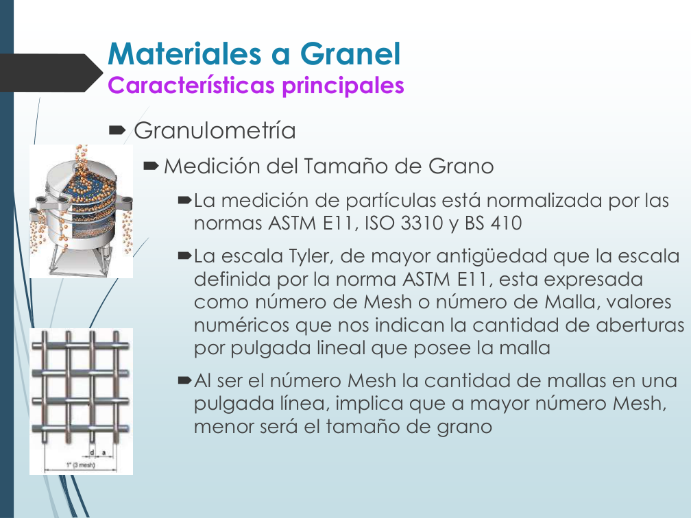
🔍 Zoom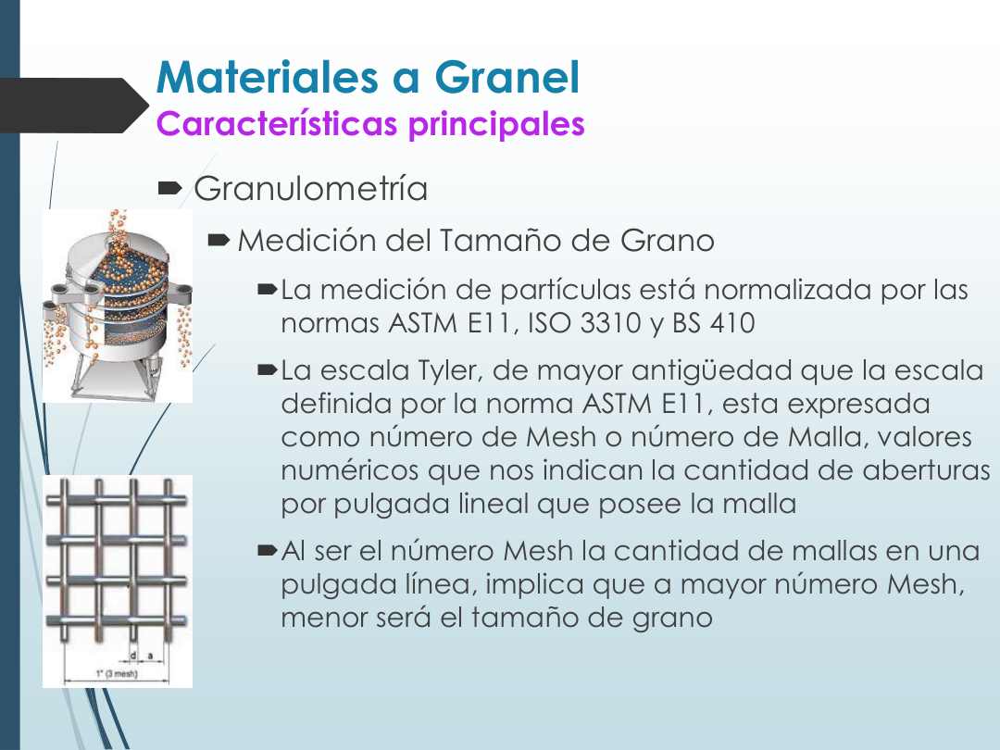
🔍 Zoom
P1
Pregunta 1: ¿Qué es el número MESH de una malla? ¿Para qué se utiliza y cómo se calcula?
▼
- Definición de MESH: Es un valor numérico normalizado que representa la cantidad de aberturas por pulgada lineal ($25{,}4\text{ mm}$) que posee una tela o malla de alambre tejido metálico.
- Finalidad y Uso: Se utiliza en la industria para ensayar, medir y clasificar la distribución granulométrica del tamaño de partículas de materiales a granel sólidos (áridos, minerales, granos, polvos químicos).
- Regla fundamental: A mayor número de Mesh, más fina y cerrada es la malla, por lo que retiene partículas más pequeñas y deja pasar fracciones más finas. A menor Mesh, la malla es más abierta (para partículas gruesas).
- Fórmula Matemática de Cálculo:
- $\text{Mesh}$: Número de aperturas por pulgada lineal $[ \text{adimensional} ]$.
- $a$: Abertura libre de la malla $[ \text{mm} ]$.
- $d$: Diámetro o grosor del alambre $[ \text{mm} ]$.
P2
Ejercicios Prácticos de Examen: MESH
▼
Grimolizzi suele tomar dos ejercicios numéricos típicos en parciales y finales:
#### Caso Práctico A: Calcular abertura de malla ($a$)
Enunciado: "Para una malla normalizada de Mesh 3 fabricada con un alambre de diámetro $d = 1{,}5\text{ mm}$, determinar la abertura libre de paso ($a$)." (2do Parcial 5 Grimo)
- Resolución:
#### Caso Práctico B: Malla por pulgada cuadrada y despeje de diámetro ($d$)
Enunciado: "Indicar para una malla metálica que posee 4 aberturas por pulgada cuadrada, la dimensión del diámetro del alambre ($d$) sabiendo que la abertura libre es de $a = 11{,}04\text{ mm}$." (2do Parcial 6 Grimo)
- Resolución:
- Si hay $4\text{ aberturas}/\text{pulgada}^2$, la cantidad de aberturas por pulgada lineal es:
- Aplicando la ecuación de conservación de la pulgada lineal:
---
P3
Definiciones Normalizadas de Granulometría (Norma IRAM 1501)
▼
- Normas de referencia: ASTM E11, ISO 3310, BS 410, Serie Tyler e IRAM 1501.
- Definiciones clave de la norma:
- Partícula: Elemento discreto de material sólido, cualquiera sea su forma y tamaño.
- Diámetro equivalente por tamizado: Dimensión lineal correspondiente a la abertura de la menor malla cuadrada por la que dicha partícula puede pasar.
- Trama: Conjunto de los alambres que, cruzados y entrelazados perpendicularmente (urdimbre y trama), constituyen el tejido tamizante.
📌 Tema 2: Propiedades Físicas de los Materiales a Granel
8 PreguntasPropiedades Físicas de los Graneles: La cohesión define la resistencia a la cizalladura sin carga normal (sueltos, cohesivos, muy cohesivos). El escurrimiento se clasifica según el ángulo de reposo estático (libre $< 30°$, mediano $30°-38°$, difícil $38°-45°$, muy difícil $> 45°$). El ángulo de sobrecarga (dinámico) oscila entre 5° y 25° y determina la sección transversal real del material sobre la cinta transportadora. Norma ANSI-CEMA 550 codifica los graneles por tamaño, densidad y abrasividad.
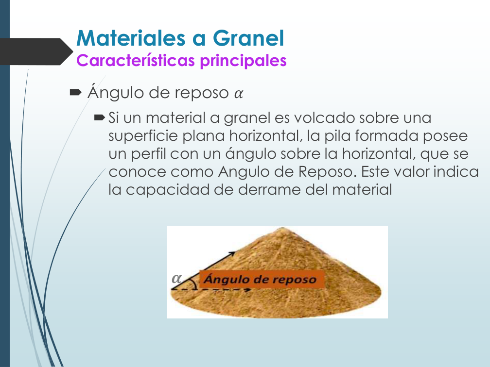
🔍 Zoom
P4
Pregunta 2: Cohesión de los granos: Concepto, clasificación y ejemplos
▼
- Concepto: Es la propiedad mecánica producto de las fuerzas de atracción intermoleculares y electrostáticas entre las partículas de un granel, que determina su resistencia al corte y su aptitud para separarse y fluir libremente.
- Clasificación y Ejemplos:
- Materiales No Cohesivos: Son aquellos en los que no existen fuerzas de adhesión significativas entre partículas; fluyen libremente y con facilidad a través de un orificio o tolva por acción de la gravedad.
- Materiales Cohesivos: Son aquellos con fuerte interacción superficial o presencia de humedad que genera fuerzas capilares; no fluyen con facilidad a través de un orificio, tendiendo a compactarse, aglomerarse y formar bóvedas, arcos o chimeneas que bloquean la descarga.
---
P5
Pregunta 3: Escurrimiento o Fluidez: Definición y clasificación según ángulo
▼
- Definición: Es la mayor o menor capacidad que poseen los materiales sólidos a granel de escurrir o fluir, adaptándose y acomodándose a la superficie y geometría del equipo transportador o tolva de almacenamiento en la que se encuentran.
- Clasificación según el Ángulo de Reposo ($\alpha$):
- Muy Alta (Muy fácil): Ángulo $\le 19^\circ$.
- Alta (Fácil): Ángulo entre $20^\circ$ y $29^\circ$.
- Media / Promedio: Ángulo entre $30^\circ$ y $39^\circ$.
- Baja (Difícil): Ángulo $\ge 40^\circ$.
- Factores influyentes: Cohesión entre partículas, tamaño medio de grano, esfericidad, rugosidad superficial y porcentaje de humedad libre.
P6
Pregunta 4: Ángulo de Reposo: Variaciones y factores que lo modifican
▼
- Definición: Es el ángulo que forma la generatriz del talud natural o "copete" de una pila cónica de granel con respecto al plano horizontal de apoyo, cuando el material es volcado libremente desde una altura moderada. Se calcula midiendo el ángulo entre la pendiente de la pila y la horizontal.
- Variación admisible: Para un mismo tipo de material, el ángulo de reposo puede variar hasta en $15^\circ$.
- Factores que provocan estas variaciones:
- Tamaño de partícula (granulometría más fina suele aumentar el ángulo de fricción interna).
- Grado de esfericidad (partículas esféricas ruedan mejor y reducen el ángulo; partículas angulares o lajas lo aumentan).
- Rugosidad superficial de las partículas.
- Contenido de humedad en la pila (la tensión superficial del agua incrementa fuertemente la cohesión aparente).
- Homogeneidad de la mezcla (distribución de tamaños dentro de la pila).
P7
Pregunta 5: Ángulo de Reacondicionamiento Dinámico / Sobrecarga
▼
- Concepto: Es el ángulo que adopta la superficie libre del granel respecto de la horizontal cuando el material entra en movimiento sobre un transportador dinámico (vibración, traslación sobre rodillos de una cinta transportadora).
- Comportamiento: Al ponerse en movimiento continuo, las sacudidas provocan un asentamiento y acomodamiento de los granos, lo que produce una disminución del ángulo de reposo que oscila entre $10^\circ$ y $15^\circ$ respecto del valor estático ($\delta \approx \alpha - 10^\circ \text{ a } 15^\circ$).
P8
Pregunta 6: Ángulo de Inclinación Máxima de Equipos ($\lambda$)
▼
- Definición: Es el ángulo de inclinación máximo recomendable (determinado experimentalmente) para un equipo transportador (por ejemplo, cinta transportadora con banda lisa), por encima del cual parte del granel transportado comienza a rodar o deslizar hacia atrás en sentido contrario al avance.
- Consecuencias de superarlo: Provoca retroceso de carga, mermas de producto, riesgo de atascamientos y pérdida severa de eficiencia volumétrica.
- Valores típicos: Para bandas lisas oscila habitualmente entre $15^\circ$ y $22^\circ$ (máximo $20^\circ$). Con bandas nervadas o de tacos puede llegar hasta $30^\circ - 32^\circ$.
P9
Pregunta 7: Abrasividad de los Graneles y Cuidados en el Transporte
▼
- Definición: Es la capacidad que posee un material para arrancar, desgastar o erosionar por fricción partículas o partes de otros cuerpos al entrar en contacto directo con las superficies de los equipos transportadores.
- Clasificación CEMA:
- Medianamente Abrasivo.
- Moderadamente Abrasivo.
- Extremadamente Abrasivo.
- Cuidados exigidos en el diseño:
- Velocidad: Exige operar a menor velocidad lineal para reducir el desgaste erosivo por impacto.
- Cintas: Seleccionar bandas con cobertura de caucho de alta resiliencia y gran resistencia a la abrasión (norma DIN W o X).
- Transporte Neumático: Utilizar cañerías de pared gruesa (Schedule elevado) y codos especiales con revestimientos cerámicos, de basalto fundido o cajas de choque (codos de turbulencia ciega).
P10
Pregunta 8: Características Primarias y Secundarias de los Graneles
▼
- Primarias (Propiedades físicas estructurales):
- Granulometría / Tamaño y forma de grano.
- Peso específico / Densidad aparente $[ \text{t/m}^3 \text{ o } \text{lb/ft}^3 ]$.
- Capacidad de escurrimiento o fluidez.
- Ángulo de reposo y ángulo de sobrecarga dinámico.
- Ángulo de inclinación máxima admisible de los equipos.
- Abrasividad.
- Secundarias (Comportamiento frente al ambiente y manipulación):
- Higroscopicidad (tendencia a absorber humedad ambiente).
- Friabilidad (propiedad de quebrarse o degradarse en finos por impacto).
- Inflamabilidad y polvos explosivos (riesgo de explosión en silos y elevadores).
- Corrosividad y ataque químico sobre aceros y gomas.
- Toxicidad y emanación de gases nocivos.
- Compactibilidad (reducción de volumen bajo presión estática).
- Temperatura del producto (graneles calientes requieren bandas especiales).
P11
Pregunta 9: Codificación de Graneles según Norma ANSI-CEMA 550
▼
- Límite de características mixtas: ¿Cuántas características mixtas o propiedades diversas permiten incluir "como máximo" las normas ANSI-CEMA 550? No tiene límite (se agregan tantas letras como propiedades secundarias posea el material).
- Estructura del Código Alfanumérico CEMA 550:
- 1° Símbolo: Densidad aparente en libras por pie cúbico $[ \text{lb/ft}^3 ]$ (número de hasta 3 dígitos).
- 2° Símbolo: Tamaño de grano / distribución granulométrica (letra con o sin subíndice: A, B, C, D).
- 3° Símbolo: Grado de escurrimiento / fluidez (número 1 al 4, derivado del ángulo de reposo).
- 4° Símbolo: Abrasividad (número 5: moderada, 6: media, 7: extremadamente abrasivo).
- 5° Símbolo: Características secundarias o misceláneas (letras combinadas: L, N, P, etc.).
- Ejercicio Típico de Examen:
- Peso específico: $0{,}241\text{ t/m}^3 = 15\text{ lb/ft}^3 \implies \mathbf{15}$
- Tamaño de grano: $2{,}7\text{ mm } (0{,}106'') \implies \mathbf{B_6}$
- Ángulo de reposo: $25^\circ \text{ (Fluidez alta)} \implies \mathbf{2}$
- Abrasividad moderada $\implies \mathbf{6}$
- Muy polvoriento $\implies \mathbf{L}$
- Explosivo $\implies \mathbf{N}$
- Código CEMA resultante: $\mathbf{15\ B_6\ 2\ 6\ L\ N}$
📌 Tema 3: Cintas Transportadoras para Graneles
10 PreguntasCintas Transportadoras para Graneles: Operan conformadas en artesa mediante estaciones de 3 rodillos inclinados (típicamente $20°$, $35°$ o $45°$) para triplicar la capacidad de carga respecto a una banda plana y evitar derrames laterales. La tracción se logra por rozamiento entre el tambor motriz engomado y la banda según la fórmula de Euler $T_1/T_2 = e^{\mu \alpha}$. La limpieza exige rascadores primarios de poliuretano, secundarios y arado interior en V. Las cintas tubulares (Pipe Conveyor) encierran el material evitando polución y permiten curvas cerradas 3D.
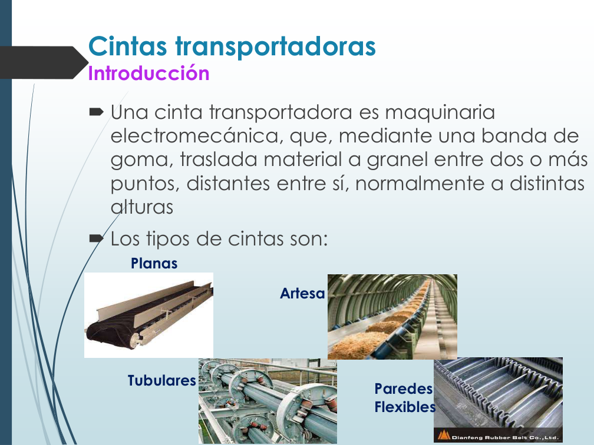
🔍 Zoom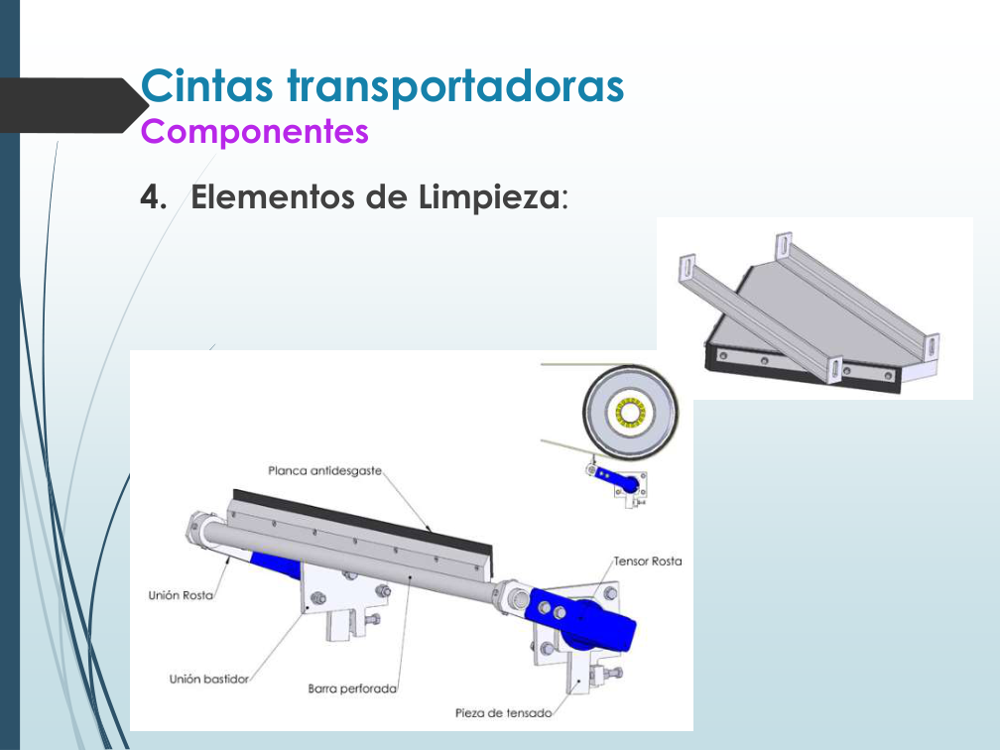
🔍 Zoom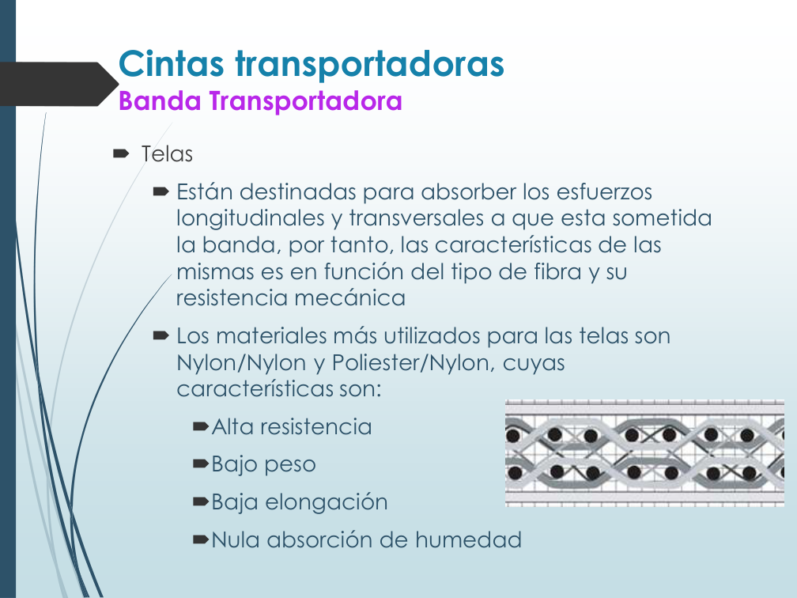
🔍 Zoom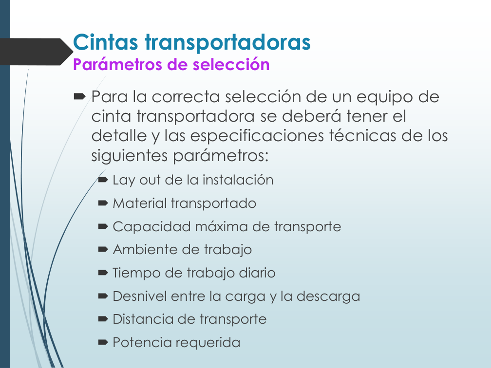
🔍 Zoom
P12
Pregunta 10: ¿Por qué algunas cintas transportadoras se fabrican en Artesa?
▼
La configuración en artesa (inclinación de los rodillos laterales a $20^\circ$, $35^\circ$ o $45^\circ$ formando una cuna de 2 o 3 rodillos) se utiliza exclusivamente para el movimiento de sólidos a granel por tres razones operativas fundamentales:
- Maximizar la Capacidad de Transporte: Al adoptar forma cóncava, se incrementa notablemente el área de la sección transversal de la vena de carga ($C$) respecto de una banda plana, elevando directamente la capacidad volumétrica y másica según:
- Control de Derrames Laterales: La concavidad actúa como pared de contención continua que impide que los granos o piedras caigan por los bordes laterales durante la marcha.
- Centrado Automático de la Carga: La gravedad dirige constantemente el árido hacia el fondo de la artesa, garantizando que el centro de masa permanezca alineado en el eje longitudinal de la banda y evitando el desalineamiento lateral.
P13
Pregunta 11: 5 Parámetros que definen la capacidad de transporte
▼
La capacidad horaria de una cinta transportadora de graneles depende de:
- Ancho de la banda: Determina la base geométrica de la sección transversal.
- Velocidad lineal de la banda: Relación directa con el caudal transportado ($m/s$).
- Disposición y forma de la cuna de desplazamiento: Define el ángulo de artesa (plana, 2 rodillos o 3 rodillos a $20^\circ, 35^\circ, 45^\circ$) y por ende la sección útil.
- Inclinación longitudinal del equipo: A mayor pendiente ascendente, menor es la capacidad admisible (se aplica el coeficiente reductor de inclinación $K$).
- Características del material transportado: Principalmente el peso específico aparente ($Pe$), el ángulo de reposo y el ángulo de reacondicionamiento dinámico (sobrecarga).
- Unidad de medida: Toneladas por hora $[\text{t/h}]$ o $[\text{Tn/h}]$.
P14
Pregunta 12: Parámetros generales para definir y seleccionar la cinta
▼
- Layout y trazado de la instalación.
- Naturaleza y propiedades del material transportado.
- Capacidad máxima requerida $(\text{t/h})$.
- Condiciones del ambiente de trabajo (humedad, temperatura, intemperie).
- Régimen de trabajo diario (horas/día de operación continua).
- Desnivel geométrico entre el punto de carga y descarga ($H$).
- Distancia entre centros de tambores ($L$).
- Potencia requerida en el accionamiento.
P15
Pregunta 13: Generación del movimiento por el tambor motriz
▼
El par motor (torque) entregado por el motorreductor se aplica al eje del tambor motriz y se transforma en una fuerza tangencial en su periferia, la cual se transmite a la banda por rozamiento o fricción. Esta fuerza de tiro ($T$) arrastra a la banda cargada debiendo vencer la sumatoria de:
- Peso propio del tramo de banda cargada y de retorno.
- Peso del material a granel depositado sobre la banda.
- Rozamiento de giro en los cojinetes de todas las estaciones de rodillos (portantes y retorno).
- Esfuerzo de elevación por la inclinación del transportador ($\Delta H \cdot Q$).
P16
Pregunta 14: Procedimientos para aumentar el rozamiento en el tambor motriz
▼
Para evitar el resbalamiento de la banda sobre el tambor motriz según la fórmula de Euler ($T_1/T_2 \le e^{\mu \theta}$), se aplican cuatro métodos:
- Revestimiento o Engomado del Tambor: Recubrir el tambor de acero con una capa de caucho vulcanizado (dureza Shore A $60-70$). Puede ser liso o con diseño ranurado/chevronado en espiga, lo cual expulsa agua y polvo y eleva drásticamente el coeficiente de fricción ($\mu$).
- Aumentar el Ángulo de Abrace ($\theta$): Incorporar un tambor de inflexión (polea desviadora) muy próximo al tambor motriz para obligar a la banda a rodear mayor circunferencia, incrementando el contacto de $180^\circ$ hasta $210^\circ - 230^\circ$.
- Uso de Tambores en Tándem: Emplear dos tambores motrices motorizados trabajando en serie, logrando un arco de contacto sumado de $350^\circ$ a $480^\circ$ para grandes potencias mineras.
- Aumento de la Tensión Inicial ($T_2$): Mediante sistemas tensores por gravedad (contrapeso vertical), tornillo o cabrestantes automáticos, asegurando una fuerza normal constante contra el tambor.
P17
Pregunta 15: Sistemas y elementos de limpieza de la banda
▼
- Cara activa / portante (exterior de la banda):
- Rascador Primario: Montado en el tambor de descarga/motriz, inmediatamente por debajo de la trayectoria de caída del árido. Lámina de poliuretano o goma sin tela con presión elástica.
- Rascador Secundario: Ubicado en el ramal inferior de retorno, inmediatamente después del tambor motriz, para remover películas adheridas de polvo fino o lodo.
- Cara no activa / interna (contacto con tambores):
- Rascador en "V" (Arado deflector): Instalado sobre la cara interna de la banda en el ramal de retorno, ubicado justo antes del tambor de reenvío/cola. Su vértice en forma de V desvía lateralmente piedras o partículas sueltas caídas al retorno para impedir que queden atrapadas entre la banda y el tambor, lo cual perforaría la tela.
P18
Pregunta 16: Parámetros de selección de los 3 componentes de la banda
▼
Una banda transportadora está compuesta por tres partes técnicas:
- Cobertura Superior: Se selecciona en función de la naturaleza del material transportado (abrasividad, tamaño de grano, temperatura, agresividad química, grasa/aceite) y de las condiciones de servicio.
- Cobertura Inferior: Se selecciona en función del tipo de cuna de desplazamiento sobre la que apoya (deslizamiento sobre chapa continua, rodillos coplanares o rodillos en artesa).
- Carcasa / Malla de Tracción (Tejido interno): Se define exclusivamente por la tensión de trabajo máxima ($T_{max}$) del sistema, seleccionando número de telas de poliamida/poliéster (EP) o cables de acero (Steel Cord).
P19
Pregunta 17: Estaciones superiores de rodillos: Clasificación y tipos
▼
- Estación Normal: Rodillos lisos de acero distribuidos a lo largo del tramo portante desde la zona de carga hasta la de descarga. El espaciamiento ($1{,}0\text{ a }1{,}5\text{ m}$) depende del ancho de banda y del peso del material.
- Estación de Impacto: Ubicada bajo la tolva de carga. Los rodillos están recubiertos de anillos de caucho amortiguadores con espaciamiento reducido ($80\text{ a }250\text{ mm}$) para absorber la energía cinética de caída del árido y proteger la banda.
- Estación Autocentrante: Estación basculante pivotante montada sobre un eje central que se orienta ante desvíos laterales, corrigiendo la trayectoria de la banda. Se coloca cada 30 a 50 metros.
P20
Pregunta 18: Dispositivos de descarga y acopio: Trippers, Stackers y Reclaimers
▼
- Trippers (Carros volcadores móviles): Dispositivos intercalados en la cinta que elevan la banda formando una curva en "S" invertida para descargar el granel lateralmente en cualquier punto intermedio a lo largo de una nave de silos. Pueden ser manuales o motorizados.
- Stackers (Apiladores): Brazos lanzaderas orientables que reciben el árido y forman pilas o parvas cónicas longitudinales a cielo abierto con mínima generación de polvos.
- Reclaimers (Recuperadores): Estructuras móviles de tipo pórtico con rueda de cangilones frontal para dragar el material acopiado y regresarlo al circuito de cintas.
P21
Pregunta 19: Cintas Transportadoras Tubulares (Pipe Conveyor)
▼
- Principio: La banda se carga abierta y plana, pasa por estaciones formadoras de rodillos hexagonales que solapan sus bordes envolviendo el granel como un tubo cerrado hermético, y se reabre en la cabeza de descarga. El retorno también viaja enrollado en forma de tubo.
- 4 Ventajas y Particularidades Clave:
- Protección ambiental y merma cero: Evita totalmente la emisión de polvo y caída de producto durante el trayecto, protegiendo a la vez la carga de la lluvia y el viento.
- Retorno cerrado: El tramo de vuelta tubular transporta los restos adheridos en su interior sin derramar suciedad bajo la estructura.
- Curvas tridimensionales: Permite negociar curvas horizontales y verticales cerradas acompañando el relieve del terreno, eliminando la necesidad de costosas torres de transferencia intermedia.
- Mayores inclinaciones: Al estar el material confinado por las paredes del tubo, soporta inclinaciones operativas sensiblemente mayores que una cinta abierta tradicional.
📌 Tema 4: Elevadores a Cangilones (Transporte Vertical)
3 PreguntasElevadores a Cangilones: Equipos de manutención continua vertical. Los centrífugos operan a alta velocidad ($1{,}2\text{ a }3{,}5\text{ m/s}$) para cereales y granos secos aprovechando la fuerza centrífuga en el tambor de cabeza. Los continuos o positivos operan a baja velocidad ($0{,}5\text{ a }1\text{ m/s}$) para materiales frágiles, pesados, húmedos o abrasivos, descargando por gravedad sobre el lomo del cangilón precedente.
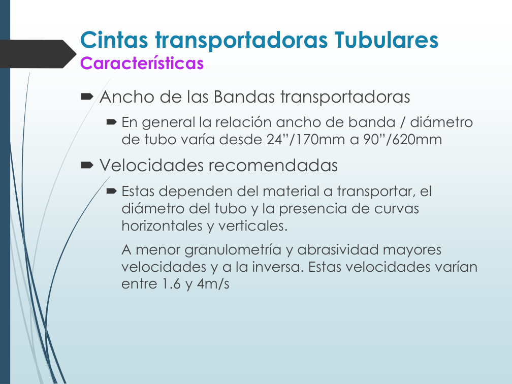
🔍 Zoom
P22
Pregunta 20: Tipos de Elevadores a Cangilones: Centrífugos vs. Positivos/Continuos
▼
- Elevadores de Descarga Centrífuga:
- Carga: Por dragado directo en el pie del elevador.
- Descarga: Por acción de la fuerza centrífuga proyectada cuando el cangilón pasa sobre el tambor superior.
- Disposición: Cangilones espaciados (el paso es de 2 a 3 veces la altura del cangilón).
- Materiales aptos: Graneles secos, no abrasivos y de libre escurrimiento (granos, cereales, pellets, azúcar).
- Elevadores de Descarga Positiva / Continua (Por Gravedad):
- Carga: Directa desde tolva de alimentación (sin dragado forzado).
- Descarga: Por gravedad a baja velocidad; el dorso invertido del cangilón anterior actúa como rampa vertedora.
- Disposición: Cangilones continuos sin separación entre ellos.
- Materiales aptos: Graneles frágiles, muy húmedos/pastosos o de granulometría gruesa.
P23
Pregunta 21: Velocidades y aplicaciones para materiales frágiles, húmedos y gruesos
▼
- Rango de velocidad de un elevador de descarga positiva: $0{,}5\text{ m/s a }1{,}0\text{ m/s}$ (en contraste con los centrífugos que van de $1{,}2\text{ a }4{,}0\text{ m/s}$).
- Tipos de graneles recomendados y justificación:
- Materiales Frágiles: La baja velocidad y la ausencia de dragado violento en el pie evitan que los granos se quiebren o dañen.
- Materiales Muy Húmedos o Cohesivos: (Como arcillas húmedas o lodos) que al no soltarse fácilmente por fuerza centrífuga requieren vaciarse suavemente por gravedad invertida.
- Materiales de Alta Granulometría: Trozos de mineral o rocas grandes que trabarían o romperían el cangilón si se intentara cargarlos por dragado.
P24
Pregunta 22: Componentes Principales de un Elevador a Cangilones
▼
- Componentes clave de la instalación:
- Cabeza del elevador con tambor motriz y capot de descarga.
- Unidad motriz (motorreductor con freno antirretorno back-stop para evitar caída por gravedad ante corte eléctrico).
- Pantalones o cañas verticales (chapa de acero que envuelve los ramales ascendente y descendente).
- Órgano de tracción (banda de caucho reforzada con telas o cadena de eslabones de acero).
- Cangilones (metálicos estampados, de fundición o de polietileno/nylon de alta densidad).
- Pie del elevador con tambor tensor de reenvío, tolva de entrada de carga y compuertas de limpieza.
📌 Tema 5: Transportadores a Tornillo Sin Fin / Roscas Helicoidales
2 PreguntasTransportadores a Tornillo Sin Fin (Roscas Helicoidales): Compuestos por un eje tubular con una hélice helicoidal continua que gira dentro de una cuna. La selección constructiva depende de la inclinación: para recorridos horizontales o hasta $15°$ se usa cuna en canal en U con tapa desmontable (fácil inspección y limpieza); para inclinaciones superiores a $20°$ hasta $90°$ se exige cuna tubular hermética para evitar el retroceso del material por gravedad.
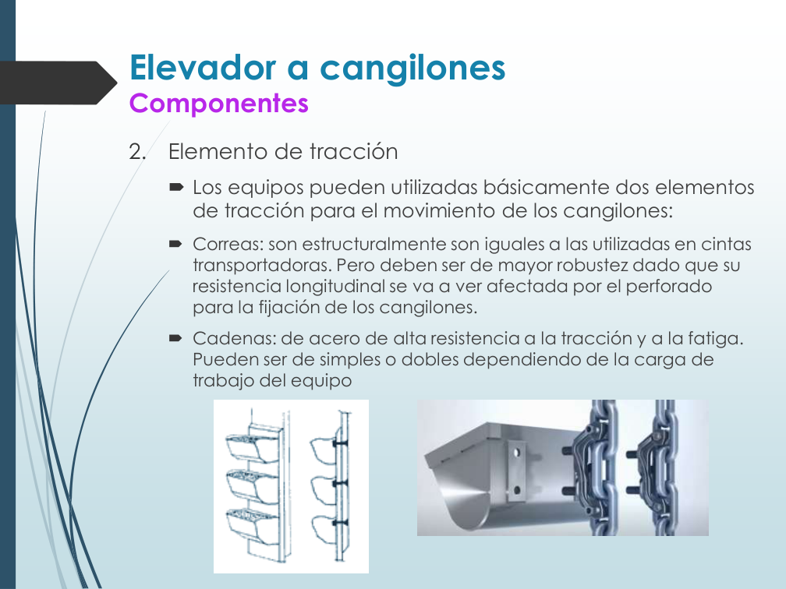
🔍 Zoom
P25
Pregunta 23: Selección de Cuna según Inclinación: Canal en U vs. Tubular
▼
- Enunciado de Examen:
- Respuesta de Cátedra:
- a) Posición Horizontal: Se utiliza obligatoriamente una carcasa de tipo "Canal en U" con tapa desmontable.
- b) Posición Vertical (o inclinaciones superiores a $20^\circ-30^\circ$ hasta $90^\circ$): Se debe utilizar obligatoriamente una carcasa de tipo "Tubular" (cilíndrica cerrada).
---
P26
Pregunta 24: Comparativa Técnico-Económica entre Cuna en U y Tubular
▼
- Consumo Energético: La rosca tubular consume entre un $15\%$ y $20\%$ más de energía eléctrica que la de canal en U debido a la mayor fricción contra todo el perímetro tubular.
- Inversión Inicial: A igualdad de rendimiento en pendientes, el tornillo entubado requiere entre un $20\%$ y $25\%$ menos de inversión en obra e instalación frente a otras soluciones de elevación complejas.
- Integridad del Grano: El tornillo entubado remueve intensamente las partículas contra la camisa cilíndrica, por lo que presenta mayor riesgo de quebrar o partir graneles frágiles que la cuna en U.
📌 Tema 6: Transportadores a Cadena para Graneles (Redler)
1 PreguntasTransportadores a Cadena Redler: Aplican el principio de arrastre en masa. Al desplazarse una cadena con paletas dentro de un conducto rectangular, la fricción interna entre los granos del material cohesivo supera al rozamiento de éstos contra las paredes metálicas de la cuna, logrando que el producto se desplace en una columna sólida y compacta sin turbulencia ni molienda.
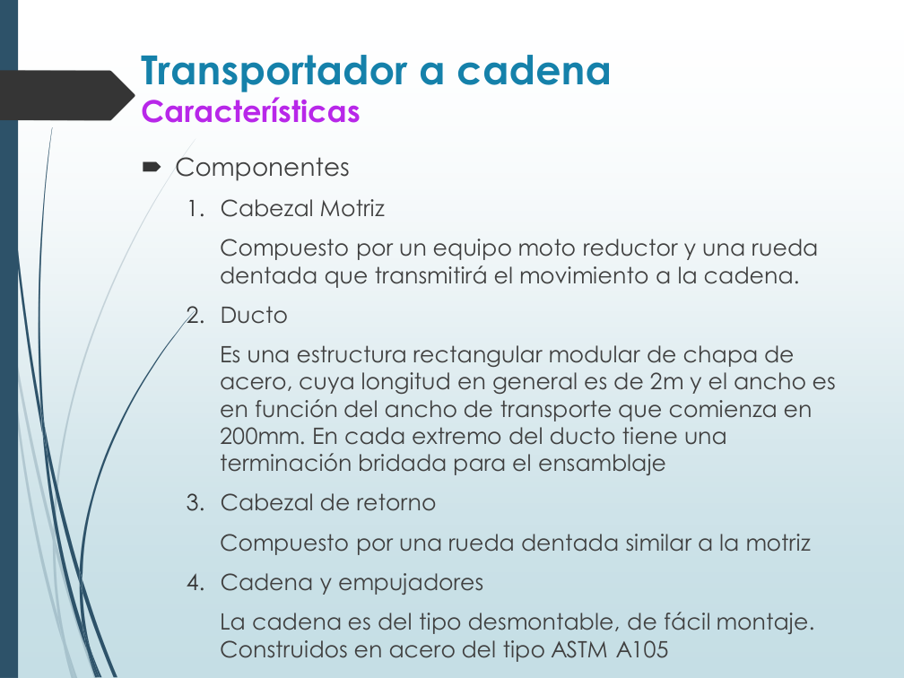
🔍 Zoom
P27
Pregunta 25: Principio de arrastre en masa y características constructivas
▼
- Principio de Funcionamiento ("Arrastre en Masa"): Consiste en una cadena de tracción de eslabones desmontables de acero provista de paletas empujadoras a $90^\circ$, sumergida por completo en el fondo de un conducto rectangular cerrado. Cuando la cadena avanza dentro del material, la fricción interna entre las partículas adyacentes del granel es superior a la fricción de rozamiento entre el material y las paredes de chapa de la carcasa. Como resultado, toda la columna de granel es inducida a desplazarse hacia adelante como una masa compacta sólida continua.
- Características Constructivas:
- Hermeticidad total: No genera polvos al exterior ni permite el ingreso de contaminantes.
- Versatilidad geométrica: Trabaja en horizontal, inclinado y vertical en una única máquina.
- Seguridad: Obligatoriedad de dispositivo antirretorno en tramos inclinados.
- Múltiples tomas: Permite múltiples puntos de carga y descarga a lo largo de su traza mediante compuertas correderas.
📌 Tema 7: Transporte Neumático de Materiales a Granel
2 PreguntasTransporte Neumático de Graneles: Conducción mediante corriente de aire en tuberías cerradas. La Fase Densa opera a baja velocidad ($1\text{ a }10\text{ m/s}$) y alta presión ($1\text{ a }6\text{ bar}$) con relación sólido/gas $> 40$, preservando materiales frágiles o altamente abrasivos. La Fase Fluida o Diluida opera a alta velocidad ($15\text{ a }35\text{ m/s}$) y baja presión ($< 1\text{ bar}$) para polvos livianos no abrasivos a distancias medias.
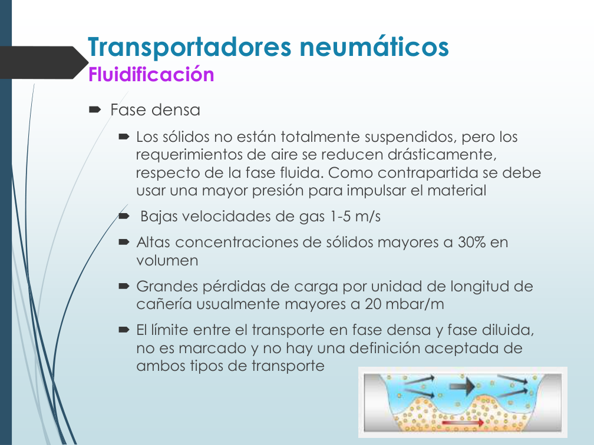
🔍 Zoom
P28
Pregunta 26: Cuadro comparativo Fase Densa vs. Fase Fluida
▼
| Parámetro / Característica | Fase Densa | Fase Fluida (Diluida) |
|---|---|---|
| Estado del Sólido | No está totalmente suspendido; avanza en masa, pistones, paquetes o dunas. | Totalmente suspendido en la corriente aerodinámica de gas/aire. |
| Velocidad del Gas (Aire) | Baja: $1\text{ a }5\text{ m/s}$. | Alta: Mayor a $20\text{ m/s}$. |
| Concentración de Sólidos | Alta: Mayor al $30\%$ en volumen. | Baja: Menor al $1\%$ en volumen. |
| Pérdida de Carga ($\Delta P / L$) | Alta: Mayor a $20\text{ mbar/m}$. | Baja: Menor a $5\text{ mbar/m}$. |
| Presión Requerida | Alta: $3\text{ a }7\text{ bar}$ (requiere compresores). | Baja: $\le 1\text{ bar}$ (opera con sopladores Roots). |
| Desgaste y Degradación | Mínimo desgaste de cañerías y nula rotura de grano (baja velocidad). | Alto desgaste abrasivo en codos y riesgo de rotura por impacto. |
| Aplicación Principal | Graneles pesados, frágiles o muy abrasivos. | Graneles livianos, finos y no abrasivos. |
| Ejemplos Típicos de Examen | Azúcar granulada, sal, café en grano, legumbres, cemento, bentonita, arena de sílice. | Harina, almidón, malta molida, resinas plásticas, óxido de hierro, dióxido de titanio. |
---
P29
Pregunta 27: Modalidades de impulsión: Presión positiva, vacío y combinado
▼
- Presión Positiva:
- El generador de aire (compresor o soplador) se coloca al inicio de la instalación e introduce aire a presión.
- Ideal cuando existe un solo punto de alimentación (origen) y múltiples puntos de descarga (destinos).
- Presiones: $3\text{ a }7\text{ bar}$ en fase densa; $\approx 1\text{ bar}$ en fase fluida.
- Vacío (Presión Negativa):
- La bomba de vacío se ubica al final del circuito, aspirando el árido hacia un receptor o silo central con filtro de mangas.
- Ideal cuando existen múltiples puntos de toma o carga y un solo punto de destino (ej. descarga de vagones tolva, barcazas o camiones graneleros).
- Su gran ventaja es que ante cualquier fisura no hay fugas de polvo hacia la planta.
- Vacío: Hasta $737\text{ mmHg}$ en fase densa; hasta $380\text{ mmHg}$ en fase fluida.
- Sistema Combinado (Presión y Vacío):
- Integra un tramo de aspiración por vacío en la recepción acoplado a un tramo impulsor por presión positiva hacia silos distantes; aprovecha las ventajas de ambas tecnologías para redes complejas multifuente y multidestino.
📊 Matriz de Frecuencia y Fechas de Exámenes
Estadísticas GrimolizziA continuación se resume la recurrencia exacta de cada una de las temáticas de la Unidad 3 en los exámenes finales de Grimolizzi:
| Tema Específico | Exámenes donde se tomó | Frecuencia |
|---|---|---|
| Cohesión (Definición, tipos y ejemplos) | Final 22/04/2026, Final 30/07/2025, Final 1 LU, Final Grimo 2025 | 4 veces |
| Número MESH (Definición, fórmula y ejercicios numéricos) | Final 23/02/2026, 2do Parcial 3, 2do Parcial 5, 2do Parcial 6 | 4 veces |
| Capacidad de Carga de Banda Transportadora (5 Parámetros) | Final 22/04/2026, Final 09/02/2026, Resumen Finales | 5 veces |
| Rosca Transportadora: Cuna Canal en U vs. Tubular | Final 09/02/2026, Final Mayo 2025, Final 25/02/2025, Resumen | 4 veces |
| Transporte Neumático: Fase Densa vs. Fase Fluida | Final 1 LU, Final Grimo 2025, Resumen Finales | 3 veces |
| Elevadores a Cangilones: Velocidad y Descarga Positiva | Final 23/02/2026, Final 16/12/2024, Resumen Finales | 3 veces |
| Cinta Transportadora en Artesa (Objetivos y fórmula) | Final 23/02/2026, Resumen Finales | 2 veces |
| Ángulo de Reposo y Variaciones (Factores modificadores) | Final 22/04/2026, Final 02/03/2026, Resumen Finales | 3 veces |
| Escurrimiento y Clasificación según Ángulo | Final 30/07/2025, Final 02/03/2026, Resumen Finales | 3 veces |
| Aumento de Rozamiento en Tambor Motriz (Engomado y Abrace) | 1er Parcial Grimolizzi, 2do Parcial 5 Grimo, Resumen Finales | 3 veces |
| Limpieza de Cintas (Rascadores primario, secundario y en V) | 1er Parcial Grimolizzi, 2do Parcial 8 Grimo, Resumen Finales | 3 veces |
| Cinta Transportadora Tubular (Pipe Conveyor - 4 Ventajas) | Final 2 LU, Diapositivas oficiales Unidad 3 | 2 veces |
| Codificación de Graneles ANSI-CEMA 550 (Características mixtas) | Final Abril 2025, 2do Parcial 6 Grimo, Resumen Finales | 3 veces |
| Ángulo de Inclinación Máxima ($\lambda$) | Final 09/02/2026 | 1 vez |
| Transportadores a Cadena Redler (Arrastre en masa) | Resumen Finales, Diapositivas oficiales Unidad 3 | 2 veces |
⚙️ Unidad 4: Manejo en Unidades e Intralogística
Colchón de Aire, Ruedas Mecanum, Power & Free, EOM, MDR, Cables, Eslingas, Pastecas y PEMP
📌 Tema 1: Transporte por Colchón de Aire (Cojines Neumáticos)
5 PreguntasTransporte por Colchón de Aire: Aprovecha el efecto suelo inyectando aire a baja presión ($1\text{ a }3\text{ bar}$) en campanas elastoméricas toroidales. Al levantarse milimétricamente la carga, flota sobre una película de aire microscópica ($0{,}05\text{ a }0{,}1\text{ mm}$) reduciendo el coeficiente de fricción a valores ínfimos ($\mu \approx 0{,}001$), lo que permite que una sola persona mueva manualmente cargas de más de 10 toneladas. Requiere pisos de alta planitud (Índice de Piso 3 según DIN 18202).
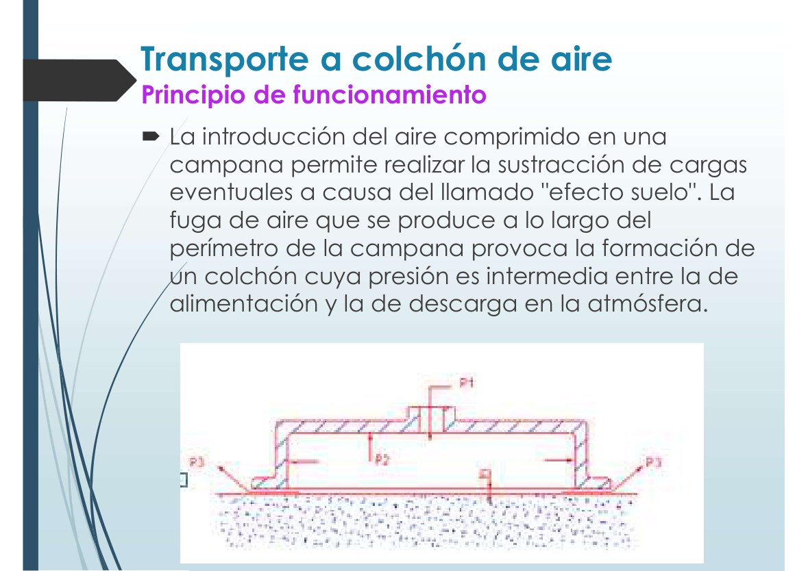
🔍 Zoom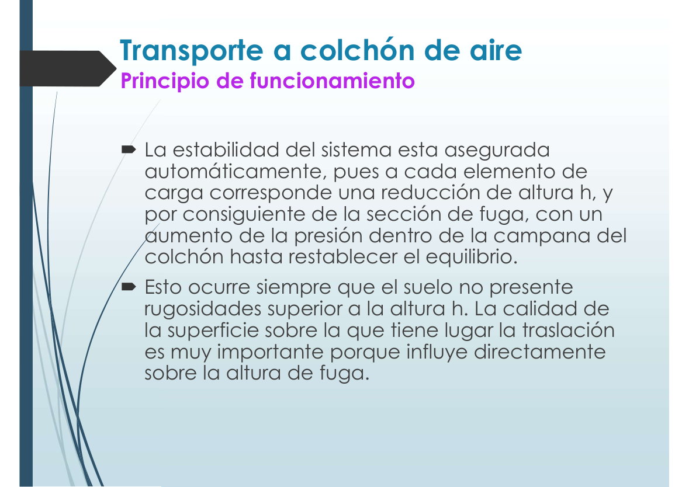
🔍 Zoom
P30
Pregunta 1: Principio de Funcionamiento y Fuerza de Sustentación
▼
- Definición de Fuerza de Sustentación: Es la fuerza vertical ascendente que permite despegar y mantener en suspensión estotécnica a una carga pesada sobre una superficie de piso, mediante la inyección continua de aire comprimido a baja presión en el interior de una campana o cojín elastomérico gracias al aprovechamiento del efecto suelo.
- Ecuación Fundamental de Sustentación:
- $F$: Fuerza de sustentación generada $[ \text{kgf} \text{ o } \text{N} ]$. Para lograr la levitación, debe ser superior o igual al peso total de la carga más la tara de la estructura ($F \ge Q_{\text{total}}$).
- $p$: Presión efectiva de trabajo dentro de la cámara/campana $[ \text{kg/cm}^2 \text{ o } \text{bar} ]$. Oscila comúnmente entre $1{,}05\text{ y }3{,}75\text{ bar}$ (excepcionalmente hasta $5 - 6\text{ bar}$).
- $S$: Superficie útil de sustentación del colchón $[ \text{cm}^2 \text{ o } \text{m}^2 ]$. Para un colchón circular de diámetro $D$: $S = \frac{\pi \cdot D^2}{4}$.
- Sección y Altura de Fuga:
- $h$: Altura de fuga (separación entre el borde del cojín y el piso), comprendida típicamente entre $0{,}13\text{ mm}$ y $0{,}80\text{ mm}$ (décimas de milímetro).
- $L$: Perímetro exterior de la campana $[ \text{m} ]$. Para campanas circulares: $L = \pi \cdot D$.
- Potencia Neumática Instalada:
- Es directamente proporcional a la carga a transportar y a la altura de fuga ($h$).
- Es inversamente proporcional al perímetro del cojín ($L$), dado que al aumentar la superficie del colchón la presión específica requerida disminuye.
- Razón de la geometría circular: Los módulos circulares son los más eficientes energéticamente porque maximizan la relación Superficie/Perímetro ($S/L = D/4$), reduciendo al mínimo la fuga perimetral de aire.
P31
Pregunta 2: Número Índice de Piso 3 y Requisitos de Superficie
▼
- Concepto de Número Índice de Consumo Superficial: Es un coeficiente adimensional normalizado que cuantifica la influencia de la rugosidad, textura y porosidad del piso sobre el caudal volumétrico de aire comprimido ($Q$) necesario para garantizar la película de flotación de un colchón de aire.
- Patrón de Referencia Unitario ($\text{Índice} = 1$): Se toma como base de cálculo el consumo sobre una superficie de cristal plano y pulido (superficie ideal perfectamente especular y no porosa).
- Significado exacto de "Índice de Piso 3":
- Exigencias Técnicas del Piso según Norma DIN 18202 (Parte 5, Línea 4):
- Planitud y Nivelación: No debe presentar pendientes (de lo contrario la carga flotante desliza incontroladamente por gravedad, debido a su bajísima fricción).
- Impermeabilidad: Piso sin porosidades; debe estar curado, allanado mecánicamente y protegido con selladores continuos de base epoxi o poliuretano de alta densidad.
- Tratamiento de Juntas de Dilatación: No pueden existir ranuras abiertas. Las juntas deben rellenarse con un compuesto elástico especial de poliuretano/uretano con dureza Shore 94 A, con una profundidad mínima no inferior a $10\text{ mm}$, perfectamente enrasadas al nivel superficial para evitar pérdidas bruscas de presión al cruzarlas.
P32
Pregunta 3: Etapas de Funcionamiento y Almohadillas de Aterrizaje
▼
El ciclo operativo de un colchón de aire con labios inflables se desarrolla en 3 pasos sucesivos:
- Paso 1 (Estado de Reposo - Apoyo Mecánico): Antes de inyectar aire, la carga descansa apoyada plenamente sobre almohadillas de elastómero sólido llamadas Landing Pads (almohadillas de aterrizaje). Su función vital es soportar mecánicamente la masa y proteger las bolsas o labios esféricos flexibles de caucho de ser aplastados o pellizcados bajo el peso muerto cuando el circuito está despresurizado.
- Paso 2 (Presurización y Sellado Perimetral): Al ingresar aire comprimido por la válvula dosificadora hacia la cámara interna, las bolsas esféricas/toroidales se inflan y expanden hacia abajo contra el suelo, creando una junta o sello hermético contra la superficie del piso y levantando la carga unos milímetros por sobre los landing pads.
- Paso 3 (Levitación y Fuga Uniforme): Cuando la presión interna compensa exactamente el peso gravitatorio, el aire comprimido comienza a escapar de manera laminar y uniforme a través de la interfaz entre los labios elastoméricos y el piso. La carga queda flotando en el aire a una cota de entre $0{,}13\text{ mm}$ y $0{,}80\text{ mm}$, eliminando todo contacto sólido con el suelo.
- Fuerza de empuje residual: La resistencia por rozamiento se reduce a un coeficiente $\mu \approx 0{,}001 - 0{,}003$, demandando apenas $1\text{ a }3\text{ kg}$ de empuje horizontal por cada tonelada métrica de carga transportada (un solo operario puede empujar y orientar manualmente una carga de $10\text{ t}$).
P33
Pregunta 4: Tipos Constructivos de Colchón de Aire
▼
- Colchón de Labios Inflables: Membrana toroidal flexible recomendada para naves industriales con pisos epoxi lisos de alta calidad. Ofrece traslación suave multidireccional con presiones de $1{,}5\text{ a }3{,}5\text{ bar}$.
- Colchón a Pollera Flexible (Hovercraft / Aerodeslizador): Emplea una falda perimetral de lona reforzada de gran recorrido. Diseñado para salvar obstáculos de hasta $1\text{ metro}$ de altura, grietas profundas y transitar sobre terrenos irregulares, nieve, fango y agua (altura de fuga de varios centímetros).
- Colchón a Campana Rígida: Campana metálica o de fundición donde el flujo continuo de aire crea un cojinete de soporte directo entre el labio rígido y el piso. Requiere mecanizados de precisión y pisos perfectamente maquinados.
- Colchón Multicelular: Formado por múltiples celdas hexagonales o rectangulares limitadas por tabiques de elastómero. Brinda altísima estabilidad ante desalineaciones o cargas con centro de gravedad excéntrico.
- Sistema Combinado Colchón-Ruedas: Plataformas para cargas pesadas (hasta $20.000\text{ lb}$) que poseen ruedas convencionales para circular vacías. Mediante resortes mecánicos, las ruedas se mantienen en contacto con el piso; cuando se coloca la carga y se presuriza el sistema neumático, el colchón levanta la plataforma retrayendo las ruedas del suelo.
P34
Pregunta 5: Ventajas Operativas y Limitaciones Técnicas
▼
- Ventajas Operativas:
- Distribución Superficial de Cargas: El peso se distribuye en una amplia área de sustentación, reduciendo drásticamente la presión específica sobre el pavimento ($< 3\text{ kg/cm}^2$) y suprimiendo el deterioro mecánico o fisuras del hormigón.
- Omnidireccionalidad Absoluta (360°): Permite traslación en cualquier dirección y rotación pura sobre el propio eje en pasillos angostos, con radios de giro cero.
- Posicionamiento Milimétrico: Es el método predilecto para montaje de componentes ultra-pesados y delicados (reactores nucleares, turbinas eléctricas, transformadores de subestaciones, fuselajes de aviones).
- Seguridad y Silencio: Operación exenta de ruidos mecánicos de rodadura, sin chispas y apta para salas blancas o atmósferas explosivas (ATEX).
- Limitaciones Técnicas:
- Exigencia Extrema del Piso: No tolera desniveles, fisuras abiertas, porosidades ni pendientes (en pisos inclinados hay riesgo severo de deriva gravitatoria).
- Dependencia Neumática Continua: Exige suministro ininterrumpido de aire comprimido mediante mangueras flexibles o compresores a bordo.
- Costo de Infraestructura: El piso debe construirse o reacondicionarse según DIN 18202 con recubrimiento epoxi de alta resistencia.
📌 Tema 2: Ruedas Industriales Convencionales y Omnidireccionales
5 PreguntasRuedas Industriales y Mecanum: El dimensionamiento exige calcular la carga por rueda $Q_r = (Q_t + Q_p)/(n - 1)$ para absorber desniveles del piso donde una rueda queda en el aire. Las ruedas omnidireccionales Mecanum poseen rodillos libres montados a $45°$ alrededor del perímetro; combinando el sentido y velocidad de rotación de 4 ruedas motrices independientes, la plataforma puede desplazarse en cualquier dirección del plano cartesiano sin viraje.
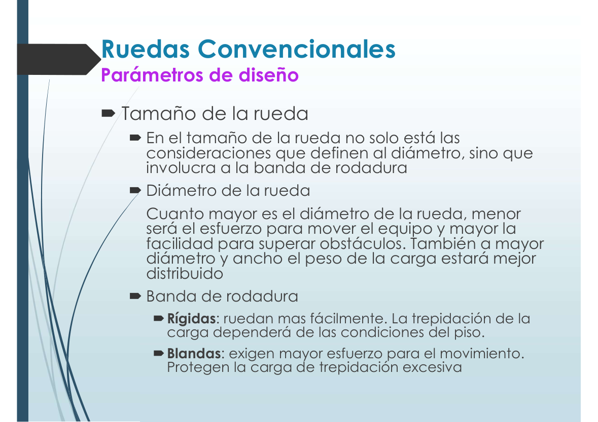
🔍 Zoom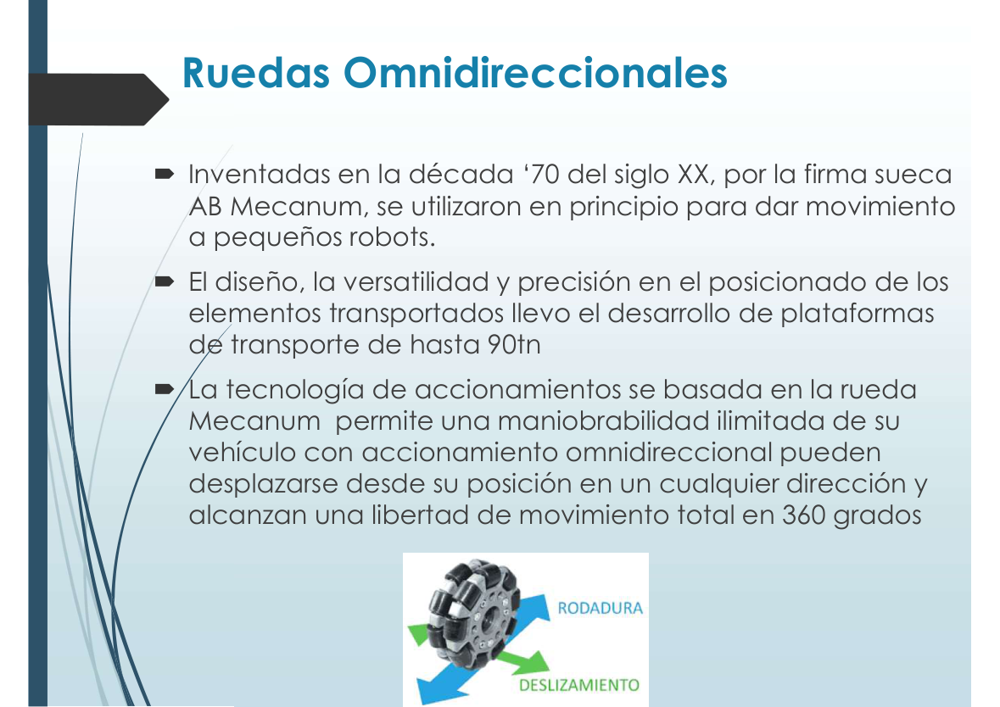
🔍 Zoom
P35
Pregunta 6: Parámetros de Diseño y Selección de Ruedas
▼
Para seleccionar una rueda industrial convencional se deben dimensionar y especificar 6 factores determinantes:
- Capacidad de Carga por Rueda ($Q_r$): Peso propio de la zorra/plataforma más la carga máxima útil, afectado por la distribución geométrica y el factor de seguridad dinámico.
- Configuración de Ruedas y Plataforma: Cantidad y disposición de ruedas fijas y giratorias ($360^\circ$) según el radio de giro y las restricciones del layout.
- Diámetro y Ancho de la Rueda: A mayor diámetro, menor es el esfuerzo de tracción inicial (resistencia a la rodadura) y mayor la facilidad para sortear juntas y obstáculos.
- Tipo de Rodamiento de Eje: Elección entre orificio liso, bujes antifricción de bronce/nylon, o rodamientos de bolas / rodillos a agujas sellados.
- Características del Piso y Condiciones Ambientales: Pavimento (hormigón, metálico, asfalto), humedad, temperatura exterior (fuera de $-5^\circ\text{C a } +40^\circ\text{C}$ exige grasas especiales), aceites, ácidos o presencia de virutas metálicas.
- Forma de Tracción y Régimen de Servicio: Tracción manual (velocidad de paso humano $\le 4\text{ km/h}$) vs. tracción mecánica/motorizada con autoelevadores o tractores ($> 4\text{ km/h}$, que impone rodamientos a bolas y reduce la capacidad admisible de carga hasta en un $30-50\%$). Servicio estándar intermitente vs. pesado continuo.
P36
Pregunta 7: Cálculo de Carga por Rueda ($Q_r$)
▼
Grimolizzi evalúa la fórmula simplificada de cálculo de la carga admisible por rueda ($Q_r$) en función de la naturaleza de la carga y el estado del pavimento:
| Naturaleza de la Carga | Tipo de Superficie de Piso | Fórmula de Cálculo de $Q_r$ | Justificación Mecánica |
|---|---|---|---|
| Carga Sólida | Superficie Lisa y Nivelada | $$Q_r = \frac{Q_t}{3}$$ | En una plataforma de 4 ruedas sobre piso real, geométricamente sólo 3 puntos definen un plano estático; una rueda siempre queda transitoriamente descargada. |
| Carga Sólida | Superficie con Obstáculos / Desniveles | $$Q_r = \frac{Q_t}{2}$$ | Al superar resaltos, juntas, lomos de burro o rampas, el vehículo bascula y toda la carga se transmite transitoriamente sobre dos ruedas opuestas o de un mismo eje. |
| Carga Líquida | Superficie Lisa | $$Q_r = \frac{Q_t}{2}$$ | En depósitos o cubas de líquidos, el oleaje dinámico (sloshing), las frenadas bruscas y las aceleraciones concentran hasta el 50% de la masa sobre las dos ruedas de apoyo delanteras o traseras. |
Donde:
- $Q_r$: Capacidad de carga nominal requerida para cada rueda individual $[ \text{kgf} ]$.
- $Q_t$: Carga total del sistema = Peso de la carga transportada ($Q_c$) + Peso propio de la zorra/carro ($Q_p$) $[ \text{kgf} ]$.
P37
Pregunta 8: Configuraciones de Plataformas
▼
- 2 Ruedas Giratorias + 2 Ruedas Fijas:
- Es la disposición más universal, estable y económica para recorridos cortos y largos.
- Regla ergonómica de cátedra: En plataformas manuales pesadas, las ruedas giratorias deben colocarse del lado del operador (donde se empuja), lo que facilita el direccionamiento y control de trayectoria; en convoyes con remolcador mecánico, se ubican al frente.
- 4 Ruedas Giratorias:
- Proporciona máxima maniobrabilidad lateral y traslación transversal en pasillos súper estrechos.
- Desventaja: Es muy difícil de gobernar en líneas rectas largas (tiende a "derivar" o serpentear). Se recomienda agregar traba direccional mecánica.
- 1 Rueda Giratoria + 2 Ruedas Fijas (Triciclo):
- Disposición muy económica para cargas livianas. Exige que la carga esté estrictamente centrada para evitar vuelcos laterales.
- 4 Ruedas Giratorias en esquinas + 2 Ruedas Fijas centrales:
- Configuración para cargas industriales muy pesadas. Las ruedas fijas absorben la mayor fracción de carga y otorgan guía direccional, mientras las cuatro esquinas giratorias aportan estabilidad sin perder giro.
- 4 Ruedas Fijas en Rombo (con ruedas centrales de carga sobreelevadas 5 mm):
- Se montan dos ruedas de carga en el centro y dos ruedas de equilibrio en los extremos anterior y posterior elevadas $5\text{ mm}$. Permite girar la zorra sobre su propio centro 360°. Prohibido su uso en rampas.
- 3 Ruedas Giratorias:
- Utilizada exclusivamente en transportadores circulares para tambores de $200\text{ litros}$ y maquinarias portátiles.
P38
Pregunta 9: Ruedas Omnidireccionales (Mecanum)
▼
- Origen y Geometría Constructiva:
- Fueron inventadas en la década de 1970 por la firma sueca AB Mecanum (diseñadas por Bengt Erland Ilon).
- Constan de un cubo o dos llantas centrales sobre cuya periferia están montados una serie de rodillos cónicos independientes montados en un ángulo de $45^\circ$ respecto del plano de rotación de la rueda principal.
- Principio Cinemático de Movimiento:
- Cada rueda se acciona mediante un motor eléctrico y variador de velocidad independiente.
- Al girar la rueda motriz, los rodillos pasivos a $45^\circ$ generan fuerzas de empuje oblicuas resultantes. Combinando las velocidades y sentidos de rotación de 4 ruedas Mecanum (vectorización de fuerzas), el vehículo puede realizar:
- Traslación longitudinal (avance y retroceso rectilíneo).
- Traslación diagonal en cualquier ángulo.
- Rotación pura en $360^\circ$ sobre su centro geométrico sin cambiar la orientación del chasis.
- 4 Ventajas Operativas Clave tomadas en Examen:
- Maniobrabilidad Ilimitada en Espacios Confinados: Permite manipular cargas de hasta $90\text{ toneladas}$ en pasillos mínimos de plantas industriales sin requerir radios de curvatura.
- Menores Costos de Instalación y Pavimento: A diferencia del colchón de aire o filoguiados, no requiere ningún tratamiento superficial especial del piso ni lo deteriora.
- Precisión Milimétrica: Alcanza precisiones de posicionado en estaciones automáticas de $\pm 5\text{ mm}$.
- Mantenimiento y Desmontaje Rápido: Es posible sustituir rodillos individuales gastados directamente sobre el vehículo sin desmontar la rueda completa.
P39
Pregunta 10: Banda de Rodadura, Dureza Shore y Rodamientos
▼
- Banda de Rodadura Rígida vs. Blanda:
- Banda Rígida (Hierro fundido, acero, poliamida/nylon Shore 70-80 D): Mínima resistencia a la rodadura; rueda con gran facilidad y exige menor esfuerzo motriz. Como contrapartida, transmite vibraciones a la carga y puede marcar pisos de hormigón blando.
- Banda Blanda (Goma natural, caucho sintético Shore 60-75 A): Gran amortiguación acústica y absorción de trepidaciones; protege pisos delicados pero incrementa notablemente el esfuerzo de tracción y se degrada con hidrocarburos.
- Poliuretano Moldeado (Shore 90-95 A): Material de compromiso óptimo para intralogística; soporta altas cargas, resiste aceites, grasas y evita la penetración de virutas metálicas o astillas en su superficie rodante.
- Tipos de Rodamientos en el Eje de Ruedas:
- Agujero Liso: Fricción directa eje-masa; sin mantenimiento, resistente al agua y corrosión, para carros livianos.
- Bujes de Nylon con Grafito o Bronce: Autolubricados, resistentes a la corrosión para ambientes químicos o lavaderos.
- Rodamientos a Bolas: Blindados (2RS), ideales para cargas medianas/pesadas y tracción mecánica ($> 4\text{ km/h}$).
- Rodamientos de Rodillos / Agujas: Reparten el esfuerzo en líneas de contacto; máxima resistencia al impacto y cargas pesadas extremas.
- Accesorios de Seguridad:
- Freno mecánico: Freno a la rueda o freno combinado de giro y rueda.
- Traba de Dirección: Bloquea el cabezal giratorio a $0^\circ$ o $90^\circ$ para estabilizar trayectos rectos.
- Guarda-Hilos / Anti-Hilos: Chapas envolventes en el eje que impiden que filamentos plásticos, virutas o suciedad se enrollen en el rodamiento bloqueando el giro.
📌 Tema 3: Transportadores Aéreos (Power, Power & Free y EOM)
9 PreguntasTransportadores Aéreos (Power & Free y EOM): En un sistema Power simple, las cargas cuelgan de una cadena motriz continua de velocidad uniforme. En un Power & Free, existen dos rieles superpuestos: la cadena superior motriz (Power) empuja mediante empujadores retráctiles a carros libres inferiores (Free); al hacer tope mecánico contra otra carga, el perrillo bascula desacoplándose, permitiendo acumular cargas en pulmones de espera sin detener la cadena principal. El EOM utiliza carros individuales autopropulsados eléctricamente.
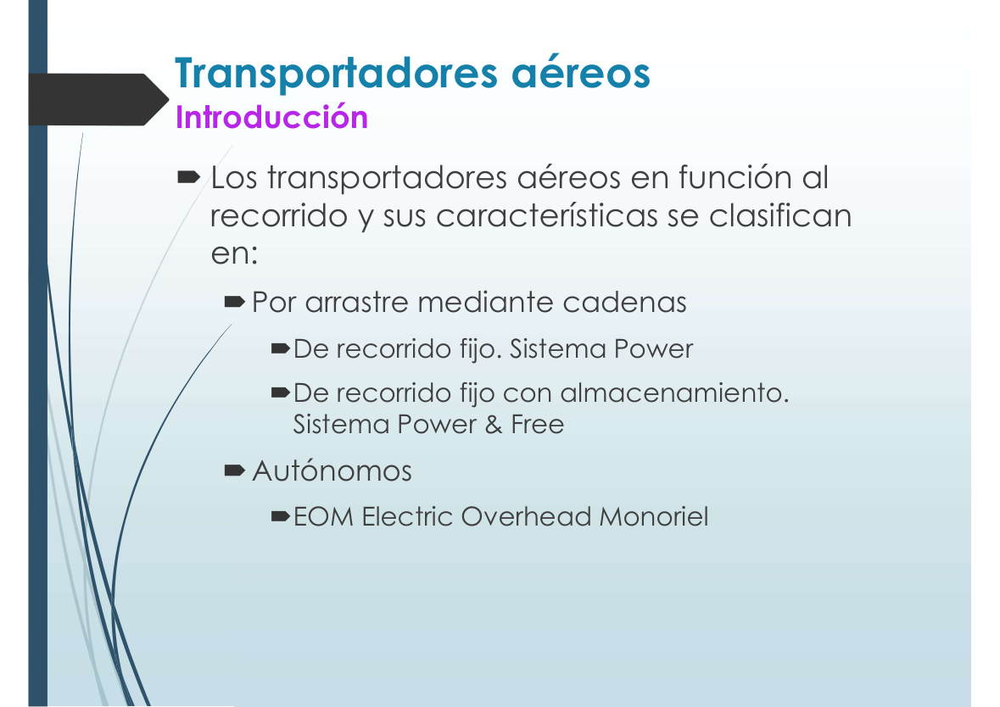
🔍 Zoom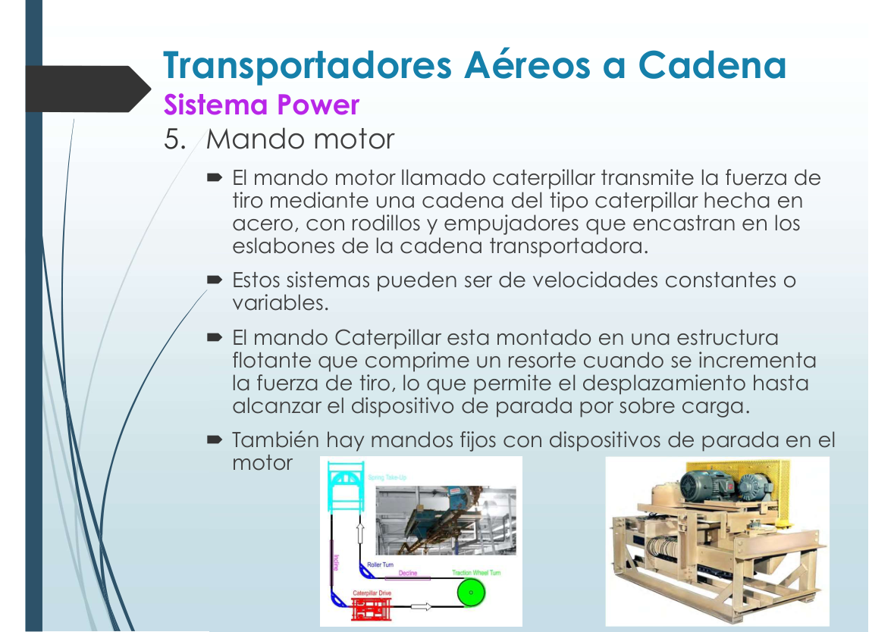
🔍 Zoom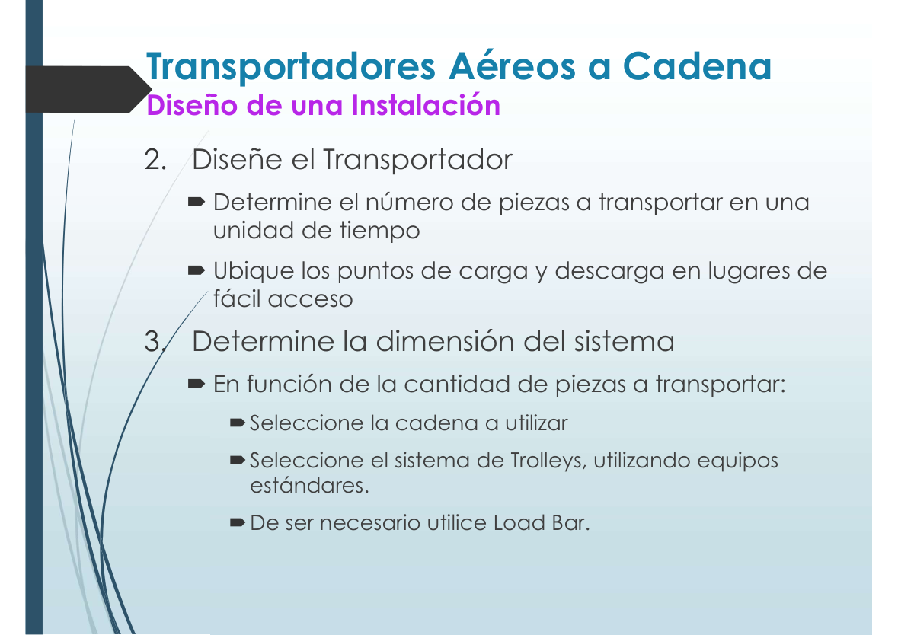
🔍 Zoom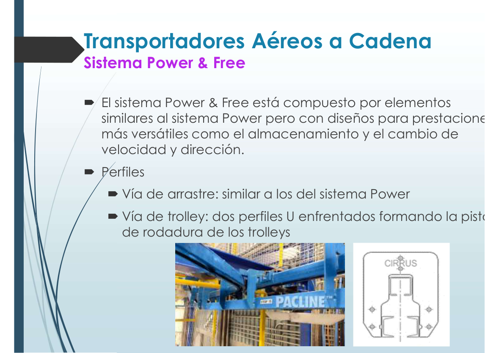
🔍 Zoom
P40
Pregunta 11: Cadenas Forjadas vs. Cadenas Unibilt
▼
- Cadenas Forjadas sin Remaches (Riveless Forged Chains):
- Fabricadas con eslabones y pernos forjados en aceros aleados templados (series normalizadas X348, X458, X678).
- Aplicación: Diseñadas para trabajos pesados, condiciones ambientales rigurosas y altas tensiones de tiro (hornos de curado, líneas de cataforesis, fundiciones automotrices).
- Son aptas para operar en sistemas Power y Power & Free pesados.
- Cadenas Estampadas Tipo Unibilt (Enclosed Track Chains):
- Construidas con eslabones estampados y rodillos biplanares que corren completamente encerrados dentro de un perfil tubular o perfil C laminado.
- Aplicación: Catalogadas como cadenas livianas a medianas. Al estar confinadas dentro de la guía cerrada, ofrecen altísima seguridad para los operarios, protegen los rodamientos de la acumulación de polvo exterior y son aptas para sistemas Power y Power & Free livianos (industria textil, electrodomésticos, mataderos avícolas).
P41
Pregunta 12: Sistema Power vs. Power & Free y Acumulación
▼
- Diferencias Estructurales y Constructivas:
- Sistema Power (Monorriel Simple): Posee una única guía portante (perfil I / doble T) por donde circula la cadena de arrastre. Los trolleys van empernados o fijados permanentemente a la cadena. Todas las cargas se desplazan simultáneamente a la misma velocidad; si se detiene un puesto de trabajo, debe pararse la línea completa.
- Mecanismo Cinemático de Acumulación (Desenganche Automático):
---
P42
Pregunta 13: Mando Motriz Caterpillar Fijo vs. Flotante
▼
- Mando Caterpillar Fijo:
- Consiste en un bucle corto de cadena auxiliar provisto de perros que engranan tangencialmente con la cadena aérea principal para transmitirle tracción.
- Va anclado rígidamente a la estructura soporte de la nave.
- Protección contra sobrecargas: Utiliza un perno fusible mecánico de corte. Si la cadena aérea sufre un atascamiento en una curva o puesto de trabajo, el perno se cizalla, desacoplando el motorreductor pero provocando una parada intempestiva y obligando al desarme y reposición manual del perno.
- Mando Caterpillar Flotante (Recomendado por la Cátedra):
- El conjunto motorreductor y oruga motriz está montado sobre una bancada móvil con guías lineales y resortes helicoidales calibrados.
- Principio de Seguridad Electromecánico: Cuando la tensión en la cadena excede el valor de régimen (debido a un tirón brusco o atascamiento incipiente), el esfuerzo reactivo vence la fuerza de los resortes calibrados y desplaza longitudinalmente la bancada motriz.
- Ventaja: Evita roturas mecánicas, no destruye pernos fusibles y reduce los tiempos de parada de línea. La diferencia económica frente al fijo es mínima.
P43
Pregunta 14: Load Bar (Barra de Carga)
▼
- ¿Qué es?: Es una viga estructural o barra metálica longitudinal de unión articulada que vincula los cuerpos de dos o más trolleys adyacentes en un transportador aéreo.
- ¿Dónde se coloca?: Se instala suspendida por debajo de las ruedas de los trolleys en el perfil de carga (en sistemas Power & Free se monta entre el trole delantero y el trasero; en sistemas Power vincula dos troles simples consecutivos).
- ¿Cuándo y para qué se utiliza?:
- Estabilidad y Geometría de Cargas Largas: Es indispensable para transportar cargas voluminosas, piezas estructurales o carrocerías de vehículos, ya que impide el cabeceo longitudinal y asegura el paso suave en las curvas verticales ascendentes y descendentes.
P44
Pregunta 15: Parámetros de Tiro Horizontal, Vertical y Total
▼
El dimensionamiento y cálculo de la tracción de la cadena de un transportador aéreo se desglosa en 3 componentes:
- Fuerza de Tiro Horizontal ($F_H$):
- Parámetros intervinientes:
- $Q_{TS}$: Peso total del sistema en movimiento $[ \text{lb} \text{ o } \text{kg} ]$, que suma el peso de la cadena ($Q_{tch}$), peso de todos los trolleys ($Q_{ttr}$), peso de los portacargas ($Q_{tpc}$) y peso de las cargas útiles ($Q_{tc}$).
- $C_f$: Coeficiente de fricción de los rodamientos de los trolleys sobre el perfil (típicamente $C_f = 0{,}025 \text{ a } 0{,}030$).
- Fuerza de Tiro Vertical ($F_V$):
- Parámetros intervinientes:
- $Q_c$: Peso unitario de una carga transportada $[ \text{lb} \text{ o } \text{kg} ]$.
- $H_T$: Desnivel vertical máximo de elevación del transportador entre su cota más baja y más alta ($H_T = H_1 - H_3$) $[ \text{ft} \text{ o } \text{m} ]$.
- $P_t$: Paso del transporte (distancia entre centros de dos cargas sucesivas) $[ \text{ft} \text{ o } \text{m} ]$.
- Fuerza de Tiro Total ($F_T$):
- Se verifica contra la carga de tiro admisible de catálogo de la cadena ($F_{T\text{ adm}}$):
- Si $F_T > F_{T\text{ adm}}$, se adopta una cadena de paso superior. Si $F_T$ es excesivamente menor ($> 30\%$), se verifica una cadena menor para no sobredimensionar.
P45
Ejercicio Práctico: Dimensionamiento de Cadena Aérea
▼
- Fuente Oficial: Diapositivas Oficiales Cátedra UTN (G-UT04-03, Slides 27 a 31).
Se desea dimensionar la cadena de un transportador aéreo continuo para una línea de proceso que presenta un desnivel vertical.
Datos del Lay Out:
* Longitud total rectificada del transportador ($L_t$): $560\text{ ft}$
* Longitud útil con carga ($L_u$): $500\text{ ft}$
* Alturas referidas al piso: Cota máxima $H_1 = 17\text{ ft}$; Cota intermedia $H_2 = 9\text{ ft}$; Cota de carga $H_3 = 5\text{ ft}$
> Datos de la Carga y Paso:
* Peso unitario de la carga útil ($Q_c$): $120\text{ lb}$
* Peso unitario del dispositivo porta-carga ($Q_{pc}$): $15\text{ lb}$
* Paso de la cadena armada ($P_{ca}$): $2\text{ ft}$
* Paso de transporte entre cargas ($P_t$): $2\text{ ft}$
> Cadena tentativa inicial adoptada (Cadena forjada 4" X458):
* Paso de eslabón ($P_c$): $4\text{ pulg}$
* Fuerza de tiro admisible ($F_{T\text{ adm}}$): $2.500\text{ lb}$
* Peso unitario de la cadena ($Q_{ch}$): $3{,}1\text{ lb/ft}$
* Peso de cada trolley ($Q_{tr}$): $7{,}1\text{ lb}$ (Capacidad de carga admisible unitaria: $400\text{ lb}$)
* Coeficiente de fricción ($C_f$): $0{,}025$
#### Resolución Paso a Paso:
- Cálculo del número de elementos del sistema:
- Longitud de cadena rectificada: $L_{tc} = L_t = \mathbf{560\text{ ft}}$
- Número total de Trolleys:
- Número de Cargas en el tramo útil:
- Número total de Porta Cargas:
- Cálculo del Peso Total del Sistema en Movimiento ($Q_{TS}$):
- Peso total de la cadena:
- Peso total de los trolleys:
- Peso total de las cargas:
- Peso total de los porta-cargas:
- Peso Total del Sistema ($Q_{TS}$):
- Cálculo de la Fuerza de Tiro Horizontal ($F_H$):
- Cálculo de la Fuerza de Tiro Vertical ($F_V$):
- Desnivel vertical máximo:
- Fuerza vertical:
- Cálculo de la Fuerza de Tiro Total ($F_T$):
- Verificación de Seguridad y Dictamen Técnico:
- Margen de seguridad:
- Dictamen: La fuerza de tiro calculada ($1.668\text{ lb}$) es un $33{,}3\%$ menor a la carga admisible de la cadena X458 ($2.500\text{ lb}$). Dado que el margen es significativo ($> 30\%$), corresponde iterar el cálculo verificando una cadena de paso inmediatamente inferior (Cadena 3" X348) para optimizar los costos de instalación y no sobredimensionar la instalación.
P46
Pregunta 17: Cuadro Comparativo EOM vs. Power & Free
▼
| Parámetro Comparativo | EOM (Electric Overhead Monorail) | Power & Free (P&F) Mecánico |
|---|---|---|
| Principio de Tracción | Carros autónomos autopropulsados por motores eléctricos individuales sobre riel electrificado. | Cadena central continua de arrastre impulsada por mando Caterpillar. |
| Velocidad de Transporte | Muy Alta y Variable: hasta $150 - 300\text{ m/min}$, con rampas independientes de aceleración/frenado. | Baja y Constante: fija a la velocidad de la cadena, típicamente entre $9\text{ y }21\text{ m/min}$. |
| Grado de Automatización | 100% Automatizado: Control descentralizado por PLC a bordo, comunicación por bus/Wi-Fi y código de barras. | Mecánico por disparo de levas (dogs); automatización externa más limitada. |
| Nivel de Ruido y Vibración | Súper Silencioso: Ruedas con banda de poliuretano, sin impactos metálicos entre trolleys. | Elevado Ruido: Golpeteo constante de empujadores, choques de levas en acumulación y vibración de cadena. |
| Peso y Carga Estructural | Bajo Peso Lineal: Rieles de aluminio extruido o perfiles delgados; menor exigencia en techos. | Muy Pesado: Estructura birriel con dos perfiles de acero pesado; exige cerchas y vigas reforzadas. |
| Higiene y Limpieza | Totalmente Limpio: Sin cadena suspendida; nulo riesgo de goteo de lubricante sobre el producto. | Riesgo constante de goteo de aceite o grasa lubricante sobre las piezas inferiores. |
| Flexibilidad de Rutas | Máxima: Desvíos de aguja de cambio rápido, elevadores verticales y rutas programables independientes. | Desvíos mecánicos más complejos; limitado por la continuidad de los lazos de cadena. |
---
P47
Pregunta 18: Control Box de un EOM con 3 Ejes
▼
Que la caja de control electrónico (Control Box) de un carro EOM disponga de 3 ejes gobernados por variadores de frecuencia y PLC significa que coordina de forma independiente 3 grados de libertad de movimiento motriz:
- Eje 1 (Traslación Longitudinal - Eje X): Acciona el motorreductor de traslación del carro a lo largo del carril aéreo (avance, retroceso, frenado dinámico y posicionamiento preciso en estaciones).
- Eje 2 (Izaje Vertical - Eje Y): Controla un polipasto eléctrico o aparejo de cable/correa montado a bordo del carro para descender y elevar la pinza de toma de carga sin requerir elevadores fijos de piso.
- Eje 3 (Giro o Desplazamiento Transversal - Eje Z): Comanda un actuador rotativo de giro ($360^\circ$ o $\pm 90^\circ$) o un desplazador transversal de las horquillas/mordazas, permitiendo orientar espacialmente la pieza para su inserción en máquinas o líneas de montaje.
P48
Pregunta 19: Equipos Aéreos de Izaje: Puente Grúa, Pórticos y Pescantes
▼
- Puente Grúa:
- Marco Normativo Legal: Si se utiliza durante la obra civil de la nave rige el Decreto 911/96 (Construcción); cuando pasa a operar en la rutina fabril de planta debe cumplir el Decreto 351/79 (Higiene y Seguridad en el Trabajo).
- Componentes Principales:
- Grúa Pórtico y Semipórtico:
- Estructura donde las vigas principales se apoyan sobre patas rígidas en forma de pórtico que ruedan directamente sobre rieles fijados a nivel del piso exterior, prescindiendo de columnas elevadas.
- Pescantes (Grúas Pluma) - Diferencia Mural vs. Columna:
- Pescante de Mural: Va anclado a una columna o pared perimetral de la nave; su ángulo de giro está limitado mecánicamente a un máximo de $180^\circ$.
- Pescante de Columna: Posee una columna cilíndrica propia empotrada en el suelo mediante placa base de gran espesor y pernos de anclaje de tracción; su brazo puede girar de forma continua en $360^\circ$.
📌 Tema 4: Transportadores de Piso e Intralogística
8 PreguntasTransportadores de Piso e Intralogística: Incluyen Flat Top Conveyors de placas continuas para líneas de ensamble automotriz, Slat Conveyors de tablillas reforzadas para skids de carrocerías, y rodillos motorizados inteligentes MDR con control ZPA que detienen zonas individuales evitando colisiones entre cajas.
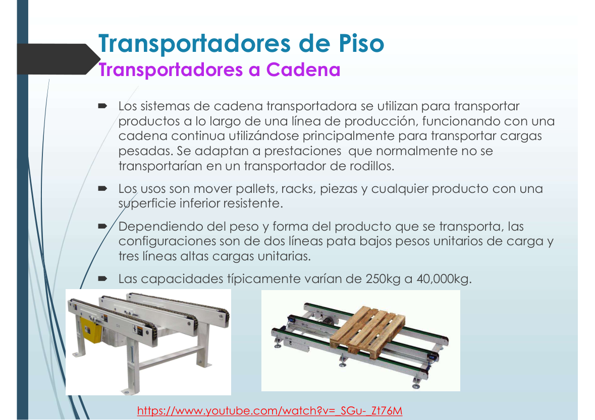
🔍 Zoom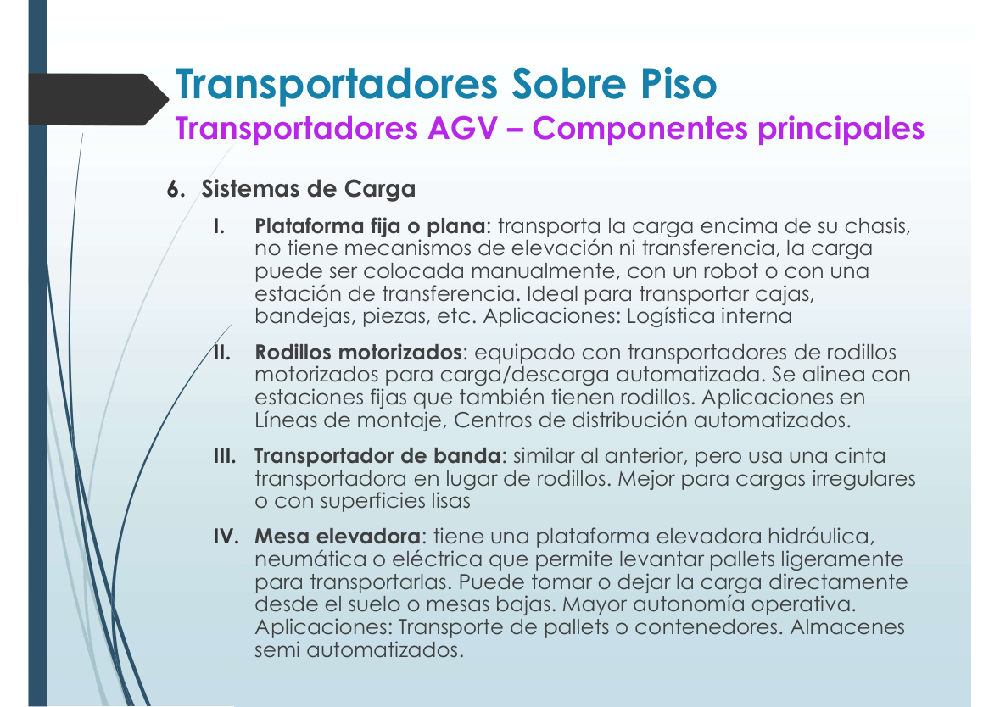
🔍 Zoom
P49
Pregunta 20: Clasificación General de Transportadores de Piso
▼
Los transportadores sobre piso se clasifican de acuerdo con su principio de impulsión y tipo de carga en:
- Motorizados para Unidades Estándar (Pallets, Cajas, Skids):
- Transportadores a cadena de arrastre (doble o triple hilera de cadenas de potencia).
- Transportadores a rodillos energizados por cadena.
- Transportadores de banda plana de PVC/poliuretano.
- Motorizados para Ensamblaje y Carrocerías (Grandes Cargas):
- Autónomos y Guiados:
- Por Gravedad / Acción Libre (No energizados):
---
P50
Pregunta 21: Power & Free Invertido
▼
- Concepto: Es una adaptación del sistema Power & Free aéreo donde las vías y la cadena motriz se colocan en el suelo o dentro de un foso bajo piso, de manera que los carros portacargas emergen hacia arriba mediante un pedestal o vástago vertical que sostiene la pieza (carrocería de auto, chasis o electrodoméstico).
- Tres Ventajas Críticas tomadas en Examen:
- Ergonomía y Accesibilidad 360°: Al no existir rieles ni cadenas colgadas en el techo por encima de la pieza, los operarios tienen acceso visual y físico total a los 4 costados y techo del vehículo sin riesgo de golpearse.
- Higiene Absoluta en Líneas de Pintura y Cataforesis: Suprime por completo el riesgo de que gotas de grasa, partículas de óxido o polvillo de la cadena aérea caigan sobre la chapa limpia o recién pintada.
- Mantenimiento a Nivel de Suelo: Las inspecciones de la cadena, mandos tensores y lubricadores se realizan cómodamente a la altura del piso de planta sin exigir trabajos en altura con andamios o plataformas.
P51
Pregunta 22: Flat Top vs. Slat Conveyors
▼
| Característica / Parámetro | Flat-Top Conveyor (Placas Rasantes) | Slat Conveyor (Tablillas Sobreelevadas) |
|---|---|---|
| Cota de Montaje | Rasante al piso: Se instala soterrado dentro de una fosa de hormigón para que la cara superior coincida exactamente con el nivel de piso. | Sobreelevado: Se instala sobre patas estructurales elevadas respecto del suelo de la nave. |
| Superficie de Trabajo | Placas planas unidas continuas de acero o fundición que forman una cinta sólida sobre la cual pueden caminar personas y pisar ruedas de autos. | Tablillas de acero, madera o plástico montadas sobre cadenas, con separaciones físicas entre sí. |
| Flexibilidad de Trayecto | Nula / Rigidez Absoluta: Limitado casi exclusivamente a trayectorias rectas horizontales. | Alta Flexibilidad Espacial: Admite trayectos tridimensionales, con cambios de nivel, ascensos, descensos y curvas. |
| Impacto en el Layout | Excelente tránsito transversal: Autoelevadores y zorras pueden cruzar por encima del transportador sin dañarlo ni detenerlo. | Barrera Física Continua: Divide la nave al medio e impide el tránsito peatonal o de vehículos rodantes transversales. |
| Costo de Instalación | Muy alto costo inicial debido a las obras civiles de apertura de fosas de hormigón y canaletas de retorno. | Bajo a moderado; se amura directamente sobre la losa existente sin obras civiles destructivas. |
| Aplicación Típica | Fin de línea de montaje automotriz, prueba de rodadura e inspección final de vehículos. | Transporte de partes, motores, prensas, ensamble de electrodomésticos y embotelladoras. |
---
P52
Pregunta 23: Reemplazo de Flat Top por Cintas de Banda
▼
En las plantas automotrices modernas, los transportadores Flat Top de tablillas de acero están siendo progresivamente sustituidos por cintas transportadoras de banda plástica/caucho de alta resistencia por 3 motivos técnico-económicos:
- Reducción Drástica de la Obra Civil: Las cintas de banda exigen zanjas de perfil mucho menor o pueden montarse con rampas perimetrales extra-chatas sobre el suelo sin picar la losa de hormigón.
- Menor Mantenimiento Mecánico: El Flat Top posee miles de eslabones, pasadores, rodillos y placas que requieren lubricación periódica intensiva y sufren desgaste mecánico por fricción; la banda continua carece de articulaciones móviles, suprimiendo lubricantes.
- Confort Acústico y Seguridad: Las bandas de caucho son extremadamente silenciosas frente al chirrido metálico de las placas de acero, reduciendo el nivel de ruido por debajo de los límites exigidos por la Ley 19.587.
P53
Pregunta 24: Transportadores a Rodillos de Copas para Skids
▼
- ¿Qué es un Skid?: Es un bastidor o trineo metálico de transporte que consta de dos patines longitudinales paralelos de perfil tubo provistos de 4 conos de centraje y anclaje para transportar carrocerías o partes automotrices a lo largo de la planta.
- ¿Qué es un Rodillo a Copas?: Es un diseño especial de rodillo de piso donde sólo los dos extremos del eje poseen casquetes de apoyo ensanchados en forma de "copa" o pestaña, mientras que todo el tramo central del eje permanece completamente desnudo al aire.
- Justificación Técnico-Económica de Cátedra:
- Dado que el skid apoya exclusivamente sus dos patines en los extremos laterales, el material en el centro del rodillo es innecesario.
- Dejar el eje desnudo permite fabricar rodillos con mucho menor peso propio, menor inercia al arranque y notable reducción en el costo de acero, abaratando significativamente la inversión en líneas de cientos de metros de longitud.
P54
Pregunta 25: Rodillos Accionados a Cadena vs. Motor Integrado (MDR)
▼
- Transportadores a Rodillos Accionados por Cadena ("Rollo a Rollo"):
- Cada rodillo cuenta con una rueda dentada doble en su extremo. Se vinculan de a pares mediante lazos cortos de cadena de potencia que transmiten el movimiento secuencialmente de un rodillo al siguiente.
- El primer rodillo se conecta al motorreductor principal.
- Limitación de diseño tomada en examen: La longitud máxima admisible de un tramo está estrictamente limitada por la capacidad de tiro máxima de la primera cadena del sistema, que soporta la suma de fricciones de todo el tren de rodillos.
- Transportadores con Rodillos de Motor Integrado (MDR - Motor Driven Roller):
- La línea se subdivide en zonas independientes de $450\text{ a }760\text{ mm}$, donde un rodillo motor impulsa a $2-4$ rodillos esclavos mediante correas Poly-V.
- Ventaja Fundamental (Acumulación con Presión Cero - ZPA): Mediante fotocélulas en cada zona, el sistema detiene los bultos a milímetros de distancia sin que se toquen entre sí. Solo se encienden los motores de las zonas donde hay paquetes en tránsito, ahorrando hasta un $60\%$ de consumo eléctrico y eliminando ruidos en vacío.
P55
Pregunta 26: Transportadores por Gravedad / Acción Libre
▼
- Concepto: Son sistemas de transporte no energizados que aprovechan la energía potencial gravitatoria montando los equipos con un ligero declive longitudinal ($1{,}5^\circ \text{ a } 3^\circ$ de pendiente).
- Tipos Principales:
- A Rodillos Cilíndricos Libres: Para cajas de cartón, cajones y pallets con base plana y rígida.
- A Roldanas (Skatewheels): Rueditas plásticas o de acero montadas sobre ejes pasantes. Tienen menor inercia de arranque que los rodillos, siendo ideales para cajas ultralivianas.
- Mesas de Bolillas de Transferencia: Esferas de acero omnidireccionales en cazoletas; permiten el giro manual y desvío en estaciones de empaque y clasificación.
- Ruedas Multidireccionales: Ruedas con rodillos en la periferia que combinan rodadura longitudinal con deslizamiento lateral para derivaciones en ángulo recto.
P56
Pregunta 27: Vehículos de Guiado Automático (AGV)
▼
- Definición: Vehículo autopropulsado y no tripulado, comandado por computadora a bordo, capaz de seguir trayectorias programadas variables y flexibles dentro de una planta o centro de distribución.
- Tecnologías de Navegación y Guiado:
- Dispositivos de Seguridad (Norma ISO 10218 / ANSI B56.5):
- Tipos de Mecanismos de Carga: Plataforma plana fija, transportador de rodillos motorizados integrado (para transferencias automáticas), mesa elevadora hidráulica para pallets, horquillas tipo autoelevador (Automated Forklift) o gancho de arrastre para tren logístico (Tugger AGV).
📌 Tema 5: Elementos de Elevación e Izaje de Cargas
11 PreguntasElementos de Elevación e Izaje de Cargas: Cables de acero con almas de fibra (AF para máxima flexibilidad) o almas de acero (AA/IWRC para soportar aplastamiento y temperatura). Tipos de cordones Seale (alambres exteriores gruesos resistentes a abrasión) vs. Warrington vs. Filler. Eslingas de poliéster según código internacional de colores (violeta 1t, verde 2t, amarillo 3t, gris 4t, rojo 5t, marrón 6t, azul 8t, naranja 10t+). Al inclinar los ramales con ángulo $\beta$, la tensión en cada ramal se multiplica por $1/\cos(\theta)$. Factores de seguridad mínimos legales (Decreto 351/79): cables 6:1, cadenas 5:1, eslingas sintéticas 7:1.
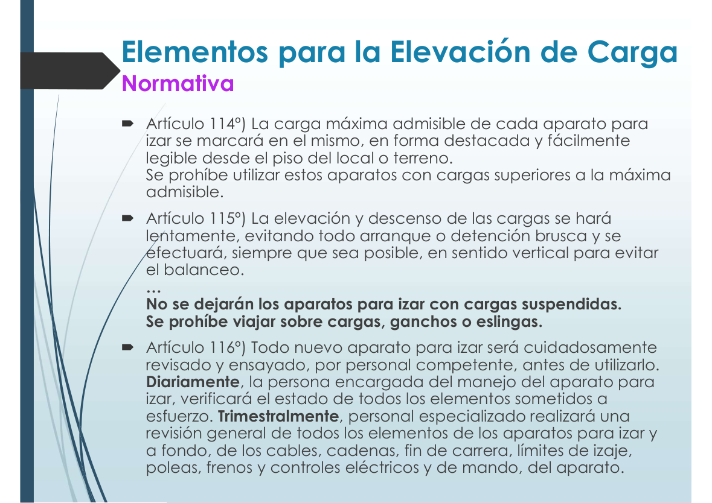
🔍 Zoom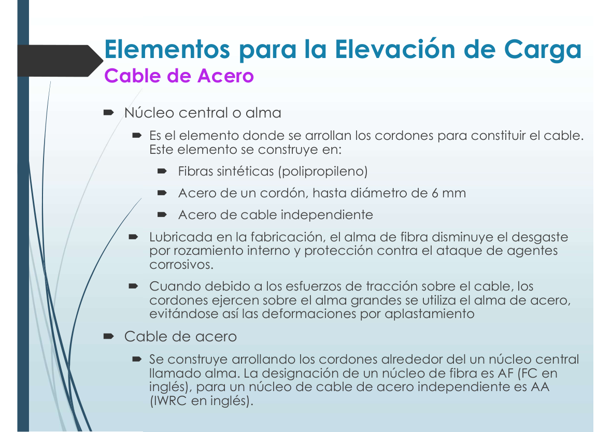
🔍 Zoom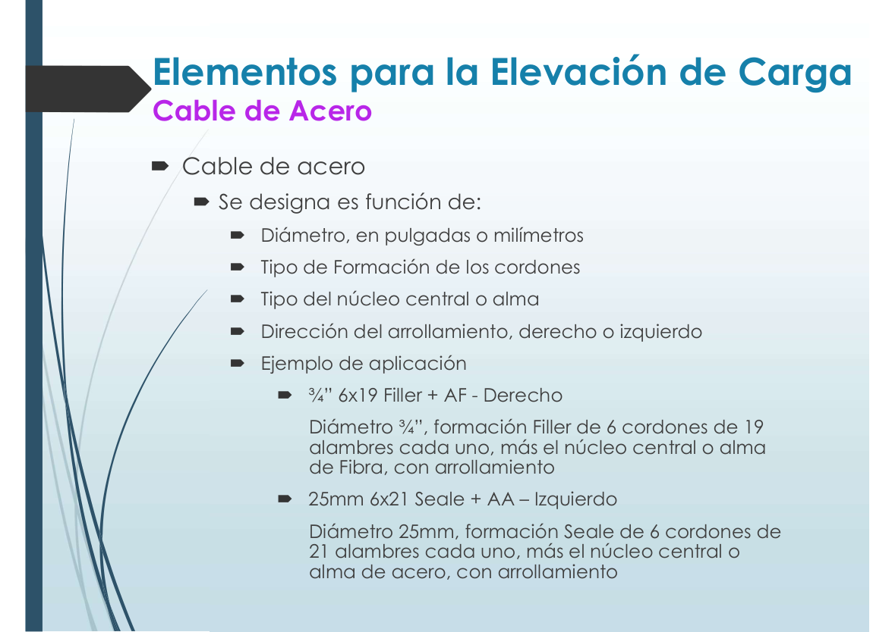
🔍 Zoom
P57
Pregunta 28: Cables de Acero: Componentes y Alma
▼
- Componentes Básicos:
- Alambres: Hilos de acero al carbono estirados en frío ($C: 0{,}4 - 1\%$, resistencia nominal de $180\text{ a }220\text{ kg/mm}^2$).
- Cordones (Torones): Conjunto de alambres enrollados helicoidalmente alrededor de un alambre central.
- Alma (Núcleo Central): Eje o corazón central alrededor del cual se arrollan helicoidalmente los cordones exteriores.
- Función Principal del Alma:
- Tipos de Alma tomados en Examen:
- Alma de Fibras Sintéticas (AF / FC - Fiber Core): Fabricada de polipropileno o sisal. Es lubricada en fábrica; actúa como esponja almacenando lubricante que reduce el desgaste por fricción interna y protege contra corrosión. Otorga mayor flexibilidad y absorción de choques, pero no resiste aplastamiento radial severo ni temperaturas superiores a $100^\circ\text{C}$.
- Alma de Acero de un solo Cordón: Utilizada en cables delgados de diámetro hasta $6\text{ mm}$.
- Alma de Cable de Acero Independiente (AA / IWRC - Independent Wire Rope Core): Es un cable de acero completo en sí mismo ubicado en el centro. Otorga mayor resistencia a la rotura (un $7-10\%$ superior a la de fibra), resiste temperaturas elevadas ($> 100^\circ\text{C}$, hornos, fundiciones) y evita la deformación por aplastamiento radial en tambores con arrollamiento de múltiples capas.
P58
Pregunta 29: Factor de Relleno del Cable y del Cordón
▼
- Definición de Factor de Relleno ($K_r$): Es la relación adimensional porcentual entre el área metálica transversal real sumada de todos los alambres de acero individuales y el área de la circunferencia mínima circunscrita al diámetro nominal del cable o cordón:
- Valores Típicos:
- Para Cordones individuales: Oscila entre $0{,}70$ y $0{,}82$ ($70\%$ a $82\%$ de acero).
- Para Cables de acero completos: Oscila entre $0{,}46$ y $0{,}75$ ($46\%$ a $75\%$).
- Comportamiento según el Alma y la Compactación:
- Los cables con alma de fibra (FC) tienen factores de relleno bajos ($\approx 0{,}50$).
- Los cables con alma de acero independiente (IWRC) presentan factores de relleno mayores ($\approx 0{,}58$).
- Cables Compactados: Mediante laminado o trefilado perimetral de los cordones, los alambres adoptan forma trapezoidal eliminando intersticios vacíos, elevando el factor de relleno por encima del $75-80\%$ e incrementando sustancialmente la resistencia mecánica y la superficie de contacto con las poleas.
P59
Pregunta 30: Diámetro Nominal vs. Diámetro Real
▼
- Diferencia Fundamental:
- Diámetro Nominal: Es el valor teórico y de catálogo asignado al cable para su comercialización y cálculo de ingeniería.
- Diámetro Real (Efectivo): Es la dimensión física medida directamente sobre el cable con un calibre o pie de rey. Representa el diámetro del círculo más pequeño que encierra estrictamente a todos los cordones exteriores.
- Método Correcto de Medición:
- Se debe utilizar un calibre o pie de rey con bocas de longitud suficiente para abarcar al menos dos cordones opuestos.
- Regla estricta: La medición debe efectuarse sobre las crestas o coronas de los cordones opuestos (círculo circunscrito). Si se colocan las bocas del calibre en las hendiduras o valles entre cordones, la medición es incorrecta y arroja un diámetro menor al real. Se deben tomar dos lecturas perpendiculares a $90^\circ$ y promediarlas.
- Tolerancias Normalizadas: Para cables de izaje de diámetro nominal $\ge 8\text{ mm}$, las normas internacionales toleran un desvío de $-0\% \text{ a } +5\%$.
P60
Pregunta 31: Tipos de Cordones: Seale, Warrington y Filler
▼
La disposición geométrica de los alambres dentro del cordón determina la resistencia a la abrasión y la flexibilidad:
| Estilo Constructivo | Esquema de Capas de Alambres | Resistencia a la Abrasión | Flexibilidad Mecánica | Aplicación Predilecta |
|---|---|---|---|---|
| Seale | Alambres exteriores gruesos de igual número sobre alambres interiores más finos (ej. 1-9-9). | Muy Alta (alambres exteriores gruesos soportan gran desgaste). | Menor (cordón más rígido). | Maniobras donde el cable roza contra poleas, tierra o tambores con desgaste abrasivo (puentes grúa en fundición, minería). |
| Warrington | Capa exterior con alambres alternados gruesos y delgados (ej. 1-6-6/6). | Media / Buena. | Alta. | Aparejos de elevación general y grúas móviles industriales. |
| Filler (Relleno) | Incorpora alambres ultra-finos en los intersticios entre las capas interior y exterior (ej. 1-6-6F-12). | Moderada. | Máxima (gran cantidad de hilos de menor diámetro). | Cables de alta velocidad para ascensores de personas y grúas torre con poleas de pequeño diámetro. |
Regla de Cátedra: A menor cantidad de alambres y mayor diámetro de estos $\implies$ mayor resistencia a la abrasión y menor flexibilidad. A mayor número de alambres de menor diámetro $\implies$ máxima flexibilidad a la fatiga por flexión, pero menor tolerancia al desgaste por fricción.
---
P61
Pregunta 32: Eslingas Sintéticas: Materiales y Código de Colores
▼
- Poliéster vs. Nylon:
- Eslingas de Poliéster: Poseen un alargamiento elástico bajo carga de entre $7\% \text{ y } 10\%$. Gran resistencia a la degradación por rayos UV y ácidos; son las eslingas textiles universales para maniobras de izaje.
- Eslingas de Nylon: Presentan un estiramiento elástico muy bajo, que no sobrepasa el $2\% \text{ a } 3\%$ de su longitud. Resistentes a los álcalis pero susceptibles al ataque de ácidos.
- Código de Colores Normalizado (Norma IRAM / EN 1492):
- Violeta: $1\text{ tonelada}$ ($1.000\text{ kg}$)
- Verde: $2\text{ toneladas}$ ($2.000\text{ kg}$)
- Amarillo: $3\text{ toneladas}$ ($3.000\text{ kg}$)
- Gris: $4\text{ toneladas}$ ($4.000\text{ kg}$)
- Rojo: $5\text{ toneladas}$ ($5.000\text{ kg}$)
- Marrón: $6\text{ toneladas}$ ($6.000\text{ kg}$)
- Azul: $8\text{ toneladas}$ ($8.000\text{ kg}$)
- Naranja: $10\text{ toneladas}$ o superior ($\ge 10.000\text{ kg}$)
P62
Pregunta 33: Factores de Ángulo en Eslingas Ramales
▼
- Efecto Físico del Ángulo de Inclinación:
- Capacidad de Carga Relativa según la Configuración (Factor de Modo):
| Configuración de Eslinga | Ángulo con la Vertical ($\beta$) | Ángulo entre Ramas | Coeficiente de Capacidad Relativa |
|---|---|---|---|
| Vertical Simple (1 rama) | $0^\circ$ | — | $1{,}00$ (Base nominal WLL) |
| Lazo Ahorcado (Choker) | $0^\circ$ | — | $0{,}80$ (Pierde 20% por estrangulamiento) |
| Vertical Doble (U paralela) | $0^\circ$ | $0^\circ$ | $2{,}00$ |
| Dos ramas a $30^\circ$ | $30^\circ$ | $60^\circ$ | $1{,}73$ ($86{,}6\%$ de la capacidad doble) |
| Dos ramas a $45^\circ$ | $45^\circ$ | $90^\circ$ | $1{,}41$ ($70{,}7\%$ de la capacidad doble) |
| Dos ramas a $60^\circ$ | $60^\circ$ | $120^\circ$ | $1{,}00$ (Cada rama soporta el peso total) |
> Límite Crítico de Seguridad de Cátedra: > Jamás debe realizarse una maniobra de izaje con ramas abiertas a más de $60^\circ$ con respecto a la vertical ($120^\circ$ de apertura entre ramas), ya que a partir de ese valor la tensión en las eslingas supera ampliamente el peso de la propia carga, pudiendo provocar la rotura catastrófica de los ojales o grilletes.
---
P63
Pregunta 34: Cadenas de Acero: Grados ANSI y Grado 100
▼
- Clasificación por Grados según Norma ANSI B30.9 / OSHA:
- Grado 3 (Acero Dulce sin tratar): Cadenas comerciales comunes; estrictamente PROHIBIDAS para la elevación de cargas.
- Grados 4 y 6 (Aceros de alta resistencia normalizados o templados): Utilizadas exclusivamente para tracción estática, riendas, tensores mecánicos y amarre de cargas sobre camiones.
- Grado 8 (Grado 80 - Acero aleado templado y revenido): Calidad básica reglamentaria apta para eslingas de izaje de cargas.
- Grado 10 (Grado 100 - Acero aleado especial templado y revenido de alta resiliencia): La calidad más avanzada para izaje industrial pesado.
- 3 Ventajas Principales del Grado 100 sobre el Grado 80 tomadas en Examen:
- Aumento del 25% en la Capacidad de Carga: Permite izar un $25\%$ más de carga utilizando el mismo diámetro de eslabón.
- Reducción del Peso de la Eslinga hasta en un 40%: Permite emplear cadenas de menor calibre para una misma maniobra, facilitando el manipuleo ergonómico por los operarios.
- Mayor Vida Útil y Resistencia al Desgaste: Su superior dureza superficial alarga la vida útil y reduce el alargamiento permanente por fatiga.
P64
Pregunta 35: Grilletes de Elevación: Tipos y Capacidad Angular
▼
- Tipos de Grilletes:
- Grillete Recto (Forma de U / D-Shackle): Diseñado casi exclusivamente para tiros uniaxiales en línea recta (tiro vertical a $0^\circ$).
- Grillete Tipo Lira (Forma de Corazón / Bow Shackle): Cuerpo abombado y redondeado; permite vincular múltiples ramas de eslingas simultáneamente sin aplastarlas.
- Fijación del Perno:
- Variación de la Capacidad de Carga según el Ángulo de Tiro:
| Ángulo de Aplicación del Tiro | Capacidad Admisible Residual |
|---|---|
| $0^\circ$ (Tiro en línea recta en el eje del grillete) | $100\%$ de la Carga de Trabajo (WLL) |
| $45^\circ$ (Tiro angular lateral) | $70\%$ de la Carga de Trabajo |
| $90^\circ$ (Tiro perpendicular al perno) | $50\%$ de la Carga de Trabajo |
> Prohibición: Jamás se debe cargar un grillete con tiros angulares que provoquen torsión del perno ni cargar contra las caras externas del cuerpo.
---
P65
Pregunta 36: Pastecas, Aparejos y Aparejo Tirfor
▼
- Pastecas (Simples, Dobles y Triples):
- Es un bloque o carcasa protectora de acero que contiene una o más poleas montadas sobre rodamientos para el paso de cables de acero.
- Efecto de desmultiplicación: Cada polea móvil actúa duplicando la ventaja mecánica. Si $n$ es la cantidad de poleas/ramales de sostén, la fuerza de tiro requerida en el cable es:
- Aparejos y Polipastos:
- Aparejo Tirfor (Aparato Elevador de Cable Pasante):
- Funciona mediante dos pares de mordazas de apriete autocentrantes que abrazan el cable alternativamente como dos manos humanas impulsadas por una palanca telescópica: cuando un par avanza tirando del cable, el otro par lo sujeta con firmeza.
- 5 Ventajas tomadas en Examen:
- Longitud de cable ilimitada: Al no haber tambor de arrollamiento, el recorrido puede ser de $10\text{ m}, 100\text{ m}$ o más.
- Mantiene el par y la capacidad nominal constante a lo largo de todo el tiro.
- Puede trabajar en cualquier posición (vertical, horizontal o en ángulo).
- Precisión milimétrica de posicionamiento.
- Incorpora perno fusible de seguridad contra sobrecargas en la palanca.
P66
Pregunta 37: Perchas Separadoras y Garras de Elevación
▼
- Perchas Separadoras (Balancines de Carga):
- Vigas metálicas rígidas que se interponen entre el gancho de la grúa y la carga, dotadas de dos o cuatro puntos de suspensión vertical inferior.
- Función Vital de Seguridad: Cuando la pieza a elevar es de gran longitud, el uso de eslingas directas formaría un ángulo de apertura excesivo ($> 60^\circ$) que sobrecargaría los ramales y aplicaría fuerzas de compresión horizontal sobre la carga que pueden colapsarla o deformarla. La percha permite que las eslingas inferiores trabajen a $90^\circ$ (tiro estrictamente vertical), eliminando las fuerzas de compresión lateral.
- Garras de Elevación para Chapas:
- Dispositivos mecánicos que se bloquean sobre el canto de las placas de acero mediante una leva excéntrica dentada autoblocante: cuanto más pesa la chapa al izarla, con mayor fuerza muerde la leva.
- Se dividen en garras para izaje vertical (traslado y volteo de chapas) y garras para izaje horizontal (en pares para paquetes de chapas). Temperatura operativa admisible: $-40^\circ\text{C a } +100^\circ\text{C}$.
P67
Pregunta 38: Factores de Seguridad Mínimos Legales (Dto. 351/79)
▼
El Decreto Nacional 351/79 (Reglamentario de la Ley Nacional 19.587 de Higiene y Seguridad en el Trabajo, Capítulo 15 "Aparatos para Izar") establece los siguientes factores de seguridad mínimos obligatorios referidos a la carga de rotura:
- Cables de Acero para Izaje de Cargas: Factor de seguridad mínimo de $6$ ($FS \ge 6$).
- Cuerdas de Fibra para Izaje de Cargas: Factor de seguridad mínimo de $10$ ($FS \ge 10$).
- Cadenas de Acero Forjado para Izaje de Cargas: Factor de seguridad mínimo de $5$ ($FS \ge 5$).
- Pastecas y Accesorios de Izaje: Factor de seguridad mínimo de diseño de $4$ ($FS \ge 4$).
- Elevación de Personas: Cuando un equipo iza personas, los coeficientes de seguridad se duplican (típicamente $FS \ge 10$).
📌 Tema 6: Trabajo en Altura y Elevación de Personas
4 PreguntasTrabajo en Altura y PEMP: Se considera trabajo en altura a toda tarea a más de $2\text{ metros}$ sobre el nivel del suelo (Decreto 911/96). Exige el sistema anticaídas ABC: Anclaje resistente a $22\text{ kN}$, Body (Arnés integral de cuerpo completo) y Conector (cabo de vida con amortiguador de impacto). Las Plataformas Elevadoras Móviles de Personal (PEMP tijera vs. articuladas) exigen sujeción obligatoria.
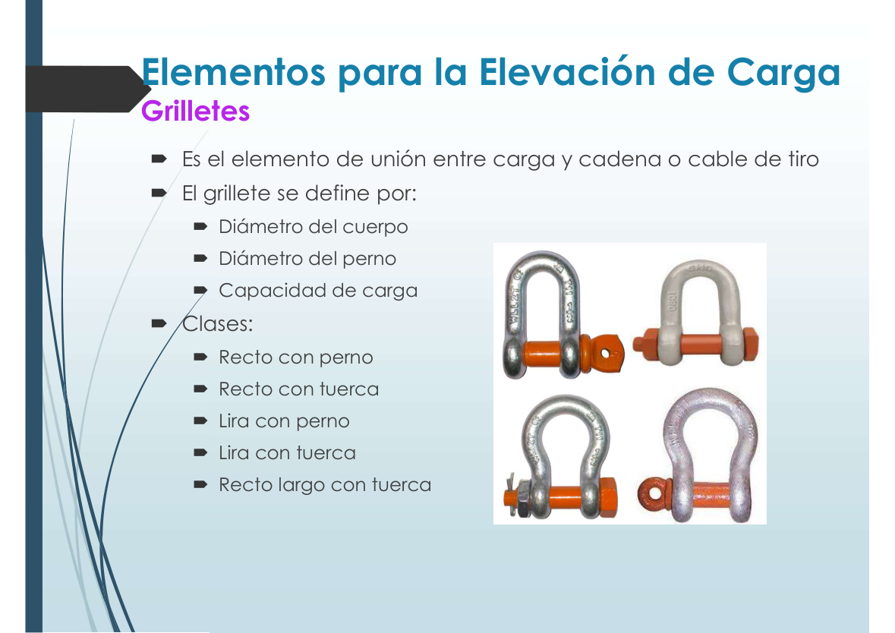
🔍 Zoom
P68
Pregunta 39: Definición Legal de Trabajo en Altura
▼
- Marco Regulatorio:
- Decreto Nacional 911/96 (Reglamento de Higiene y Seguridad para la Industria de la Construcción).
- Decreto Nacional 351/79 (Reglamentario de la Ley 19.587 para Industria General).
- Definición Legal Textual (Decreto 911/96, Artículo 54):
- Obligatoriedad de Cinturón/Arnés (Artículo 112):
- A partir de $2{,}50\text{ metros}$ de altura es legalmente obligatorio el uso de arnés de seguridad anclado a cabo de vida.
- La resistencia estructural del sistema debe estar calculada para soportar el impacto del peso del cuerpo humano en caída libre con un recorrido de hasta $5\text{ metros}$.
P69
Pregunta 40: Trípode de Protección Anticaídas ABC
▼
Todo sistema individual de detención de caídas se compone obligatoriamente del trípode técnico ABC:
- A - Anchorage (Puntos y Dispositivos de Anclaje):
- Es el punto estructural rígido donde se fija el sistema anticaídas.
- Resistencia Certificada: Debe soportar una carga estática mínima de $22{,}2\text{ kN}$ ($5.000\text{ lb}$ / $\approx 2.260\text{ kgf}$) por cada trabajador conectado (Normas OSHA / ANSI Z359).
- Pueden ser permanentes (líneas de vida horizontales o verticales fijas de cable de acero $\phi \ge 8\text{ mm}$, rieles rígidos) o temporarios (trípodes de rescate, vigas mordaza, anclajes de peso muerto).
- B - Body Harness (Arnés de Cuerpo Completo):
- Dispositivo de cintas de poliéster de alta tenacidad que envuelven el torso, la pelvis y los muslos.
- Función Vital: Prohibido el uso de cinturones de cintura simples para detención de caídas (provocan asfixia o daño espinal). El arnés integral distribuye uniformemente la energía del impacto sobre los muslos, pelvis, tórax y hombros, manteniendo al trabajador en posición vertical suspended luego de la caída.
- Argolla dorsal en "D": Es el único punto certificado para fijar elementos de detención de caída libre.
- C - Connection (Elementos de Conexión y Amortiguación):
- Dispositivos que vinculan la argolla del arnés con el punto de anclaje (cabos de amarre dobles en Y, líneas de vida retráctiles).
- Absorbedor de Energía de Impacto: Es obligatorio en cabos fijos; consiste en una cinta cosida con costuras de desgarro controlado. Su función es disipar la energía cinética de la caída deformándose plásticamente, para que la desaceleración máxima transmitida al cuerpo humano no supere nunca los $6\text{ kN}$ ($600\text{ kgf}$) (máximo legal admisible).
P70
Pregunta 41: Plataformas de Elevación Móviles de Personal
▼
- Plataformas Unipersonales: Ultralivianas, para 1 solo operario más herramientas; operan en interiores sobre pisos lisos hasta $15\text{ metros}$ de altura. Tracción manual o motorizada a batería.
- Plataformas de Tijera (Scissor Lifts): Brazos mecánicos entrecruzados accionados por cilindros hidráulicos. Elevación estrictamente vertical. Gran capacidad de carga para 3 a 5 operarios con materiales pesados. Motorización eléctrica (baterías para interiores) o diésel (4x4 para terrenos difíciles).
- Plataformas Articuladas (Brazo Articulado en Z): Compuestas por dos o tres secciones articuladas que permiten sortear cañerías, puentes y obstáculos elevados (up and over). Superan los $40\text{ metros}$ de altura de trabajo.
- Plataformas Telescópicas: Brazo extensible de tubos concéntricos que otorga máxima velocidad y enorme alcance horizontal en voladizo en áreas industriales abiertas. Superan los $40\text{ metros}$ de altura.
P71
Pregunta 42: Canastos Suspendidos de Grúas
▼
El uso de canastos o cestas para elevar personas colgadas de una grúa es una maniobra de alto riesgo regulada por exigencias estrictas de seguridad:
- Límites de Carga de la Grúa (Cuestión de Examen):
- El peso total combinado del canasto, los operarios, herramientas y accesorios NO debe superar el $50\%$ de la capacidad nominal de tabla de una grúa fija.
- En caso de operar con una grúa móvil, el peso total NO debe superar el $40\%$ de la capacidad nominal de tabla.
- Capacidad Mínima de la Grúa: La grúa a utilizar debe tener una capacidad de carga nominal de al menos $1.000\text{ kg}$ en la posición y radio de trabajo más desfavorable.
- Dispositivos de Enclavamiento y Estabilidad:
- Enclavamiento hidráulico que impide la operación de izaje si los estabilizadores laterales no están plenamente apoyados y fijados.
- Sensor e indicador de pendiente o inclinación máxima admisible del chasis.
- Seguridad del Personal en la Cesta:
- Los operarios dentro del canasto deben llevar arnés de cuerpo entero conectado permanentemente a un punto de anclaje certificado del canasto o a una línea de vida vertical independiente, equipada con dispositivo anticaídas.
📊 Matriz de Frecuencia y Fechas de Exámenes
Estadísticas GrimolizziA continuación se resume la recurrencia exacta de las preguntas de la Unidad 4 en los exámenes finales y parciales de Grimolizzi:
| Tema Específico de Unidad 4 | Exámenes donde se tomó | Frecuencia |
|---|---|---|
| Colchón de Aire: Índice de Piso 3 y DIN 18202 | Final 16/12/2025, Final 30/07/2025, Resumen Oficial de Preguntas | 4 veces |
| Colchón de Aire: Fórmula de Sustentación ($F = p \cdot S$) y Landing Pads | Final 02/03/2026, Final 25/02/2025, Resumen Oficial | 4 veces |
| Power vs. Power & Free: Trolleys, Perfiles y Acumulación | Final 22/04/2026, Final 09/02/2026, Final 30/07/2025, Resumen | 5 veces |
| Tiro en Sistema Power: Tiro Horizontal, Vertical y Total | Final 22/04/2026, Final 09/02/2026, Diapositivas Oficiales | 3 veces |
| Load Bar: Función, Ubicación y Criterios de Selección | Final 16/12/2025, Final 09/02/2026, Final 30/07/2025 | 3 veces |
| Cadenas Forjadas vs. Cadenas Unibilt en Aéreos | Final 22/04/2026, Final 02/03/2026 | 2 veces |
| EOM vs. Power & Free (Cuadro Comparativo Completo) | Final 30/07/2025, Final 09/02/2026, Resumen Oficial | 3 veces |
| Control Box de un EOM con 3 Ejes | Final 16/12/2025, Final 09/02/2026 | 2 veces |
| Ruedas Omnidireccionales Mecanum (Principio a 45° y Ventajas) | Final 02/03/2026, Final 25/02/2025 | 3 veces |
| Cálculo de Carga por Rueda ($Q_r = Q_t/3$ vs. $Q_t/2$) | 2do Parcial Grimo, Final 25/02/2025, Diapositivas Oficiales | 3 veces |
| Flat-Top Conveyors vs. Slat Conveyors (Pros y Contras) | Final 02/03/2026, Final 09/02/2026, Final 30/07/2025 | 4 veces |
| Reemplazo de Flat-Top por Cintas de Banda | Final 30/07/2025, Resumen Oficial de Preguntas | 2 veces |
| Rodillos de Copas para Skids en Industria Automotriz | Final 25/02/2025, Final 30/07/2025, Resumen Oficial | 3 veces |
| Rodillos a Cadena vs. Rodillos con Motor Integrado (MDR / ZPA) | Final 02/03/2026, Final 30/07/2025 | 2 veces |
| AGV: Navegación, Seguridad ISO 10218 y Mecanismos de Carga | Final 30/07/2025, Diapositivas Oficiales | 2 veces |
| Cables de Acero: Tipos y Función del Alma (AF vs. AA / IWRC) | Final 16/12/2025, Final 30/07/2025, Final 02/03/2026 | 4 veces |
| Factor de Relleno del Cable de Acero y del Cordón | Final 02/03/2026, Diapositivas Oficiales | 2 veces |
| Diámetro Nominal vs. Real de Cables y Medición con Calibre | Final 30/07/2025, Resumen Oficial | 2 veces |
| Eslingas Sintéticas: Poliéster vs. Nylon y Código de Colores | Final 02/03/2026, Final 30/07/2025 | 3 veces |
| Factores de Ángulo en Eslingas Ramales y Tensión Máxima | Final 09/02/2026, Final 30/07/2025 | 3 veces |
| Cadenas de Izaje: Grados ANSI B30.9 y Ventajas Grado 100 | Final 30/07/2025, Diapositivas Oficiales | 2 veces |
| Grilletes: Recto vs. Lira y Variación de Carga por Ángulo | Final 09/02/2026, Final 30/07/2025 | 2 veces |
| Pastecas Simples/Dobles/Triples y Principio del Tirfor | Final 30/07/2025, Resumen Oficial | 3 veces |
| Factores de Seguridad Mínimos según Decreto 351/79 | Final 09/02/2026, Final 30/07/2025 | 3 veces |
| Trabajo en Altura: Definición Decreto 911/96 (Cota $\ge 2\text{ m}$) | Final 16/12/2025, Final 30/07/2025 | 3 veces |
| Trípode Anticaídas ABC: Anclaje, Arnés y Conexión con Absorbedor | Final 16/12/2025, Diapositivas Oficiales | 2 veces |
| Canastos Suspendidos de Grúa: Regla 50%/40% y Seguridad | Final 16/12/2025, Diapositivas Oficiales | 2 veces |
🚰 Unidad 5: Manejo y Transporte de Fluidos
Caños vs Tubos, Schedule, ASME B31.3, Costuras, Bridas, Válvulas, Cavitación, Tanques API y Aire Comprimido
📌 Tema 1: Generalidades, Caños vs. Tubos y Geometría
4 PreguntasCaños vs. Tubos y Geometría de Conducción: Los Caños (Pipes) se identifican por Diámetro Nominal ($D_n$ / NPS) y Schedule, con tolerancias estándar para transporte de fluidos. Para $D_n \le 12''$, el $D_n$ no coincide con el diámetro exterior real ($OD$); para $D_n \ge 14''$, $D_n = OD$. El diámetro exterior permanece rigurosamente CONSTANTE al variar el Schedule para asegurar la compatibilidad universal de bridas y accesorios; el que disminuye hacia adentro es el diámetro interior ($ID$). Los Tubos se miden en $OD$ real exacto y calibre BWG para intercambio térmico o instrumentación. Tramos comerciales de 6m y 12m condicionados por transporte carretero.
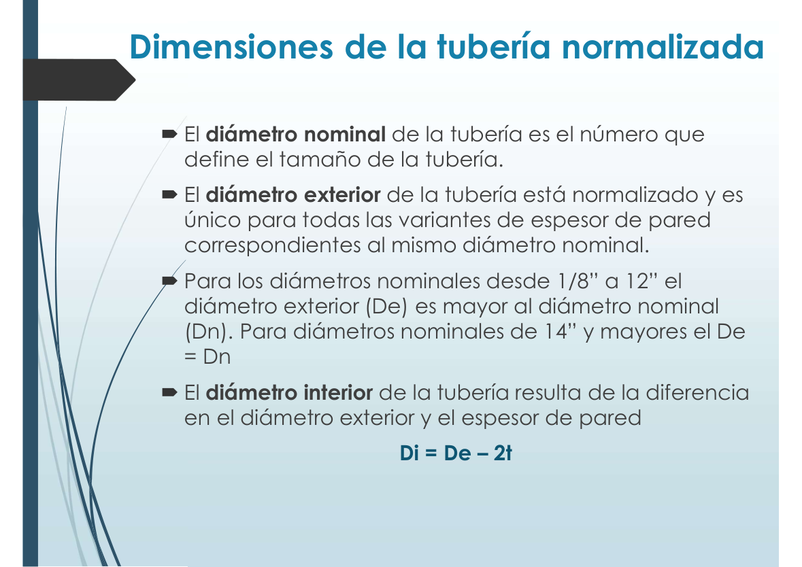
🔍 Zoom
P72
Pregunta 1: Definición y Diferencias entre Caños (Pipes) y Tubos (Tubes)
▼
En la ingeniería de manejo de materiales existe una distinción técnica y dimensional fundamental entre ambos elementos conductores:
- Caño (Pipe):
- Finalidad principal: Diseñado fundamentalmente para el transporte y conducción de fluidos a presión (líquidos o gases) en distancias medias y largas.
- Designación dimensional: Se identifica siempre por su Diámetro Nominal ($D_n$ o NPS - Nominal Pipe Size) y su espesor de pared mediante el Número Schedule (SCH) según normas ANSI/ASME B36.10 o B36.19.
- Tolerancias: Posee tolerancias dimensionales estándar en su diámetro y redondez, aptas para ser roscadas, soldadas a tope o unidas mediante bridas.
- Tubo (Tube):
- Finalidad principal: Diseñado para intercambio térmico (calderas, intercambiadores de calor, condensadores), sistemas de instrumentación/control hidráulico y neumático, o aplicaciones mecánicas de precisión.
- Designación dimensional: Se define rigurosamente por su Diámetro Exterior Real exacto ($OD$) y su espesor de pared medido directamente en milímetros o mediante calibre BWG (Birmingham Wire Gauge).
- Tolerancias: Posee tolerancias de fabricación extremadamente ajustadas, con superficies calibradas y alta concentricidad.
P73
Pregunta 2: Diámetro Nominal vs. Diámetro Exterior y Diámetro Constante
▼
- Relación entre Diámetro Nominal ($D_n$) y Diámetro Exterior ($D_e$ / OD):
- Para $D_n \le 12''$ ($300\text{ mm}$): El diámetro nominal es un valor de referencia comercial y NO coincide con el diámetro exterior real del caño. Por ejemplo, un caño de $D_n = 2''$ tiene un diámetro exterior real de $60{,}3\text{ mm}$ ($2{,}375''$).
- Para $D_n \ge 14''$ ($350\text{ mm}$): El diámetro nominal coincide exactamente con el diámetro exterior real del caño ($D_n = OD$). Por ejemplo, un caño de $D_n = 14''$ tiene un $OD = 14'' = 355{,}6\text{ mm}$.
- Diámetro que permanece CONSTANTE cuando varía el espesor de pared:
- En cualquier caño de conducción normalizado, el diámetro que permanece rigurosamente CONSTANTE es el Diámetro Exterior ($OD$).
- Justificación técnica: Al mantenerse inalterable el diámetro exterior para un determinado diámetro nominal, todos los accesorios del sistema de tuberías (bridas, codos, tes, válvulas, cuplas, roscas y soportes) tienen dimensiones exteriores universales y estandarizadas. Si el fluido opera a mayor presión, se selecciona un Schedule mayor: el espesor de pared crece hacia adentro, reduciendo el Diámetro Interior ($ID$), pero preservando la compatibilidad de acople exterior en toda la instalación.
P74
Pregunta 3: Caños de Conducción vs. Caños y Tubos Estructurales
▼
- Caños de Conducción (ASTM A-53 / A-106 / API 5L): Están fabricados y certificados con exigencias metalúrgicas y de estanqueidad para soportar presión interna de fluidos. Son sometidos obligatoriamente por norma a pruebas hidrostáticas de presión en fábrica y ensayos no destructivos (ultrasonido, corrientes inducidas o radiografía).
- Caños y Tubos Estructurales (ASTM A-500 / IRAM IAS U 500-2592): Diseñados exclusivamente para soportar solicitaciones mecánicas estáticas o dinámicas como columnas, cabreadas, vigas o barandas. No se les exige ensayo de presión hidrostática ni estanqueidad contra fugas; sus tolerancias de espesor son menos críticas y suelen tener cordones de soldadura sin eliminar el labio o rebaba interna.
P75
Pregunta 4: Longitud Comercial Estándar de Cañerías (6m y 12m)
▼
- Longitudes comerciales: Las cañerías industriales de acero se suministran habitualmente en dos largos comerciales normalizados: $6\text{ metros}$ (largo simple o simple random length) y $12\text{ metros}$ (doble largo o double random length).
- Causa principal: Está determinada por las limitaciones de transporte terrestre en camiones y semirremolques (cuyas cajas de carga reglamentarias tienen una longitud útil máxima entre $12{,}5\text{ m}$ y $14\text{ m}$ según la Ley Nacional de Tránsito y Vialidad), así como por la capacidad de manipulación con puentes grúa y autoelevadores en obradores y almacenes industriales.
📌 Tema 2: Número Schedule y Espesor de Pared
5 PreguntasNúmero Schedule y Espesor de Cañería: El Schedule ($SCH \approx 1000 \cdot P/S$) define la relación adimensional entre presión interna y tensión admisible. El espesor de cálculo bajo ASME B31.3 responde a $t = \frac{P \cdot D}{2(S \cdot E + P \cdot Y)} + A$, donde $E$ es la eficiencia de soldadura (1,00 sin costura, 0,85 ERW), $Y$ el coeficiente térmico y $A$ la suma de sobreespesores por corrosión, roscado y tolerancia de laminación (12,5%). Los grados de acero (ASTM A-106 Gr. A, B, C) representan límites de fluencia crecientes.
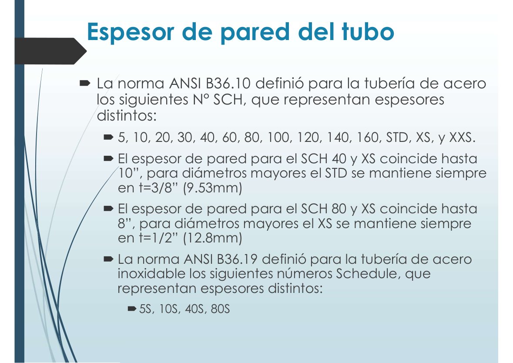
🔍 Zoom
P76
Pregunta 5: Definición, Parámetros y Cálculo del Número Schedule (SCH)
▼
- Definición: El número Schedule (SCH) es un valor numérico adimensional estandarizado por las normas ANSI/ASME y ASTM/API que clasifica y define el espesor de pared de los caños para un diámetro nominal dado.
- Parámetros que intervienen:
- $P$: Presión interna de diseño o de trabajo del fluido en la cañería $[ \text{psi} ]$ o $[ \text{bar} ]$.
- $S$: Tensión admisible del material a la temperatura de servicio $[ \text{psi} ]$ o $[ \text{bar} ]$ (obtenida dividiendo la tensión de fluencia o rotura por un coeficiente de seguridad).
- Fórmula de aproximación del Schedule:
- A mayor número Schedule, mayor es el espesor de pared de la cañería y, por ende, mayor es la presión manométrica que puede soportar con seguridad.
P77
Pregunta 6: Valores Estándar de Schedule para Acero al Carbono e Inoxidable
▼
- Para cañerías de acero al carbono (Norma ANSI/ASME B36.10M):
- Los números de Schedule normalizados son: SCH 10, SCH 20, SCH 30, SCH 40, SCH 60, SCH 80, SCH 100, SCH 120, SCH 140 y SCH 160.
- Designaciones tradicionales equivalentes:
- STD (Standard Weight): Coincide con SCH 40 hasta $10''$.
- XS (Extra Strong): Coincide con SCH 80 hasta $8''$.
- XXS (Double Extra Strong): Espesores reforzados para presiones muy severas.
- Para cañerías de acero inoxidable (Norma ANSI/ASME B36.19M):
- Se identifican con el número seguido de la letra "S" (por Stainless Steel): SCH 5S, SCH 10S, SCH 40S y SCH 80S. Dado que el acero inoxidable no requiere margen por corrosión severa, se utilizan espesores más reducidos que en acero al carbono.
P78
Pregunta 7: Fórmula de Cálculo de Espesor de Cañerías (ASME B31.3 / B31.1)
▼
El espesor mínimo requerido de diseño ($t$) para una cañería sometida a presión interna se calcula según el Código ASME B31.3 (Process Piping) mediante la siguiente ecuación: $$t = \frac{P \cdot D}{2 \cdot (S \cdot E + P \cdot Y)} + A$$ Donde:
- $t$: Espesor mínimo requerido de pared de la cañería $[ \text{mm} ]$ o $[ \text{in} ]$.
- $P$: Presión interna de diseño del fluido $[ \text{MPa} ]$ o $[ \text{psi} ]$.
- $D$: Diámetro exterior real de la cañería $[ \text{mm} ]$ o $[ \text{in} ]$.
- $S$: Tensión admisible del material a la temperatura de diseño $[ \text{MPa} ]$ o $[ \text{psi} ]$.
- $E$: Factor de eficiencia de junta longitudinal o soldadura $[ \text{adimensional} ]$.
- $Y$: Coeficiente adimensional que depende de la naturaleza del material y del rango de temperatura de diseño (para aceros ferríticos a $T < 482^\circ\text{C}$, $Y = 0{,}4$).
- $A$: Sobreespesor mecánico adicional por corrosión, erosión, roscado o maquinado $[ \text{mm} ]$ o $[ \text{in} ]$.
P79
Pregunta 8: Factor E (Eficiencia de Junta) y Factor A (Sobreespesores)
▼
- Factor de Eficiencia de Junta ($E$):
- Representa la confiabilidad mecánica y estructural de la costura soldada longitudinal respecto al metal base no soldado.
- Valores característicos:
- $E = 1{,}00$: Para cañerías Sin Costura (Seamless) y para cañerías soldadas con $100\%$ de radiografiado no destructivo.
- $E = 0{,}85$: Para cañerías soldadas por resistencia eléctrica (ERW - Electric Resistance Welded) de alta frecuencia.
- $E = 0{,}60\text{ a }0{,}80$: Para cañerías soldadas con costura por fusión simple (espira o longitudinal) sin radiografiado completo.
- Término Adicional ($A$):
- Es un sobreespesor que se adiciona a la fórmula para compensar degradaciones durante la vida útil y tolerancias:
- Corrosión y Erosión ($c$): Margen de sacrificio por ataque químico o abrasión (típicamente entre $1{,}5\text{ mm}$ y $3\text{ mm}$).
- Mecanizado ($h$): Profundidad de la rosca en caños roscados o profundidad del ranurado para acoples mecánicos (tipo Victaulic).
- Tolerancia de fabricación del fabricante: Por norma ASTM (ej. A-53 / A-106), las fábricas de tubos tienen una tolerancia negativa admisible de laminación del $12{,}5\%$ sobre el espesor nominal.
P80
Pregunta 9: Grados del Material (ASTM A-106 Gr. A, B, C y A-53)
▼
- Significado de "Grado" (ej. Grado A, Grado B, Grado C): Representa el límite de fluencia mínimo garantizado ($S_y$) y la resistencia a la rotura por tracción ($S_u$) del acero con que está construido el caño.
- Causa metalúrgica: Se debe principalmente al porcentaje de carbono y manganeso presente en la aleación, así como al tratamiento térmico (recocido, normalizado o templado).
- Ejemplo en norma ASTM A-106:
- Grado A: Menor tenor de carbono ($0{,}25\%$), $S_y = 30.000\text{ psi}$ ($205\text{ MPa}$); más dúctil, ideal para curvado en frío severo.
- Grado B: El más utilizado en la industria petroquímica ($0{,}30\%\text{ C}$), $S_y = 35.000\text{ psi}$ ($240\text{ MPa}$); excelente compromiso entre resistencia mecánica y soldabilidad.
- Grado C: Mayor tenor de carbono ($0{,}35\%\text{ C}$), $S_y = 40.000\text{ psi}$ ($275\text{ MPa}$); mayor resistencia pero soldabilidad más compleja (requiere precalentamiento).
📌 Tema 3: Cañerías con Costura vs. Sin Costura
2 PreguntasCañerías con Costura vs. Sin Costura: Las Sin Costura se fabrican por proceso Mannesmann de laminación oblicua con mandril perforador en caliente; soportan presiones elevadas y ciclos térmicos severos ($E = 1{,}00$). Las Con Costura se fabrican por cilindrado de flejes y soldadura longitudinal ERW de alta frecuencia o SAW en arco sumergido; son más económicas y cubren grandes diámetros para ductos troncales.
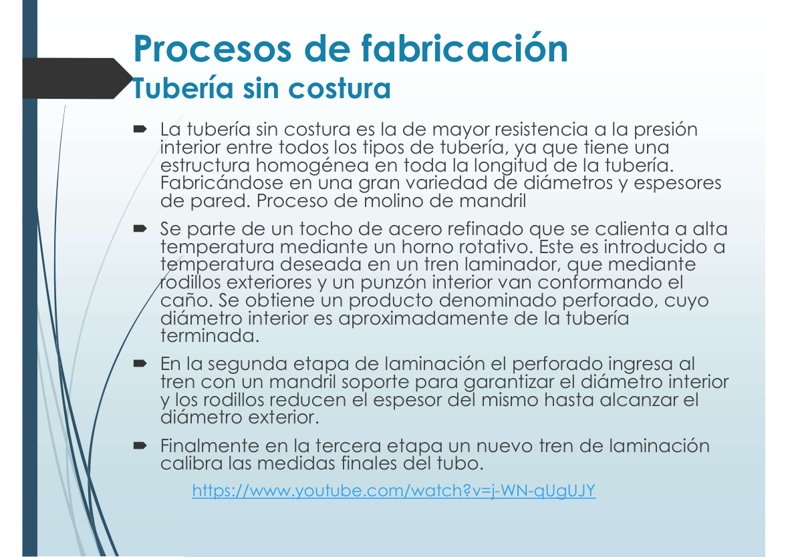
🔍 Zoom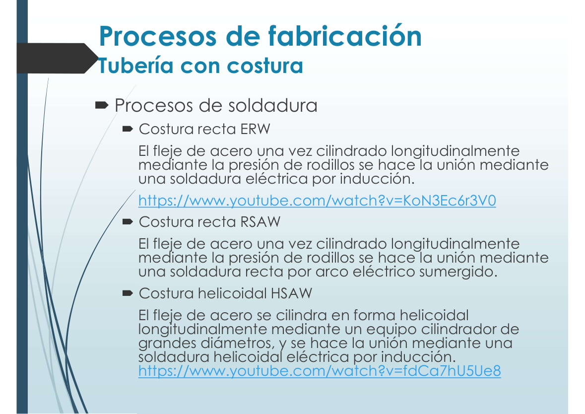
🔍 Zoom
P81
Pregunta 10: Procesos de Fabricación: Sin Costura vs. Con Costura
▼
- Cañerías Sin Costura (Seamless):
- Proceso Mannesmann (Laminación rotativa en caliente): Un tocho macizo de acero cilíndrico se calienta a unos $1200^\circ\text{C}$ y se hace girar a alta velocidad entre dos rodillos cónicos biconvexos oblicuos. Estos rodillos generan tensiones de tracción en el núcleo que inducen una cavidad central, la cual es atravesada simultáneamente por un mandril perforador puntiagudo, transformando el tocho macizo en un tubo hueco continuo sin ninguna costura ni zona afectada térmicamente por soldadura.
- Extrusión en caliente: Para aceros especiales o inoxidables, empujando el tocho caliente a través de una matriz y sobre un mandril mediante prensa hidráulica.
- Cañerías Con Costura (Welded):
- Se fabrican a partir de flejes o chapas de acero laminadas (bobinas o chapas gruesas) que se conforman mecánicamente en frío o caliente en forma de cilindro y se unen mediante soldadura eléctrica.
- Tres métodos principales de conformación y soldadura:
- Soldadura por Resistencia Eléctrica Longitudinal (ERW - Electric Resistance Welding): El fleje continuo se conforma progresivamente en cilindro mediante rodillos conformadores; los bordes enfrentados se calientan por resistencia al paso de corriente de alta frecuencia (HF) y se forjan mecánicamente a presión sin material de aporte.
- Soldadura por Arco Sumergido Longitudinal (L-SAW): Chapas gruesas conformadas mediante prensa en U y luego en O (proceso UOE), unidas longitudinalmente por arco sumergido automático con material de aporte por el interior y exterior.
- Soldadura por Arco Sumergido Helicoidal o en Espiral (H-SAW): El fleje se bobina helicoidalmente con un ángulo determinado formando el tubo, y la costura espiral se suelda por arco sumergido continuo. Permite fabricar cañerías de gran diámetro ($> 24''$ hasta $100''$) a partir de flejes de ancho moderado.
P82
Pregunta 11: Comparativa Técnica y Económica: Con Costura vs. Sin Costura
▼
| Parámetro de Comparación | Cañería Sin Costura (Seamless) | Cañería Con Costura (Welded - ERW/SAW) |
|---|---|---|
| Factor de Eficiencia ($E$) | $E = 1{,}00$ (resistencia isotrópica total). | $E = 0{,}85$ (ERW) a $0{,}80$ o menor. |
| Capacidad de Presión | Máxima resistencia a altas presiones y ciclados térmicos. | Limitada por la presencia de la junta soldada (ZAC). |
| Rango de Diámetros | Limitada comercialmente hasta $24''$ (excepcionalmente $26''$). | Amplio rango, desde $1/2''$ hasta más de $100''$ (ductos troncales). |
| Uniformidad de Espesor | Menor uniformidad geométrica (tolerancia $\pm 12{,}5\%$). | Excelente uniformidad (heredada del fleje laminado). |
| Costo de Fabricación | Elevado costo energético y de mecanizado en caliente. | Mucho más económica ($20\%\text{ a }40\%$ menor costo). |
| Aplicaciones Típicas | Vapor de alta presión, refinerías, cabezas de pozo, calderas. | Redes de distribución de fluidos, gasoductos, acueductos, transporte de hidrocarburos a distancias medias. |
---
📌 Tema 4: Materiales Especiales, Corrosión y Cañerías Plásticas
4 PreguntasMateriales Especiales, Corrosión y Plásticos: Acero inoxidable austenítico (Serie 300: AISI 304 y 316 con molibdeno) para fluidos altamente corrosivos o industrias alimentarias/farmacéuticas. La corrosión metálica se combate con protección catódica (ánodos de sacrificio de Zn/Mg o corriente impresa continua). Cañerías de Polietileno de Alta Densidad (HDPE) con unión por termofusión y electrofusión: rugosidad casi nula, total resistencia química y relación SDR ($OD/t$).
P83
Pregunta 12: Cañerías de Acero Inoxidable: Justificación y Serie Austenítica 300
▼
- Circunstancias en que se justifica su uso (pese a su elevado costo inicial):
- Resistencia a la Corrosión Química: Fluidos fuertemente agresivos (ácidos, salmueras, bases, gases corrosivos) donde el acero al carbono se perforaría en corto tiempo.
- Requisitos de Higiene, Asepsia y Pureza: Industrias farmacéutica, alimenticia, biotecnológica y de bebidas, donde no se permite ningún desprendimiento de óxidos o contaminación del fluido.
- Temperaturas Extremas: Servicios criogénicos (hasta $-196^\circ\text{C}$, como gas natural licuado LNG) o aplicaciones de alta temperatura ($> 500^\circ\text{C}$) donde el acero al carbono sufre fragilización.
- Acero Inoxidable Austenítico (Serie AISI 300):
- Estructura cristalográfica: Red cúbica centrada en las caras (FCC), estabilizada mediante la incorporación de Níquel ($\approx 8\text{ a }12\%$) y Cromo ($\ge 18\%$).
- Propiedades clave:
- Naturaleza no magnética en estado recocido.
- Excepcional tenacidad incluso a temperaturas criogénicas (no presenta transición frágil-dúctil).
- Excelente soldabilidad y conformabilidad en frío.
- Tipos principales:
- AISI 304 (18/8): Uso general anticorrosivo e higiénico.
- AISI 316: Incorpora de $2\%\text{ a }3\%$ de Molibdeno (Mo), lo que le otorga una superior resistencia a la corrosión por picado (pitting) provocada por cloruros, sal marina y medios ácidos.
P84
Pregunta 13: Corrosión Electroquímica, Protección Catódica y Recubrimientos
▼
- Mecanismo de Corrosión Metálica: Es un fenómeno de naturaleza electroquímica que requiere cuatro elementos simultáneos: un ánodo (zona donde el metal se oxida y pierde electrones), un cátodo (zona donde se produce la reducción), un electrolito conductor de iones (humedad del suelo o agua) y un camino metálico de retorno eléctrico.
- Protección Catódica: Consiste en convertir artificialmente a toda la cañería a proteger en el cátodo de una celda galvánica:
- Ánodos de sacrificio (Galvánica): Se conectan a la cañería bloques metálicos con potencial electroquímico más electronegativo que el hierro (Magnesio, Zinc o Aluminio). Los ánodos se disuelven sacrificialmente protegiendo la cañería de acero.
- Corriente Impresa: Se conecta el polo negativo de un rectificador de corriente continua a la cañería y el polo positivo a un lecho de ánodos inertes dispersos en el suelo (grafito, titanio con óxidos mixtos), forzando el flujo de electrones hacia el caño.
- Recubrimientos Protectores:
- Externos: Polietileno tricapa (3LPE), epoxi unido por fusión (FBE) o cintas bituminosas.
- Internos: Epoxi líquido para reducir rugosidad o mortero de cemento para agua potable.
P85
Pregunta 14: Cañerías de Polietileno de Alta Densidad (HDPE / PEAD) y SDR
▼
- Características y Ventajas de las Cañerías HDPE (Norma ISO 4427):
- Inercia química total: Inmunes a la corrosión galvánica y bacteriana; no requieren protección catódica ni pinturas.
- Baja rugosidad superficial interna: Coeficiente de fricción mínimo ($\epsilon \approx 0{,}007\text{ mm}$ frente a $0{,}05\text{ mm}$ del acero nuevo), lo que reduce drásticamente las pérdidas de carga y evita incrustaciones minerales.
- Flexibilidad mecánica: Permite seguir curvas de terreno sin necesidad de accesorios y absorbe deformaciones por asentamientos o sismos.
- Resistencia al impacto y al golpe de ariete: Su bajo módulo elástico amortigua las ondas de sobrepresión hidráulica.
- Relación de Dimensiones Estándar (SDR - Standard Dimension Ratio):
- Es un número adimensional definido como el cociente entre el diámetro exterior nominal ($OD$) y el espesor de pared ($t$):
- Regla técnica: A menor número SDR, mayor es el espesor de pared respecto al diámetro y, por ende, mayor es la presión nominal de trabajo ($PN$) que puede soportar la tubería plástica (ej. SDR 9 soporta mayor presión que SDR 17 o SDR 26).
- Métodos de Unión de HDPE:
- Termofusión a tope (Butt Fusion): Se refrentan los extremos de ambos caños, se calientan con una placa calefactora a $210^\circ\text{C} \pm 10^\circ\text{C}$ hasta formar un labio perimetral de fundido, se retira la placa y se unen bajo presión controlada formando una unión monolítica 100% estanca cuya resistencia es igual o superior a la del propio tubo.
- Electrofusión: Se utiliza un manguito o cupla de polietileno con una resistencia eléctrica helicoidal interna embutida; se inyecta corriente desde una unidad de control automática que funde los plásticos ensamblados. Ideal para reparaciones y espacios reducidos en zanja.
P86
Pregunta 15: Cañerías de PVC y PRFV (Fibra de Vidrio)
▼
- PVC (Policloruro de Vinilo):
- Tubería rígida, económica y liviana. Unión por pegamento solvente químico o espiga-enchufe con aro de goma elastomérico (junta Anger).
- Limitación principal: Rango térmico reducido; no debe operar a temperaturas superiores a $60^\circ\text{C}$ debido a la pérdida drástica de resistencia mecánica y reblandecimiento.
- PRFV (Poliéster Reforzado con Fibra de Vidrio):
- Material compuesto formado por una resina termoestable (poliéster o viniléster) que aporta resistencia química y una estructura de refuerzo de fibra de vidrio que aporta altísima resistencia a tracción mecánica.
- Fabricadas comúnmente por el proceso de bobinado continuo de filamentos (Filament Winding).
- Muy empleadas en agua de mar, plantas de desalinización, efluentes industriales y centrales térmicas por su resistencia a la corrosión y ligereza.
📌 Tema 5: Accesorios, Terminaciones y Bridas (Flanges)
3 PreguntasAccesorios y Bridas Industriales (Flanges): Bridas ASME B16.5: tipos Welding Neck (cuello para soldar a tope, máxima integridad), Slip-on (deslizante), Roscada y Ciega. Tipos de caras: RF (cara con resalte) y RTJ (cara para anillo metálico en alta presión). En aspiración de bombas centrífugas es obligatorio instalar reducciones excéntricas con el lomo plano superior (Flat on Top) para evitar la formación de bolsas de aire que inducen cavitación.
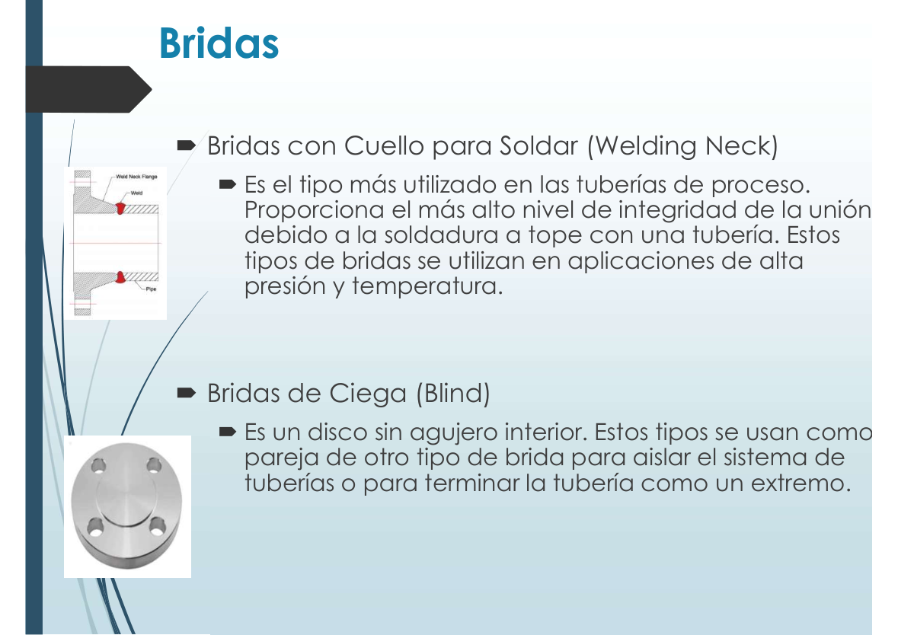
🔍 Zoom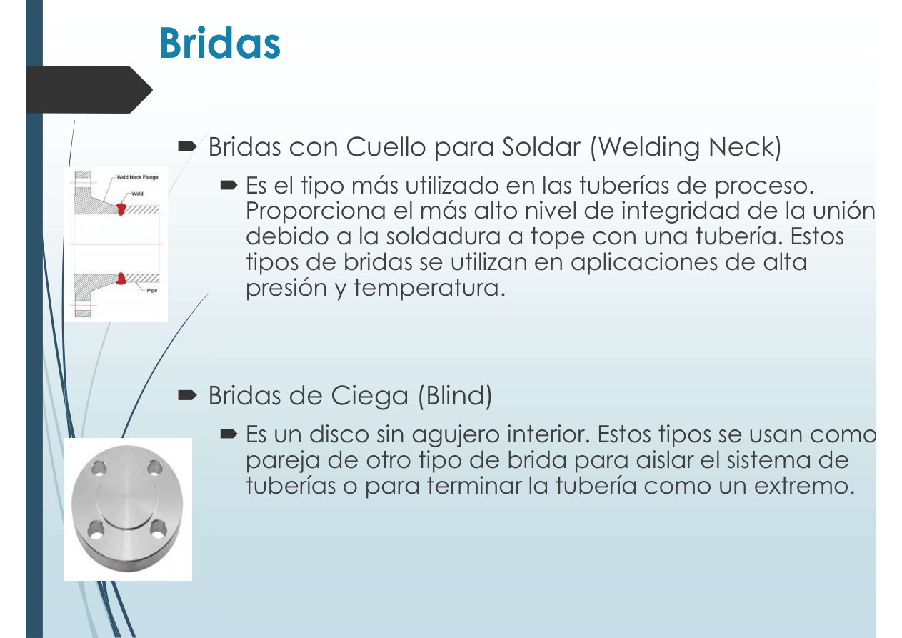
🔍 Zoom
P87
Pregunta 16: Terminaciones de Cañerías: Biseladas, Roscadas y Enchufe
▼
Los extremos de los caños se mecanizan de fábrica según el método de unión previsto en la instalación:
- Extremos Biselados (BE - Beveled Ends): Se mecaniza un bisel a $37{,}5^\circ \pm 2{,}5^\circ$ con una cara de raíz de $1{,}6\text{ mm}$ (según norma ASME B16.25). Se utiliza para uniones mediante soldadura a tope (Butt Weld - BW); es la terminación más resistente y universal para presiones medias y altas en fluidos peligrosos.
- Extremos Roscados (TE - Threaded Ends): Mecanizados con rosca cónica para cañerías según norma ANSI/ASME B1.20.1 (NPT - National Pipe Taper). La conicidad de $1:16$ ($0{,}75''/\text{pie}$) asegura que los filetes se acuñen entre sí al apretar; se utiliza en diámetros chicos ($D_n \le 2''$) y bajas presiones.
- Extremos Planos (PE - Plain Ends): Corte recto perpendicular a $90^\circ$ sin biselar; se utiliza para soldadura por enchufe (Socket Weld - SW) en diámetros pequeños o para acoples mecánicos con bridas deslizantes o manguitos.
P88
Pregunta 17: Bridas: Definición, Componentes, Tipos y Caras (RF, FF, RTJ)
▼
- Definición y Componentes:
- Una brida es un accesorio desmontable que permite la conexión y desconexión rápida de tramos de tuberías, válvulas, bombas y equipos mecánicos.
- Conjunto embridado: Está compuesto por tres elementos esenciales: 1) El par de bridas, 2) Los elementos de fijación roscada (espárragos con tuercas hexagonales de alta resistencia ASTM A-193/A-194), y 3) La junta de estanqueidad o empaque (gasket) que sella plásticamente las micro-rugosidades de las caras metálicas.
- Tipos de Bridas según su Unión a la Cañería (Norma ASME B16.5):
- Welding Neck (Cuello para soldar a tope): Posee un cuello largo cónico cuyo extremo está biselado para soldar a tope contra el caño. Es el diseño de máxima integridad estructural, distribuye las tensiones y resiste flexión, vibraciones y ciclos térmicos severos.
- Slip-On (Deslizante): El caño se introduce dentro de la brida y se suelda con dos cordones de filete (uno exterior y otro interior). Más económica y fácil de alinear, pero con menor resistencia a la fatiga.
- Roscada (Threaded): Se rosca directamente al caño sin soldadura; utilizada donde está prohibido hacer fuego o soldar (ambientes con riesgo de explosión).
- Ciega (Blind): Disco macizo sin orificio central que se utiliza para obturar o rematar el extremo de una cañería o para pruebas hidráulicas de presión.
- Lap Joint (Suelta con pestaña stub-end): Gira libremente sobre el caño facilitando el alineamiento de los orificios de bulones; muy usada en cañerías de acero inoxidable donde la brida suelta puede ser de acero al carbono abaratando el costo.
- Tipos de Caras de Contacto de Bridas:
- RF (Raised Face - Cara con Resalte): Presenta una meseta elevada de $1{,}6\text{ mm}$ o $6{,}4\text{ mm}$ sobre la que apoya la junta concéntrica; concentra la fuerza de apriete de los bulones en una menor superficie aumentando la presión de sellado.
- FF (Flat Face - Cara Plana): Toda la superficie es coplanar y la junta cubre toda la cara de la brida (full face); se utiliza en equipos de fundición de hierro dúctil o plásticos para evitar fisuras por momento flector al apretar.
- RTJ (Ring Type Joint - Cara para Junta de Anillo Metálico): Posee una ranura trapezoidal maquinada donde se aloja un anillo metálico macizo (oval u octogonal). Se utiliza exclusivamente en servicios de altísima presión y temperatura (Clases 600# a 2500#) en hidrocarburos y vapor.
- Clases de Presión (ASME B16.5): 150#, 300#, 400#, 600#, 900#, 1500# y 2500#.
P89
Pregunta 18: Reducciones Concéntricas vs. Excéntricas en Bombas
▼
- Reducción Concéntrica: Ambos diámetros comparten la misma línea de eje central; se utiliza en líneas verticales o en líneas horizontales donde no existe riesgo de acumulación de gases ni líquidos estancados.
- Reducción Excéntrica: Mantiene una de sus generatrices en línea recta (fondo plano o lomo plano).
- Regla crítica en aspiración de bombas centrífugas: En la cañería horizontal de aspiración de una electrobomba se debe instalar obligatoriamente una reducción excéntrica con el lomo plano arriba (Flat on Top).
- Justificación hidráulica: Si se utilizara una reducción concéntrica o excéntrica con lomo hacia abajo, se formaría en la parte superior una bolsa de aire/vapor atrapado que viajaría hacia el impulsor provocando descebado de la bomba, turbulencia severa y fenómeno de cavitación.
📌 Tema 6: Válvulas Industriales
3 PreguntasVálvulas Industriales: Cumplen funciones de bloqueo On/Off (esclusa/compuerta, esférica, mariposa), regulación de caudal (globo, aguja), retención antirretorno (clapeta, pistón) y seguridad/alivio (PSV con apertura instantánea pop para vapor/gas y PRV proporcional para líquidos).
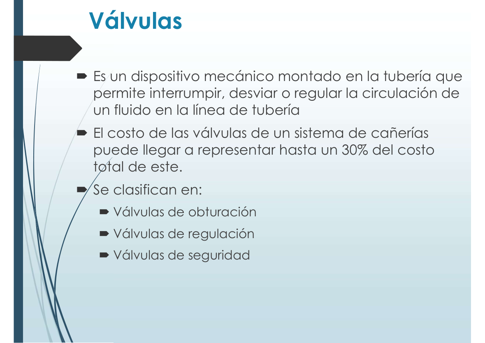
🔍 Zoom
P90
Pregunta 19: Funciones Básicas de las Válvulas en Redes de Conducción
▼
Las válvulas son dispositivos mecánicos intercalados en la cañería que cumplen cuatro funciones primarias:
- Bloqueo / Aislamiento (Servicio On/Off): Abrir o cortar totalmente el flujo de fluido para mantenimiento o seguridad (ej. válvulas de compuerta, esféricas, mariposa).
- Regulación / Modulación: Controlar y ajustar de manera continua el caudal, la velocidad o la presión del fluido estrangulando el orificio de paso (ej. válvulas de globo, aguja, diafragma, válvulas de control automático motorizadas).
- Prevención de Contraflujo (Retención / Anti-retorno): Permitir el flujo en un único sentido y cerrarse automáticamente si el fluido tiende a retroceder (ej. válvulas de clapeta batiente, pistón o disco basculante).
- Alivio y Seguridad de Presión: Evacuar fluido automáticamente al superar un valor umbral preestablecido para evitar la rotura o explosión de la tubería o equipo protegido (ej. válvulas de seguridad PSV y alivio PRV).
P91
Pregunta 20: Tipologías de Válvulas: Esclusa, Globo, Esférica, Mariposa y Retención
▼
- Válvula de Esclusa / Compuerta (Gate Valve):
- Funciona mediante una cuña o disco plano que desciende perpendicularmente a la línea de flujo.
- Aptitud: Es exclusivamente para servicio de cierre total o apertura completa (On/Off). Ofrece paso recto integral con una pérdida de carga mínima ($\Delta P \approx 0$). Nunca debe utilizarse para regular caudal, ya que el disco semiabierto vibra violently, sufre cavitación y erosión en el asiento ("chattering").
- Válvula de Globo (Globe Valve):
- El flujo cambia de dirección $90^\circ$ ascendiendo a través de un orificio circular donde asienta un tapón cónico accionado por el vástago.
- Aptitud: Excelente capacidad de regulación y estrangulamiento de caudal. Desventaja: produce una elevada pérdida de carga singular y resistencia al paso del fluido.
- Válvula Esférica (Ball Valve):
- Accionamiento rápido de cuarto de vuelta ($90^\circ$) mediante una esfera perforada que gira dentro de asientos elastoméricos (PTFE).
- Aptitud: Estanqueidad bidireccional perfecta, accionamiento muy rápido, excelente para automatización neumática.
- Válvula Mariposa (Butterfly Valve):
- Consta de un disco circular montado sobre un eje diametral que gira dentro del cuerpo de la válvula.
- Aptitud: Muy ligera, compacta, de bajo costo y requerimiento de espacio mínimo en grandes diámetros ($> 4''$).
- Válvula de Retención (Check Valve):
- Mecanismo automático accionado por la propia energía cinética y presión del fluido. La clapeta bascula con el flujo hacia adelante; si el fluido se detiene o intenta retornar, el propio peso del disco y la presión inversa sellan la válvula sobre su asiento protegiendo a las bombas de la rotación inversa y el golpe de ariete.
P92
Pregunta 21: Válvulas de Seguridad y Alivio de Presión (PSV / PRV)
▼
- Válvula de Alivio (PRV - Pressure Relief Valve): Diseñada para fluidos incompresibles (líquidos); abre proporcionalmente al incremento de sobrepresión por encima del valor de calibración (set pressure).
- Válvula de Seguridad (PSV - Pressure Safety Valve): Diseñada para fluidos compresibles (gases y vapor); posee un mecanismo de acción instantánea con disco de expansión ("pop action") que abre al $100\%$ de su carrera casi instantáneamente ante sobrepresión para evacuar rápidamente el volumen masivo de gas y prevenir la explosión catastrófica del recipiente.
📌 Tema 7: Bombas de Impulsión y Fenómenos Hidráulicos
3 PreguntasBombas Centrífugas y Fenómenos Hidráulicos: La bomba centrífuga convierte energía cinética de giro en presión estática en la voluta. La cavitación ocurre cuando la presión estática en el ojo del rodete cae por debajo de la presión de vapor del líquido ($P_v$); las microburbujas colapsan violentamente erosionando el metal. Condición de no cavitación: $NPSH_{disp} \ge NPSH_{req} + 0{,}5\text{ a }1\text{ m}$. El golpe de ariete es una sobrepresión destructiva por corte brusco de flujo, amortiguable mediante chimeneas de equilibrio o tanques hidroneumáticos.
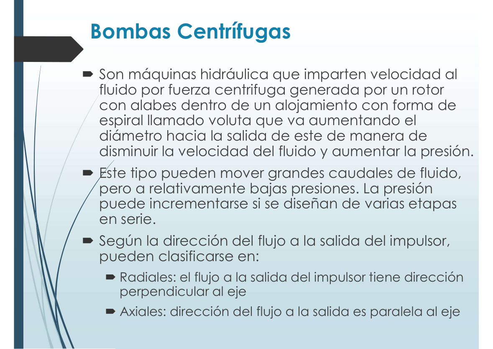
🔍 Zoom
P93
Pregunta 22: Bombas Centrífugas vs. Bombas de Desplazamiento Positivo
▼
- Electrobomba Centrífuga:
- Principio de funcionamiento: Es una turbomáquina hidráulica cinética. El líquido ingresa axialmente por el ojo del impulsor (rodete con álabes) que gira a alta velocidad; la fuerza centrífuga acelera el fluido hacia la periferia comunicándole alta velocidad cinética. Al ingresar a la carcasa espiralada (voluta o difusor), la sección creciente convierte gradualmente la energía cinética de velocidad en energía de presión estática en la brida de impulsión.
- Características de servicio: Caudal elevado con presiones moderadas. El caudal es altamente dependiente de la altura manométrica del circuito ($H$ vs $Q$ con pendiente descendente). No es autocebante por sí misma si contiene aire.
- Bomba de Desplazamiento Positivo (Pistón, Engranajes, Tornillo, Cavidad Progresiva):
- Principio: El fluido queda confinado en cámaras cerradas de volumen definido que se desplazan mecánicamente desde la aspiración hacia la descarga.
- Características de servicio: Caudal prácticamente constante e independiente de la contrapresión del sistema. Desarrollan altísimas presiones, son autocebantes y son indispensables para fluidos de alta viscosidad (petróleo pesado, pulpas, lodos, jarabes) o para dosificación precisa de químicos. Requieren obligatoriamente válvula de alivio en la descarga.
P94
Pregunta 23: Cavitación: Concepto, Daños, Causas y Condición de Diseño NPSH
▼
- Concepto Físico de Cavitación:
- Ocurre cuando en algún punto del circuito hidráulico —típicamente en la zona de menor presión estática, que es el ojo del impulsor de la bomba centrífuga— la presión estática absoluta del líquido desciende por debajo de la presión de vapor saturado ($P_v$) del fluido a la temperatura de bombeo.
- En ese instante, el líquido entra localmente en ebullición a temperatura ambiente formándose micro-burbujas de vapor ("cavidades"). Al avanzar hacia zonas de mayor presión en los álabes, las burbujas colapsan o implosionan violentamente en microsegundos generando micro-chorros de líquido a altísima velocidad ($> 1000\text{ m/s}$) y presiones de impacto localizadas de miles de atmósferas.
- Daños y Consecuencias en la Bomba:
- Erosión y picado por fatiga mecánica: El metal de los álabes se desprende dejando un aspecto esponjoso y craterizado característico.
- Ruidos y vibraciones intensas: Sonido metálico característico similar a "bombear piedras o gravilla".
- Caída abrupta del rendimiento: Pérdida de caudal, colapso de la curva de presión y rotura prematura de sellos mecánicos y rodamientos.
- Condición de Diseño y Prevención Antidavitaria (Criterio NPSH):
- Se debe verificar rigurosamente en el diseño de la instalación que la Altura Neta Positiva de Aspiración Disponible ($NPSH_{disp}$) sea superior al $NPSH_{req}$ requerido por el fabricante de la bomba, incorporando un margen de seguridad mínimo:
- Donde:
- Para evitar la cavitación: reducir las pérdidas por fricción en aspiración ($h_{fs}$) aumentando el diámetro de la cañería, colocar la bomba más cerca del tanque de succión, ubicar el tanque en carga positiva ($+Z_s$), y evitar el uso de codos o válvulas innecesarias antes de la brida de aspiración.
P95
Pregunta 24: Golpe de Ariete: Mecanismo Físico y Medidas de Protección
▼
- Mecanismo Físico: Es una sobrepresión u onda de choque transitoria de naturaleza acústica destructiva que se origina en una cañería cuando se interrumpe de manera brusca el caudal de un líquido incompresible (por ejemplo, por el cierre instantáneo de una válvula o la detención súbita del motor de la bomba ante un corte eléctrico). La energía cinética de la masa líquida en movimiento se transforma repentinamente en energía de deformación elástica del fluido y de las paredes del tubo, rebotando en forma de ondas de choque a la velocidad del sonido en el medio.
- Consecuencias: Rotura o colapso por estallido de cañerías, deformación de bridas, descabezamiento de soportes mecánicos y destrucción de cuerpos de válvulas e impulsores.
- Medidas de Protección en Ingeniería:
- Maniobra de válvulas con tiempos de cierre controlados y lentos.
- Instalación de chimeneas de equilibrio o torres piezométricas abiertas.
- Instalación de calderines hidroneumáticos (recipientes presurizados con vejiga de nitrógeno) que absorben el pulso elástico.
- Válvulas de alivio anticipado contra golpe de ariete o válvulas de retención con cierre amortiguado por contrapeso o pistón hidráulico.
📌 Tema 8: Tanques de Almacenamiento de Líquidos e Hidrocarburos (API 650)
1 PreguntasTanques de Almacenamiento API 650: Techo fijo para líquidos estables y de baja volatilidad (diésel, agua). Techo flotante (externo e interno) para hidrocarburos volátiles (naftas, solventes) que elimina la cámara de aire/vapor anulando las pérdidas por evaporación y el riesgo de explosión.
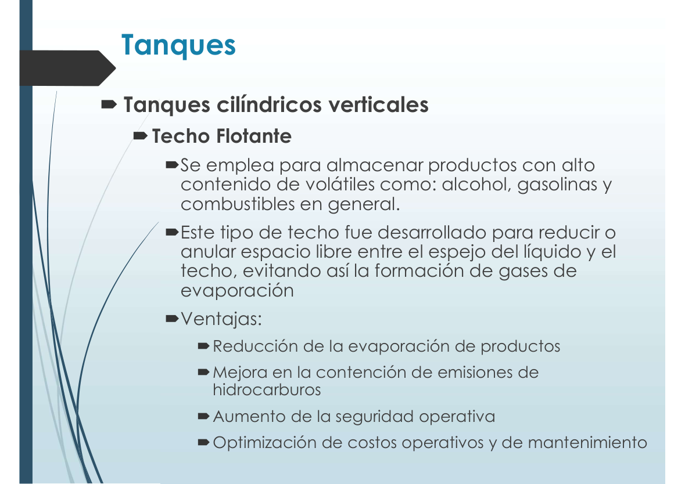
🔍 Zoom
P96
Pregunta 25: Tanques de Almacenamiento: Techo Fijo vs. Techo Flotante (Externo e Interno)
▼
El almacenamiento industrial de líquidos a granel (petróleo, naftas, solventes, agua, productos químicos) se rige bajo el estándar API 650 / 620:
- Tanques Cilíndricos Verticales de Techo Fijo:
- Poseen una estructura cilíndrica de chapas soldadas con un techo cónico o domo autosoportado o soportado por columnas interiores fijas.
- Campo de aplicación: Adecuados exclusivamente para líquidos no volátiles o de bajo contenido de fracciones ligeras, tales como agua, fuel oil, gasoil/diésel pesado, asfalto o químicos estables. Poseen venteos o válvulas de presión/vacío.
- Tanques de Techo Flotante (Externo e Interno):
- ¿Por qué se utilizan para hidrocarburos ligeros (naftas, crudo liviano, alcoholes)?:
- Principio del Techo Flotante: La cubierta superior flota directamente sobre la superficie del líquido apoyada en pontones o membranas de contacto total (Full Contact), subiendo y bajando con el nivel del fluido. Al no existir cámara de aire/vapor, se elimina virtualmente la evaporación y el riesgo de incendio o explosión.
- Techo Flotante Externo: El techo metálico flotante está a cielo abierto, equipado con un sistema perimetral de sellos mecánicos y elastoméricos contra la virola cilíndrica y un drenaje central articulado para el agua de lluvia.
- Techo Flotante Interno (IFR): Es la combinación más segura: un tanque con techo fijo geodésico de aluminio exterior que protege contra la lluvia y el viento, y una membrana flotante interna que elimina la emisión de vapores.
📌 Tema 9: Fluidos Gaseosos: Redes de Distribución de Aire Comprimido
4 PreguntasRedes de Aire Comprimido y Tratamiento: El tren de aire exige filtro de toma, enfriador posterior (aftercooler), separador ciclónico, tanque pulmón, secador frigorífico (+3°C) o de adsorción (-40°C), filtros coalescentes y unidad FRL individual en cada máquina. La cañería matriz debe tener pendiente del $1\%$ al $2\%$ con purgas en puntos bajos, red cerrada en anillo y tomas con cuello de cisne saliendo de la generatriz superior a 180° para no arrastrar condensados. Color azul normalizado IRAM 2507.
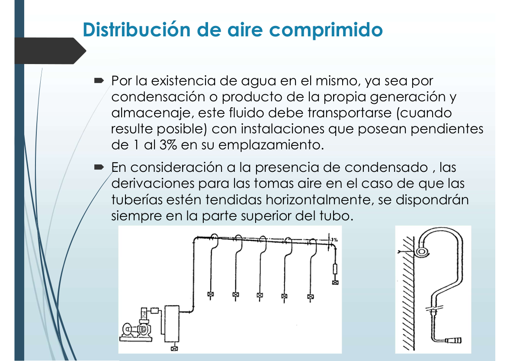
🔍 Zoom
P97
Pregunta 26: Tratamiento del Aire Comprimido desde la Toma: Secado y Filtrado
▼
El aire atmosférico ingresa al compresor cargado de polvo ambiental, vapor de agua y contaminantes. Para convertirse en un fluido motriz apto para la industria, debe recibir una secuencia de tratamientos:
- Filtro de Aspiración: Retiene partículas sólidas en suspensión antes del cabezal compresor para evitar el desgaste mecánico abrasivo de pistones o tornillos.
- Enfriador Posterior (Aftercooler): Intercambiador de calor que reduce la temperatura del aire a la salida del compresor (que puede salir a más de $120^\circ\text{C}$), condensando hasta el $70\%$ de la humedad en forma líquida.
- Separador Ciclónico de Condensados: Separa por fuerza centrífuga las gotas de agua y aceite arrastradas, evacuándolas mediante una purga automática temporizada o capacitiva.
- Tanque Pulmón / Acumulador: Estabiliza la presión de la red, absorbe las pulsaciones de caudal de los compresores alternativos y permite un enfriamiento estático adicional.
- Secador de Aire:
- Secador Frigorífico: Enfría el aire comprimido a $+3^\circ\text{C}$ (Punto de Rocío a presión) provocando la condensación del vapor residual de agua y recalentando el aire a la salida.
- Secador de Adsorción Química (Doble torre con alúmina activada o tamiz molecular): Para aire de grado farmacéutico o exterior con puntos de rocío de $-40^\circ\text{C}$ a $-70^\circ\text{C}$.
- Filtros Coalescentes de Línea: Eliminan microgotas de aceite en aerosol hasta $0{,}01\text{ mg/m}^3$ y partículas de polvo micrométricas.
P98
Pregunta 27: Unidad FRL (Filtro, Regulador y Lubricador)
▼
La unidad FRL es el módulo final de acondicionamiento de aire que se instala inmediatamente antes de cada máquina, herramienta o actuador neumático individual:
- Filtro (F): Retiene las microimpurezas sólidas (mediante cartuchos de bronce sinterizado o polímero de $5\text{ a }40\,\mu\text{m}$) y separa por centrifugado las condensaciones finales de agua residual, con drenaje manual o automático.
- Regulador de Presión con Manómetro (R): Mediante una membrana y resorte calibrado, reduce la presión fluctuante de la red troncal (ej. $8\text{ bar}$) a la presión operativa exacta y constante requerida por el equipo (ej. $6\text{ bar}$), independientemente de las variaciones de consumo en otros puntos de la planta.
- Lubricador (L): Inyecta mediante efecto Venturi una neblina microscópica dosificada de aceite mineral especial en la corriente de aire para lubricar los cilindros, correderas y motores neumáticos reduciendo el desgaste y evitando corrosión interna.
P99
Pregunta 28: Diseño de Cañería Matriz: Inclinación, Cuello de Cisne y Purgas
▼
- Inclinación Longitudinal Recomendada:
- La cañería principal troncal debe instalarse con una pendiente descendente obligatoria de entre el $1\%$ y el $2\%$ (de $1\text{ a }2\text{ cm}$ de caída por cada metro de longitud) en el sentido de circulación del aire.
- Finalidad: Garantizar que el agua líquida condensada por rozamiento y pérdida térmica sea arrastrada por gravedad hacia los puntos más bajos de la instalación, donde se conectan trampas o colectores de purga automática de condensados.
- Conexión de Derivaciones y Bajadas (Cuello de Cisne):
- Regla constructiva crítica de cátedra: Todas las tomas, ramales secundarios o bajadas de consumo deben acometerse siempre saliendo desde la PARTE SUPERIOR de la cañería matriz (a $180^\circ$ hacia arriba), conformando una curva ascendente en forma de "cuello de cisne" (Gooseneck) antes de descender hacia el puesto de trabajo.
- Justificación técnica: Dado que el condensado líquido y los sedimentos de óxido circulan pegados al fondo de la cañería por gravedad, acometer desde la parte superior garantiza que a la herramienta neumática ingrese aire totalmente limpio y seco, evitando que el agua arruine el herramental.
- Extremo ciego de purga: Al final de cada bajada vertical se debe prolongar el caño unos $15-20\text{ cm}$ por debajo del punto de toma de la máquina formando un bolsillo de purga con una válvula de drenaje manual o automática.
P100
Pregunta 29: Redes en Anillo vs. Ramificadas y Código de Colores Normalizado
▼
- Topología de Redes de Distribución:
- Red Abierta / Ramificada: La cañería principal se bifurca en ramales terminales ciegos. Presenta el grave inconveniente de que el punto más alejado sufre una fuerte caída de presión cuando hay consumos simultáneos y un corte en la cañería detiene toda la producción aguas abajo.
- Red Cerrada en Anillo (Ring Main): La cañería troncal forma un circuito continuo cerrado perimetral en la nave industrial.
- Ventajas operativas: Permite que el aire fluya desde dos direcciones simultáneas hacia el punto de mayor consumo, estabilizando la presión de servicio en toda la planta y minimizando caídas de presión ($\Delta P$). Asimismo, mediante válvulas de bloqueo intermedias se pueden aislar sectores para mantenimiento sin interrumpir el suministro en el resto de la nave.
- Código de Colores Normalizado para Cañerías (Norma IRAM 2507 / DIN 2403):
- Aire Comprimido: Azul.
- Agua Industrial / Potable: Verde.
- Vapor de Agua: Naranja.
- Gases Combustibles (Gas Natural / GLP): Amarillo.
- Líquidos Combustibles e Hidrocarburos: Castaño / Marrón.
- Fluidos Contra Incendio (Agua de red de rociadores e hidrantes): Rojo.
- Efluentes Industriales y Ácidos: Violeta.
- Conductos Eléctricos: Negro.
📊 Matriz de Frecuencia y Fechas de Exámenes
Estadísticas Grimolizzi| Tema Específico de la Unidad 5 | Exámenes donde se tomó | Frecuencia |
|---|---|---|
| Definición de Schedule y Cálculo de SCH ($SCH \approx 1000 \cdot P/S$) | Final 02/03/2026, Final 23/02/2026, 2do Parcial 3 Grimo, Resumen | 4 veces |
| Fórmula de Espesor de Cañería (ASME B31.3), Factor E y Término A | Final 23/02/2026, Final 02/03/2026, Final Mayo 2025, Resumen | 4 veces |
| Caños vs. Tubos (Diámetro Nominal, OD constante y BWG) | Final 23/02/2026, Final 25/02/2025, Final Mayo 2025, Resumen | 4 veces |
| Caños con Costura vs. Sin Costura (Mannesmann vs. ERW/SAW) | Final 02/03/2026, Final 25/02/2025, Final 30/07/2025, Resumen | 4 veces |
| Acero Inoxidable: Justificación y Serie Austenítica 300 (AISI 304/316) | Final 23/02/2026, Final 09/02/2026, Resumen Finales | 3 veces |
| Aire Comprimido: Inclinación de Cañería matriz ($1-2\%$) y Cuello de Cisne | Final 23/02/2026, Final 25/02/2025, 2do Parcial Grimo, Resumen | 4 veces |
| Unidad FRL (Filtro, Regulador y Lubricador) | Final 02/03/2026, Final Grimo 2025, Resumen Finales | 3 veces |
| Cavitación en Bombas Centrífugas y Criterio NPSH | Final 02/03/2026, Final 23/02/2026, Resumen Finales | 3 veces |
| Válvulas: 4 Funciones Básicas y Tipos (Esclusa vs. Globo vs. Esférica) | Final 23/02/2026, Parcial Grimo 2025, Resumen Finales | 3 veces |
| Bridas Industriales: Tipos (Welding Neck, Slip-On, Ciega) y Caras RF/FF/RTJ | Final 23/02/2026, Resumen Finales | 2 veces |
| Reducción Excéntrica en Aspiración de Bombas (Lomo Plano Superior) | Final 02/03/2026, Diapositivas U5 | 2 veces |
| Tanques de Techo Fijo vs. Techo Flotante (API 650) | Final 23/02/2026, Final Mayo 2025, Diapositivas U5 | 3 veces |
| Código de Colores de Cañerías IRAM 2507 (Azul aire, Verde agua, Naranja vapor) | Final 02/03/2026, Resumen Finales | 2 veces |
| Cañerías Plásticas HDPE (SDR) y Termofusión / Electrofusión | Final 02/03/2026, Diapositivas U5 | 2 veces |
| Golpe de Ariete y Protecciones Hidráulicas | Final 25/02/2025, Diapositivas U5 | 2 veces |
♻️ Unidad 6: Gestión de Residuos, Efluentes y Emisiones
Ley 24.051, Manifiesto, Incompatibilidades, Patogénicos 5 Pasos, PCBs, CNEA, CEAMSE, Barros y Mangas
📌 Tema 1: Conceptos Fundamentales y Marco Legal Ambiental
4 PreguntasMarco Legal y Conceptos Ambientales: En la economía circular, Residuo es todo elemento generado del cual su poseedor se desprende pero que posee valor residual aprovechable; Desperdicio es el material inservible sin valor cuyo único destino es el confinamiento o disposición final. Las Leyes de Presupuestos Mínimos (LPM) dictadas bajo el Art. 41 de la Constitución fijan el piso ambiental inderogable en todo el país. Los Residuos Peligrosos presentan características CRETIB (Corrosivo con $pH \le 2$ o $\ge 12{,}5$, Reactivo, Explosivo, Tóxico, Inflamable flash point $< 60°C$, Biológico).
P101
Pregunta 1: Diferencia Conceptual y Legal entre Residuo y Desperdicio
▼
Existe una distinción económica, operativa y jurídica fundamental:
- Residuo:
- Es cualquier material, sustancia, elemento u objeto resultante de un proceso de producción, consumo o servicio del cual su poseedor o generador se desprende o tiene la obligación legal de desprenderse, pero que posee un valor residual aprovechable, ya sea mediante su reutilización directa, reciclado mecánico o químico, regeneración o valorización energética. En la economía circular, el residuo ingresa a otro ciclo como recurso o materia prima secundaria.
- Desperdicio:
- Es aquel material o sustancia que resulta inservible, inutilizable y carece de todo valor económico, operativo o funcional. No es susceptible de ningún aprovechamiento técnico o comercial viable, por lo que su único destino admisible es el tratamiento para neutralizar su peligrosidad y su confinamiento o disposición final controlada (por ejemplo, en relleno sanitario de seguridad o incineración).
P102
Pregunta 2: Leyes de Presupuestos Mínimos (LPM) y Art. 41 de la Constitución Nacional
▼
- Fundamento Constitucional (Artículo 41 de la Constitución Nacional Argentina):
- Establece el derecho de todos los habitantes a gozar de un ambiente sano, equilibrado y apto para el desarrollo humano, imponiendo a las actividades productivas el deber de preservarlo.
- Determina expresamente el reparto federal de competencias: Corresponde a la Nación dictar las normas que contengan los presupuestos mínimos de protección ambiental, y a las Provincias y a la CABA las normas complementarias necesarias para aplicarlas, sin que estas últimas puedan alterar o perforar hacia abajo el estándar federal de protección.
- Definición de Ley de Presupuestos Mínimos (LPM):
- Es toda norma legal federal sancionada por el Congreso Nacional que fija un umbral básico e inderogable de protección ambiental en todo el territorio de la República Argentina, garantizando condiciones ecológicas homogéneas para todos los ciudadanos. Las provincias y municipios pueden dictar normas más exigentes y restrictivas, pero jamás inferiores o más permisivas.
P103
Pregunta 3: Marco Regulatorio de Residuos Peligrosos
▼
La gestión de residuos peligrosos (denominados "especiales" en PBA) se rige por un marco de jurisdicciones concurrentes:
- Nivel Nacional — Ley 24.051:
- Regula la generación, transporte, tratamiento y disposición final de residuos peligrosos cuando se trate de residuos generados o ubicados en lugares de jurisdicción federal, o que puedan afectar a más de una provincia (tránsito interjurisdiccional), o cuando las medidas higiénicas o de seguridad tengan repercusión económica internacional.
- Provincia de Buenos Aires — Ley 11.720:
- Regula los llamados Residuos Especiales. Organismo de aplicación: Ministerio de Ambiente de la Provincia de Buenos Aires (ex OPDS). Exige el Certificado de Aptitud Ambiental, empadronamiento en el Registro Provincial y Libro de Operaciones foliado.
- Ciudad Autónoma de Buenos Aires (CABA) — Ley 2.214:
- Regula la gestión integral de Residuos Peligrosos en el ámbito de la Ciudad. Organismo de control: APRA (Agencia de Protección Ambiental). Establece la obligación de inscripción en el Registro de Generadores, Transportistas y Operadores (REGTO).
P104
Pregunta 4: Características CRETIB de Peligrosidad
▼
Un residuo se tipifica legalmente como "Peligroso" si presenta una o más de las siguientes características intrínsecas identificadas bajo el acrónimo normativo CRETIB:
- Corrosividad (C): Sustancia líquida o acuosa que presenta un $pH \le 2{,}0$ (fuertemente ácida) o un $pH \ge 12{,}5$ (fuertemente alcalina), o que posee una velocidad de corrosión sobre el acero superior a $6{,}35\text{ mm/año}$.
- Reactividad (R): Sustancia inestable en condiciones normales que reacciona violentamente con el agua liberando gases tóxicos, inflamables o calor extremo, o que contiene sulfuros o cianuros que reaccionan a pH entre 2 y 12,5.
- Explosividad (E): Sustancia capaz de producir por reacción química una detonación o descomposición explosiva instantánea a temperatura y presión normales, con una constante de explosividad igual o mayor a la del dinitrobenceno.
- Toxicidad (T): Capacidad de provocar daños graves, enfermedades agudas o crónicas, mutagénesis, teratogénesis, cáncer o la muerte en seres humanos u organismos vivos por ingestión, inhalación o absorción cutánea (ensayos de lixiviación TCLP que exceden las concentraciones máximas admisibles de la Ley 24.051).
- Inflamabilidad (I): Sustancia líquida con punto de inflamación (flash point) en copa cerrada $< 60^\circ\text{C}$, o sólida capaz de entrar en ignición por fricción o absorción de humedad y arder de manera vigorosa y persistente.
- Biológico-infeccioso (B): Contiene microorganismos patógenos viables o sus toxinas que pueden generar enfermedades infecciosas en animales o humanos.
📌 Tema 2: Trazabilidad y Gestión de Residuos Peligrosos
3 PreguntasTrazabilidad y Manifiesto de Residuos Peligrosos: Cadena legal de tres actores solidarios: Generador (dueño de la carga de la cuna a la tumba), Transportista y Operador de tratamiento. El Manifiesto es el documento público oficial con valor probatorio que documenta el traslado y exige la emisión del Certificado de Disposición Final en 30 días. Categorías de generadores: Menores, Medianos y Mayores.
P105
Pregunta 5: Los 3 Actores Fundamentales: Generador, Transportista y Operador
▼
La legislación ambiental estructura la responsabilidad civil, penal y administrativa en una cadena solidaria e indelegable de tres actores:
- Generador: Toda persona física o jurídica que, como resultado de sus actividades comerciales, industriales o de servicio, produce residuos catalogados como peligrosos. Es el dueño de la carga desde la "cuna hasta la tumba" y su responsabilidad jurídica no se extingue por el solo hecho de entregar el residuo a terceros; subsiste hasta que el operador final emite el Certificado de Destrucción o Disposición Final.
- Transportista: Persona física o jurídica habilitada y registrada formalmente para trasladar los residuos peligrosos desde la planta generadora hasta la planta de tratamiento. Debe contar con vehículos especialmente adaptados, choferes con licencia profesional de cargas peligrosas, plan de contingencias y seguro de caución ambiental.
- Operador: Titular de una planta de tratamiento, almacenamiento final o disposición que cuente con tecnologías aprobadas (incineración, autoclave, inertización fisicoquímica, celda de seguridad) para modificar las características del residuo neutralizando su peligrosidad o confinándolo a perpetuidad.
P106
Pregunta 6: Manifiesto de Residuos Peligrosos: Definición, Circuito y Valor Legal
▼
- Definición: El Manifiesto es el documento público oficial, numerado y estandarizado que acompaña obligatoriamente cada traslado de residuos peligrosos desde las instalaciones del generador hasta la planta del operador final.
- Circuito Administrativo y de Firmas:
- Intervienen formularios de múltiples copias (original y copias carbónicas o manifiesto digital SIMEL):
- Momento 1 (Carga y Salida): El Generador completa la identificación del residuo, cantidad, envases y riesgos CRETIB. El Transportista firma al recibir la carga. El Generador retiene una copia firmada como constancia provisional de despacho.
- Momento 2 (Recepción en Planta): Al llegar a destino, el Operador inspecciona, ensaya las muestras en laboratorio para verificar que coincidan con lo declarado, y firma el Manifiesto certificando la recepción formal de la carga.
- Momento 3 (Retorno del Certificado): El Operador debe remitir al Generador y a la Autoridad de Aplicación el documento original con todas las firmas y el Certificado de Tratamiento / Disposición Final en un plazo máximo de 30 días corridos.
- Valor Legal: Es la única prueba legal admitida ante la Justicia que acredita que el Generador cumplió diligentemente con la normativa y que la titularidad del residuo fue transferida a un operador debidamente habilitado.
P107
Pregunta 7: Categorización de Generadores de Residuos Peligrosos
▼
Según el marco legal de CABA (Ley 2.214) y PBA (Ley 11.720), los generadores se clasifican en tres categorías según el volumen mensual generado y su peligrosidad intrínseca:
- Menor Generador (Generador Eventual o Bajo): Establecimientos que generan una cantidad mensual inferior a un umbral determinado (típicamente $< 10\text{ kg/mes}$ o $< 100\text{ kg/año}$ de residuos peligrosos de baja toxicidad, como tubos fluorescentes, pilas o tóners). Poseen trámites simplificados de registro y retiro periódico anual.
- Mediano Generador: Generación de escala intermedia (entre $10\text{ y }1000\text{ kg/mes}$). Deben contar con depósito exclusivo de acopio transitorio habilitado, libro de registro foliado y retiros programados trimestrales o bimestrales.
- Mayor Generador: Establecimientos industriales de gran porte que generan más de $1.000\text{ kg/mes}$ de residuos peligrosos, o que manejan sustancias de altísima toxicidad (cianuros, bifenilos, metales pesados en galvanoplastia). Están obligados a contar con un Responsable Técnico Ambiental matriculado, Auditoría Ambiental bianual, Póliza de Seguro Ambiental de Cobertura de Incidencia Colectiva (Art. 22 Ley 25.675) y plan integral de minimización en origen.
📌 Tema 3: Almacenaje Seguro de Residuos Peligrosos en Planta
3 PreguntasAlmacenamiento Seguro de Residuos Peligrosos: Depósito con piso impermeable, techado, ventilación antideflagrante y bateas de contención secundaria obligatorias con capacidad para el **$110\%$ del volumen del recipiente mayor** o el $20\%$ del volumen total almacenado. Separación estricta de residuos incompatibles (ácidos separados de álcalis; oxidantes separados de solventes inflamables; cianuros separados de ácidos). Hojas de Datos de Seguridad (FDS de 16 secciones) y rotulado SGA con pictogramas.
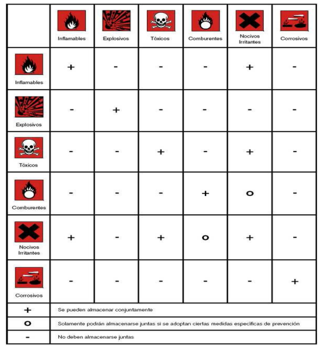
🔍 Zoom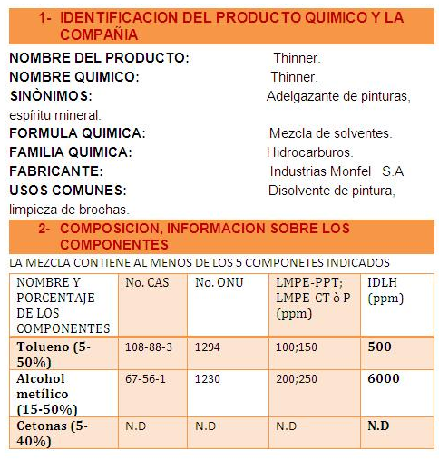
🔍 Zoom
P108
Pregunta 8: Requisitos Constructivos: Impermeabilización y Bateas de Contención (110%)
▼
El local o depósito de almacenamiento transitorio interno de residuos peligrosos debe cumplir rigurosamente los siguientes requisitos de ingeniería civil y de seguridad:
- Piso y Revestimiento: Piso de hormigón armado con terminación superficial monolítica impermeable, sin juntas abiertas, resistente al ataque químico de los solventes, ácidos o aceites almacenados (revestido con resina epoxi autonivelante o poliuretano).
- Contención Secundaria Obligatoria (Bateas o Cubetos de Retención):
- Todos los tambores de 200 litros, contenedores IBC de $1000\text{ litros}$ o bultos líquidos deben descansar sobre bateas o recintos estancos de contención secundaria.
- Capacidad volumétrica exigida por norma: El volumen de la batea debe ser igual o superior al $110\%$ del volumen del recipiente mayor almacenado, o al menos el $20\%$ del volumen total combinado de todos los recipientes contenidos sobre ella (el que resulte mayor).
- Techo y Ventilación: Techo para evitar que el agua de lluvia llene las bateas de contención y ventilación natural cruzada a cuatro vientos (o forzada antideflagrante ATEX) para evitar acumulación de vapores explosivos o tóxicos.
- Instalación Eléctrica Antiexplosiva: Luminarias, tomas e interruptores antiexplosivos con clasificación de área según norma NEC / IEC.
- Elementos de Seguridad Inmediata: Duchas de emergencia con lavaojos en el exterior del depósito, kit absorbente para derrames (arena, sepiolita o vermiculita), extintores triclase ABC o de espuma y sistema de alarma.
P109
Pregunta 9: Separación Estricta de Residuos Incompatibles
▼
- Principio de Incompatibilidad: Dos residuos son químicamente incompatibles cuando su contacto, mezcla o proximidad inmediata puede generar reacciones violentas descontroladas, tales como: explosión, ignición espontánea o calor extremo, generación de gases letales (sulfuro de hidrógeno, cianuro de hidrógeno, cloro gas), solubilización de metales tóxicos o polimerización exotérmica destructiva.
- Reglas cardinales de segregación física en planta:
- Ácidos y Álcalis (Bases): Nunca deben acopiarse en la misma batea; su contacto provoca reacción exotérmica violenta con ebullición y proyecciones ácidas.
- Sustancias Oxidantes y Solventes/Líquidos Inflamables: Deben estar físicamente separados por muros cortafuego o distancias mínimas reglamentarias; el contacto entre peróxidos/ácido nítrico con hidrocarburos provoca ignición instantánea sin necesidad de chispa externa.
- Cianuros o Sulfuros y Ácidos: Estrictamente prohibida su coexistencia; la acidificación accidental libera gas cianhídrico ($HCN$) o sulfhídrico ($H_2S$), letales en concentraciones de pocos ppm.
P110
Pregunta 10: Hojas de Datos de Seguridad (FDS) y Etiquetado SGA / IRAM
▼
- Ficha de Datos de Seguridad (FDS / SDS - Norma IRAM 41400 / SGA-GHS):
- Documento técnico de 16 secciones obligatorias que detalla las propiedades fisicoquímicas, toxicidad, reactividad, elementos de protección personal (EPP), procedimientos ante derrames, primeros auxilios y medidas de lucha contra incendios. Debe estar accesible físicamente en el depósito de residuos para los brigadistas y bomberos.
- Etiquetado de Envases:
- Todo tambor o bulto debe exhibir una etiqueta indeleble y resistente a la intemperie que indique:
- Nombre químico comercial y código de residuo (Categoría de control "Y" según Ley 24.051).
- Nombre, CUIT y dirección de la planta generadora.
- Fecha de envasado e inicio de acopio transitorio.
- Pictogramas de peligro estandarizados del Sistema Globalmente Armonizado (SGA) (rombo rojo con fondo blanco y símbolo negro: llama, bomba explotando, calavera con tibias cruzadas, corrosión, peligro ambiental).
📌 Tema 4: Residuos Patogénicos (Establecimientos de Salud)
3 PreguntasResiduos Patogénicos (Establecimientos de Salud): Desechos de atención médica que contienen microorganismos patógenos viables. Circuito estricto de 5 pasos: 1) Segregación en origen en bolsas rojas de polietileno virgen de 60 a 120 micrones y descartadores rígidos; 2) Envasado y rotulado al 75% de capacidad; 3) Almacenamiento primario, secundario y terciario en cámara frigorífica a $< 4°C$; 4) Transporte refrigerado habilitado; 5) Tratamiento por autoclave de vapor a presión ($134°C$) o incineración pirolítica en hornos de doble cámara ($850°C$ y $1100°C$) con lavadores de gases.
P111
Pregunta 11: Definición y Fuentes de Generación de Residuos Patogénicos
▼
- Definición Legal (Ley Nacional 24.051 Art. 19 / Ley CABA 154 / Ley PBA 11.347):
- Son considerados residuos patogénicos todos aquellos desechos o elementos materiales en estado sólido, semisólido o líquido que han estado en contacto con fluidos biológicos o que presentan características de infecciosidad o patogenicidad potencial, conteniendo microorganismos patógenos viables capaces de transmitir enfermedades infecciosas a seres humanos o animales.
- Fuentes de Generación Típicas:
- Hospitales, sanatorios, policlínicos y centros de salud pública y privada.
- Laboratorios de análisis clínicos, bancos de sangre y centros de diálisis.
- Quirófanos, salas de parto, morgues y salas de autopsias.
- Clínicas veterinarias y centros de atención y zootecnia de animales.
- Consultorios odontológicos y gabinetes de vacunación.
- Centros de investigación biomédica y biotecnológica.
P112
Pregunta 12: Circuito Hospitalario de 5 Pasos: De la Segregación al Tratamiento
▼
La gestión intrahospitalaria de residuos patogénicos exige un protocolo estricto e inviolable de 5 etapas secuenciales:
- Paso 1: Segregación en Origen:
- Es la separación inmediata del residuo en el mismo punto exacto donde se genera (quirófano, habitación, laboratorio).
- Código de colores y envases:
- Bolsa Roja: Obligatoria para residuos patogénicos. Fabricada en polietileno virgen de alta densidad con espesor mínimo garantizado de $60\text{ a }120\text{ micrones}$, impermeable, opaca, con soldadura reforzada de fondo y cierre precintable.
- Descartadores Rígidos para Cortopunzantes: Recipientes de paredes rígidas de polipropileno imperforables y resistentes a golpes, con boca en forma de trampa para desechar agujas, bisturíes, ampollas rotas y catéteres. Al llenarse al $75\%$ de su capacidad, se sellan herméticamente e ingresan dentro de la bolsa roja.
- Bolsa Negra: Para residuos asimilables a urbanos comunes (papeles administrativos, restos de comida del personal, embalajes limpios).
- Paso 2: Envasado y Rotulado:
- Las bolsas rojas se cierran al alcanzar tres cuartas partes ($75\%$) de su capacidad mediante un precinto plástico inviolable. Se rotulan con una etiqueta adhesiva que consigna: razón social del centro médico, servicio generador interno (ej. Terapia Intensiva, Quirófano 2), fecha de cierre y firma del responsable.
- Paso 3: Almacenamiento Transitorio Interno:
- Primario: Junto a la cama del paciente o puesto de atención.
- Secundario: Depósito intermedio en cada piso o ala médica.
- Paso 4: Transporte (Interno y Externo):
- Interno: En carros cerrados rodantes de plástico rígido lavable exclusivo, en horarios predeterminados sin cruzarse con el traslado de pacientes ni distribución de alimentos.
- Externo: Camiones furgón isotérmicos refrigerados habilitados formalmente con choferes certificados.
- Paso 5: Tratamiento y Disposición Final:
- Transformación del residuo patogénico en material biológicamente inerte e inocuo para su entierro en celdas especiales o asimilación a residuo domiciliario.
P113
Pregunta 13: Tecnologías de Tratamiento: Autoclave de Vapor vs. Incineración Pirolítica
▼
Existen dos tecnologías predominantes para la desactivación y eliminación de residuos patogénicos:
- Autoclave de Vapor Saturado a Presión con Trituración Previa o Posterior:
- Mecanismo: El residuo se somete dentro de una cámara de acero presurizada a la acción de vapor de agua saturado a temperaturas de $134^\circ\text{C}\text{ a }138^\circ\text{C}$ a una presión manométrica de $3\text{ a }3{,}5\text{ bar}$ durante un ciclo de 30 a 45 minutos. La combinación de calor latente, presión y humedad destruye irreversiblemente todas las bacterias, esporas, hongos y virus por desnaturalización proteica.
- Ventajas: No produce emisiones gaseosas tóxicas (dioxinas ni furanos), bajo costo operativo y ambiental.
- Desventajas: No reduce sustancialmente el volumen (a menos que se triture) y no es apto para piezas anatómicas humanas, miembros amputados ni residuos quimioterápicos.
- Termodestrucción / Incineración Pirolítica en Hornos de Doble Cámara:
- Mecanismo:
- Cámara Primaria ($850^\circ\text{C}$ a $900^\circ\text{C}$): Combustión en atmósfera subestequiométrica (pirólisis) que gasifica la masa orgánica y reduce el residuo sólido a cenizas minerales inertes.
- Cámara Secundaria o de Postcombustión ($1100^\circ\text{C}$ a $1200^\circ\text{C}$ con exceso de oxígeno): El gas permanece un tiempo de residencia mínimo de $2\text{ segundos}$ asegurando la destrucción completa y térmica de cualquier molécula compleja (aromáticos policlorados).
- Sistema de Lavado y Abatimiento de Gases: Enfriamiento rápido (Quencher) para evitar la resíntesis de novo de dioxinas, neutralización ácida con lavador húmedo (Scrubber) y filtrado en filtro de mangas.
- Ventajas: Destrucción total de cualquier residuo anatomopatológico, patógeno o fármaco citostático; reducción del $90\%$ en volumen y $80\%$ en peso.
- Desventajas: Alto costo energético, requiere monitoreo continuo de chimenea (CEMS).
📌 Tema 5: Residuos con PCBs (Bifenilos Policlorados)
2 PreguntasResiduos con PCBs (Bifenilos Policlorados): Aceites dieléctricos sintéticos utilizados en transformadores eléctricos antiguos. Son Contaminantes Orgánicos Persistentes (COP), bioacumulables y cancerígenos. Convenio de Estocolmo y Ley Nacional 25.670: equipos libres ($< 2\text{ ppm}$), contaminados ($2\text{ a }50\text{ ppm}$) y con PCB ($> 50\text{ ppm}$ sujetos a prohibición, reemplazo y descontaminación obligatoria).
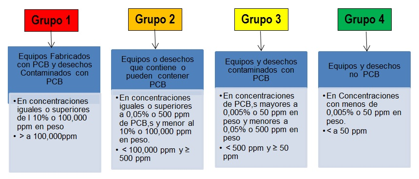
🔍 Zoom
P114
Pregunta 14: PCBs: Definición, Usos Históricos y Riesgos Toxicológicos
▼
- Definición Química: Los PCBs (Bifenilos Policlorados) son compuestos químicos sintéticos formados por una molécula de bifenilo clorada en diferentes posiciones (fórmula empírica $C_{12}H_{10-n}Cl_n$, existiendo 209 congéneres teóricos). Comercialmente se los conoció bajo marcas como Askarel, Pyranol o Aroclor.
- Usos Históricos: Debido a su extraordinaria estabilidad térmica, baja volatilidad, no inflamabilidad y elevada constante dieléctrica, fueron masivamente utilizados desde 1930 hasta fines de la década de 1980 como líquidos refrigerantes y aislantes dieléctricos en transformadores eléctricos de distribución y potencia, condensadores industriales, sistemas hidráulicos de prensas y fluidos de transferencia térmica.
- Riesgos Toxicológicos y Ambientales:
- Son clasificados como Contaminantes Orgánicos Persistentes (COP). Poseen una resistencia extrema a la degradación química y biológica; no se descomponen en el suelo ni en el agua durante décadas.
- Son lipofílicos y bioacumulables: se acumulan progresivamente en el tejido graso de peces y mamíferos, biomagnificándose a lo largo de la cadena alimentaria humana.
- Comprobada acción carcinogénica (Grupo 1 de la IARC), disrupción endocrina, daño inmunológico, hepatotoxicidad y afecciones dermatológicas severas (cloracné). En caso de incendio a temperaturas intermedias liberan dibenzodioxinas y furanos policlorados altamente tóxicos.
P115
Pregunta 15: Convenio de Estocolmo y Ley Nacional 25.670: Clasificación y Límites (2 y 50 ppm)
▼
- Convenio de Estocolmo (ratificado por Ley Nacional 25.675): Tratado internacional vinculante que prohibió la fabricación mundial de PCBs e impuso a los Estados Parte el retiro definitivo de servicio y la descontaminación de todos los equipos con PCB para el año 2025 y su destrucción total para 2028.
- Ley Nacional de Presupuestos Mínimos 25.670 (Gestión y Eliminación de PCBs):
- Establece el régimen federal para la gestión, descontaminación y disposición final de equipos y residuos que contengan PCBs.
- Límites de Concentración y Clasificación Legal de Equipos Eléctricos:
- Equipo Libre de PCB (PCB Free): Concentración de PCB menor a $2\text{ ppm}$ ($< 2\text{ mg/kg}$). El transformador se considera no contaminado y puede ser operado, mantenido o reparado sin restricciones especiales.
- Equipo Contaminado con PCB (Baja concentración): Concentración de PCB comprendida entre $2\text{ ppm}$ y $50\text{ ppm}$ ($2\text{ a }50\text{ mg/kg}$). El equipo puede continuar en funcionamiento hasta el fin de su vida útil bajo monitoreo y rotulado especial, pero al salir de servicio no puede venderse ni reciclarse el aceite mineral; debe descontaminarse químicamente mediante decloración.
- Equipo que Contiene PCB (PCB puro / Askarel): Concentración de PCB superior a $50\text{ ppm}$ ($> 50\text{ mg/kg}$). Prohibida terminantemente su recarga o mantenimiento con fluidos dieléctricos convencionales. La ley exigió su retiro de servicio obligatorio y su exportación o tratamiento térmico en hornos de plasma o incineración de altísima temperatura ($> 1200^\circ\text{C}$).
📌 Tema 6: Residuos Radiactivos
2 PreguntasResiduos Radiactivos: Regulados por Ley 25.018 con custodia y operación exclusiva de la Comisión Nacional de Energía Atómica (CNEA). La radiación ionizante (alfa, beta, gamma, neutrones) daña el ADN biológico originando residuos atómicos; la no ionizante (radio, microondas) solo produce calentamiento térmico. Gestión de baja/media actividad en trincheras de hormigón en Ezeiza y alta actividad en piletas, silos secos y repositorios geológicos profundos.
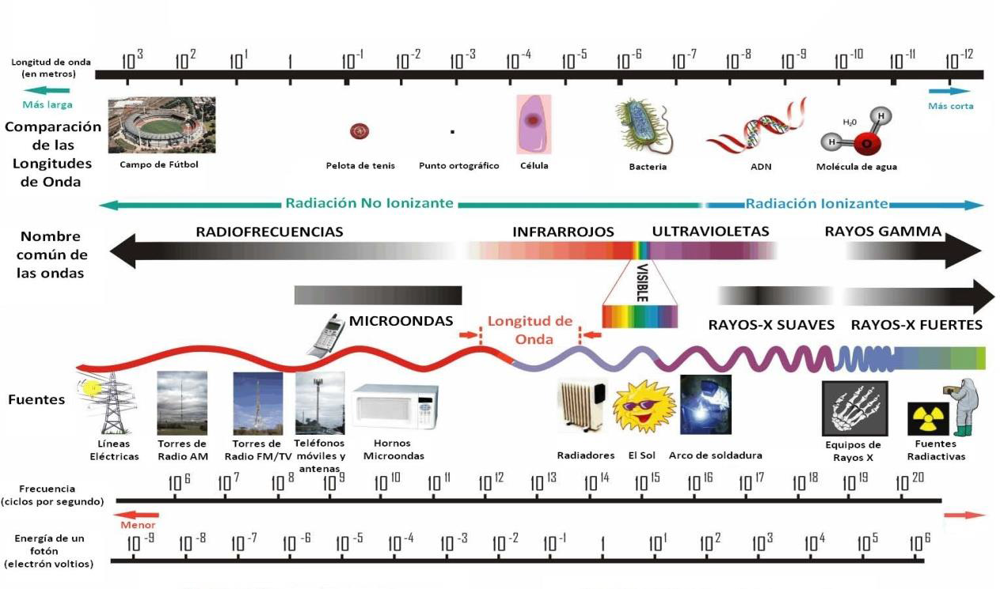
🔍 Zoom
P116
Pregunta 16: Definición, Marco Legal (Ley 25.018) y Rol de la CNEA
▼
- Definición Legal de Residuo Radiactivo: Todo material radiactivo, combinado o no con material no radiactivo, que haya sido utilizado en procesos productivos, médicos o de investigación nuclear, para el cual no se prevea ningún uso posterior, y que presente una actividad radiactiva superior a los niveles de exención fijados por la Autoridad Regulatoria Nuclear (ARN).
- Marco Regulatorio — Ley Nacional 25.018:
- Establece el Régimen de Gestión de Residuos Radiactivos en todo el país. Declara de interés público nacional la gestión segura de estos residuos para proteger a la población presente y a las generaciones futuras.
- Rol Exclusivo de la CNEA (Comisión Nacional de Energía Atómica):
- La ley asigna en forma exclusiva y monopolística a la CNEA, a través del Programa Nacional de Gestión de Residuos Radiactivos (PNGRR), la responsabilidad técnica y operativa de la recolección, transporte, tratamiento, acondicionamiento y confinamiento definitivo de todos los residuos radiactivos generados en el país (tanto de las centrales nucleares Atucha I, Atucha II y Embalse, como de hospitales e industrias privadas). El Estado Nacional es el custodio inalienable y perpetuo de dichos repositorios.
P117
Pregunta 17: Radiación Ionizante vs. No Ionizante y Repositorios Geológicos
▼
- Diferencia entre Radiación Ionizante y No Ionizante:
- Radiación Ionizante (Alfa $\alpha$, Beta $\beta$, Rayos Gamma $\gamma$, Rayos X y Neutrones): Posee suficiente energía cuántica para arrancar electrones de las órbitas atómicas de la materia biológica al incidir sobre ella. Esta ionización molecular rompe enlaces químicos en las células, causando mutaciones cromosómicas, rotura de cadenas de ADN, necrosis tisular, cáncer o síndromes por irradiación aguda. Son los únicos que originan "residuos radiactivos".
- Radiación No Ionizante (Ondas de radio, microondas, telefonía celular, rayos infrarrojos, luz visible): No posee energía fotónica suficiente para ionizar los átomos; su único efecto físico primario es el calentamiento térmico por agitación molecular dipolar. No genera residuos radiactivos.
- Clasificación de Residuos Radiactivos y su Disposición:
- Baja y Media Actividad (Vidas medias cortas $< 30\text{ años}$): Ropas descartables, guantes, filtros, herramientas, fuentes médicas de teleterapia. Se compactan, se inmovilizan con mortero de cemento en bidones de acero de 200 litros y se disponen en trincheras o trincheras de hormigón en superficie en el Centro Atómico Ezeiza.
- Alta Actividad (Combustibles gastados de reactores nucleares, emisores alfa de vida larga de miles de años): Se almacenan inicialmente en piletas de desactivación por enfriamiento hidráulico durante 5 a 10 años, luego pasan a silos secos en seco bajo hormigón armado, y su disposición final permanente internacional se diseña mediante vitrificación (fusión del residuo en una matriz de vidrio de borosilicato) alojada en Repositorios Geológicos Profundos (DGR) a más de 500 metros bajo tierra en formaciones de roca granítica o arcillas geológicamente estables por cientos de miles de años.
📌 Tema 7: Residuos Sólidos Urbanos (RSU) y Rellenos Sanitarios
2 PreguntasResiduos Sólidos Urbanos (RSU) y Rellenos Sanitarios: CEAMSE gestiona los RSU metropolitanos. En CABA rige la Ley 1.854 (Basura Cero) y Ley 2.807 para grandes generadores. Un Relleno Sanitario moderno integra impermeabilización compuesta con suelo de arcilla/bentonita, geomembrana de HDPE de 1,5-2mm soldada por doble cordón, geotextil de protección, cañerías para recolección y tratamiento de lixiviados, chimeneas de captación de biogás (metano) para quema o generación eléctrica, compactación mecánica diaria y cobertura final vegetal.
 🔍 Zoom
🔍 Zoom
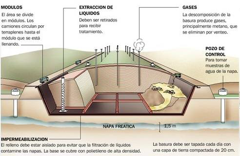
🔍 Zoom
P118
Pregunta 18: CEAMSE y Marco Legal en CABA (Ley 1.854 y 2.807)
▼
- CEAMSE (Coordinación Ecológica Área Metropolitana Sociedad del Estado):
- Empresa estatal creada por convenio entre la Ciudad de Buenos Aires y la Provincia de Buenos Aires para la recepción, transferencia, valorización y disposición final de los Residuos Sólidos Urbanos (RSU) generados por más de 15 millones de habitantes del Área Metropolitana de Buenos Aires (AMBA). Opera el megacomplejo ambiental Norte III (San Martín / Campo de Mayo).
- Marco Normativo en CABA:
- Ley 1.854 ("Basura Cero"): Establece la política de gestión integral de RSU en la Ciudad, fijando metas progresivas de reducción del volumen de basura enviado a entierro mediante la separación en origen en dos fracciones (húmedos/negros y secos reciclables/verdes atendidos por cooperativas de recuperadores urbanos).
- Ley 2.807: Regula a los Generadores Especiales de RSU (hoteles de 4 y 5 estrellas, cadenas comerciales, shoppings, supermercados, edificios corporativos que generen más de $40\text{ kg/día}$ o $1.000\text{ litros/día}$ de basura). Tienen terminantemente prohibido arrojar sus residuos en los contenedores públicos barriales de la calle; deben contratar su propio servicio privado de recolección y costear su disposición en CEAMSE.
P119
Pregunta 19: Diseño y Componentes de un Relleno Sanitario
▼
Un Relleno Sanitario de ingeniería no es un basural a cielo abierto, sino una obra de infraestructura sanitaria confinada diseñada con las siguientes capas constructivas:
- Impermeabilización de Fondo y Taludes (Barrera Múltiple):
- Subrasante compactada mecánicamente.
- Capa de suelo arcilloso impermeable o bentonita de al menos $0{,}60\text{ m}$ a $1\text{ m}$ de espesor (conductividad hidráulica $k \le 1 \times 10^{-7}\text{ cm/s}$).
- Geomembrana de Polietileno de Alta Densidad (HDPE) de $1{,}5\text{ mm}$ a $2{,}0\text{ mm}$ termosoldada por doble cordón con canal de comprobación de presión neumática.
- Geotextil no tejido de polipropileno de alto gramaje para proteger mecánicamente la geomembrana contra el punzonamiento de piedras o escombros.
- Sistema de Captación y Drenaje de Lixiviados:
- Lecho drenante de grava triturada limpia de $30\text{ cm}$ de espesor con cañerías de HDPE ranuradas helicoidales en espina de pescado que conducen el lixiviado por gravedad hacia pozos de bombeo y planta de tratamiento fisicoquímico y biológico (evitando la contaminación de las napas freáticas Puelche y Pampeano).
- Sistema de Captación y Extracción de Biogás:
- Columnas o chimeneas verticales de piedra partida y caños perforados erigidas a medida que sube el nivel de la celda de basura. Conducen los gases de fermentación anaeróbica (metano $CH_4 \approx 50-60\%$ y dióxido de carbono $CO_2$) hacia una red de succión para quemadores antorcha de alta eficiencia o para centrales de generación de energía eléctrica renovable a partir de biogás.
- Operación Diaria y Cobertura Final:
- Distribución de los residuos en capas delgadas, compactación mecánica intensiva con topadoras pata de cabra y cobertura diaria con $15\text{ cm}$ de suelo para evitar proliferación de plagas (roedores, moscas, aves), dispersión de voladuras y malos olores. Al agotar la capacidad volumétrica, se ejecuta la cobertura final con suelo vegetal, drenaje pluvial superficial y parquización.
📌 Tema 8: Residuos Especiales de Buques y Aeropuertos
1 PreguntasResiduos de Buques y Aeronaves: En puertos rige el Convenio MARPOL 73/78 (RDONB: aguas aceitosas de sentina, aguas negras y basuras con descarga obligatoria en terminal). En aeropuertos internacionales, los residuos de cabina y catering de aeronaves procedentes del exterior (RDOAE) están bajo control estricto de SENASA con riesgo zoofitosanitario extremo, exigiendo retiro precintado e incineración térmica inmediata obligatoria.
P120
Pregunta 20: Residuos de Buques (MARPOL) y Aeronaves (SENASA)
▼
- Residuos de Buques — Convenio Internacional MARPOL 73/78 (RDONB):
- Los Residuos Derivados de las Operaciones Normales de los Buques (RDONB) se clasifican según los Anexos del MARPOL: Anexo I (Aguas aceitosas de sentina, fangos de hidrocarburos e hidrocarburos lavados de tanques), Anexo IV (Aguas negras y cloacales del buque), Anexo V (Basuras sólidas y embalajes).
- Exigencia portuaria: Ningún buque mercante que recale en puertos argentinos puede zarpar sin realizar la descarga obligatoria de sus residuos oleosos de sentina y basuras en las instalaciones fijas o barcazas receptoras de la terminal portuaria, debidamente certificadas mediante el "Libro de Registro de Hidrocarburos" fiscalizado por la Prefectura Naval Argentina.
- Residuos de Aeronaves en Aeropuertos Internacionales (RDOAE):
- Se dividen en:
- RDOA: Residuos de las actividades terrestres de las terminales de pasajeros y talleres de pista (asimilables a RSU o residuos peligrosos comunes).
- RDOAE (Residuos de la Operación de las Aeronaves): Restos de comida, vajilla descartable, bandejas de catering y residuos biológicos retirados de vuelos procedentes del exterior.
- Riesgo y Protocolo de Sanidad (SENASA): Están catalogados con máximo riesgo agropecuario y zoofitosanitario por su potencialidad de ingresar al país plagas cuarentenarias, fiebre aftosa o gripe aviar. Deben ser retirados de la aeronave en bolsas plásticas especiales selladas bajo precinto, transportados en camiones de seguridad biológica y sometidos obligatoriamente a incineración térmica directa e inmediata en hornos pirolíticos dentro del aeropuerto, sin ingresar a ninguna cadena de reciclaje.
📌 Tema 9: Efluentes Líquidos Industriales y Tratamiento de Aguas
4 PreguntasEfluentes Líquidos Industriales y Tratamiento: Permisos de vuelco en CABA y PBA gestionados ante ACUMAR (Cuenca Matanza-Riachuelo), ADA (Autoridad del Agua PBA) o AySA (red cloacal con Dec. 674/89). Parámetros críticos: DBO5 (materia orgánica biodegradable), DQO (oxidación química total), metales pesados, pH y sólidos. Tren completo de tratamiento: operaciones preliminares (rejas, desarenadores, flotación DAF de grasas, tanque de ecualización); tratamiento primario (coagulación química, floculación y decantación); secundario (reactor biológico aerobio de barros activados + sedimentador con recirculación); terciario (filtración, remoción de nutrientes, desinfección UV/cloración); y línea de lodos (espesador, digestión anaeróbica, deshidratación con filtro prensa).
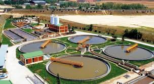
🔍 Zoom
P121
Pregunta 21: Autoridades Competentes para Permiso de Vuelco
▼
Para verter efluentes industriales tratados a un cuerpo receptor (río, arroyo, conducto pluvial o colectora cloacal), se debe tramitar formalmente el "Permiso de Vuelco" ante las autoridades competentes según la localización geográfica y la naturaleza del receptor:
- En la Ciudad Autónoma de Buenos Aires (CABA):
- ACUMAR (Autoridad de Cuenca Matanza Riachuelo): Si el establecimiento se ubica dentro de la Cuenca Matanza Riachuelo (comprende la mitad sur de CABA y 14 municipios del conurbano). Exige empadronamiento, Plan de Reconversión Industrial (PRI) y límites estrictos de vuelco según Resolución ACUMAR.
- APRA (Agencia de Protección Ambiental): Para vuelcos a la red pluvial de la Ciudad o áreas fuera de la cuenca directa de ACUMAR.
- AySA (Agua y Saneamientos Argentinos S.A.): Si el efluente líquido tratado se descarga a la red troncal colectora cloacal metropolitana. Se rige bajo el Decreto 674/89 modificado por 776/92 (parámetros de vuelco a cloaca para no destruir las cañerías ni inhibir las bacterias biológicas de la planta depuradora Berazategui / Sudeste).
- En la Provincia de Buenos Aires (PBA):
- ADA (Autoridad del Agua de la Provincia de Buenos Aires): Máxima autoridad provincial que otorga el Permiso de Explotación del Recurso Hídrico (captación subterránea) y el Permiso de Vuelco de Efluentes Líquidos Industriales (según Ley 12.257 - Código de Aguas y Decreto 3.395/96).
- Caso específico de Zárate (Río Paraná): Para una planta industrial en Zárate con vuelco proyectado al Río Paraná de las Palmas, la empresa debe tramitar el permiso ante la ADA (Autoridad del Agua de PBA) como organismo de cuenca hídrica, presentar el Estudio de Impacto Ambiental ante el Ministerio de Ambiente de la Provincia de Buenos Aires, y coordinar con la Prefectura Naval Argentina y la Subsecretaría de Puertos y Vías Navegables en lo relativo a la obra de toma y emisario subfluvial en la vía navegable troncal.
P122
Pregunta 22: Parámetros Críticos de Contaminación Líquida (DBO, DQO, Metales y pH)
▼
Los efluentes se analizan mediante parámetros físicos, químicos y biológicos estandarizados:
- DBO₅ (Demanda Bioquímica de Oxígeno a los 5 días): Mide la cantidad de oxígeno disuelto $[ \text{mg }O_2/\text{litro} ]$ que requieren los microorganismos aerobios para biodegradar la materia orgánica carbonosa presente en el agua en 5 días a $20^\circ\text{C}$. Es el indicador fundamental de carga orgánica biodegradable.
- DQO (Demanda Química de Oxígeno): Mide la cantidad total de oxígeno $[ \text{mg }O_2/\text{litro} ]$ consumida por un oxidante químico enérgico (dicromato de potasio en medio ácido caliente) para oxidar toda la materia orgánica disuelta (tanto la biodegradable como la no biodegradable o refractaria). Siempre se cumple que $\text{DQO} \ge \text{DBO}_5$.
- Relación de Biodegradabilidad ($\text{DBO}_5/\text{DQO}$): Si la relación es $> 0{,}5$, el efluente es fácilmente tratable biológicamente; si es $< 0{,}2$, contiene sustancias tóxicas o refractarias que exigen tratamiento fisicoquímico previo.
- Sólidos Suspendidos Totales (SST) y Sólidos Sedimentables: Partículas en suspensión que generan turbidez y sedimentan en el fondo de los arroyos ahogando la vida bentónica.
- pH y Temperatura: Límites admisibles: $pH$ entre $6{,}5$ y $8{,}5$ y temperatura $< 35^\circ\text{C}$ (para evitar choques térmicos y acidificación del cuerpo receptor).
- Contaminantes Inorgánicos y Metales Pesados: Cromo hexavalente ($Cr^{+6}$), Plomo, Cadmio, Mercurio, Arsénico, Cianuros y Fenoles; son tóxicos acumulativos con límites normativos estrictos del orden de microgramos o fracciones de miligramo por litro.
P123
Pregunta 23: Tren Completo de Tratamiento de Efluentes: Físico, Primario, Secundario y Terciario
▼
Una planta depuradora de efluentes industriales (ETI) se compone de cuatro niveles de tratamiento en cascada:
- Pretratamiento / Operaciones Físicas Preliminares:
- Rejas (Gruesas y Finas): Retienen sólidos de gran tamaño (maderas, trapos, bolsas, plásticos).
- Desarenadores: Canales de flujo lento donde las arenas y partículas minerales pesadas sedimentan por gravedad protegiendo a las bombas de la abrasión.
- Desengrasadores / Trampas de Grasas: Inyección de microburbujas de aire (flotación DAF) para hacer flotar los aceites e hidrocarburos libres que son removidos por rasquetas superficiales.
- Tanque de Ecualización / Homogeneización: Gran balsa con agitación que amortigua los picos bruscos de caudal y mezcla cargas ácidas y alcalinas estabilizando el pH y la concentración antes de las etapas químicas.
- Tratamiento Primario (Fisicoquímico):
- Coagulación: Agregado de coagulantes químicos inorgánicos (sulfato de aluminio $Al_2(SO_4)_3$, cloruro férrico $FeCl_3$) para neutralizar las cargas electrostáticas negativas de los coloides suspendidos.
- Floculación: Dosificación de polielectrolitos (polímeros) que aglomeran las partículas en flóculos grandes y densos.
- Sedimentación Primaria / Decantador: Tanque circular o rectangular donde los flóculos sedimentan al fondo por gravedad formando el lodo primario, mientras el agua clarificada pasa por los vertederos superiores.
- Tratamiento Secundario (Biológico):
- Destinado a degradar la materia orgánica soluble residual (disminución drástica de la DBO).
- Sistema de Barros Activados (Activated Sludge): El efluente ingresa a un reactor biológico con aireación continua forzada (sopladores y difusores de burbuja fina) donde un cultivo bacteriano aerobio ("licor mezcla") oxida la materia orgánica disuelta transformándola en dióxido de carbono, agua y nueva biomasa celular. A la salida, un sedimentador secundario o clarificador separa los barros biológicos: una parte se recircula al reactor para mantener la población bacteriana activa y el exceso se purga hacia la línea de lodos.
- Tratamiento Terciario (Avanzado):
- Filtración: A través de lechos mixtos de arena y antracita o membranas de ultrafiltración para retener sólidos suspendidos residuales.
- Remoción de Nutrientes: Procesos anóxicos de desnitrificación biológica (conversión de nitratos en gas $N_2$) y precipitación de fósforo.
- Desinfección Final: Eliminación de bacterias patógenas y coliformes mediante cloración con hipoclorito de sodio, radiación con lámparas ultravioleta (UV) u ozonización, antes del vuelco final al cuerpo receptor.
P124
Pregunta 24: Línea de Barros / Lodos: Espesamiento, Digestión y Disposición
▼
Los fangos decantados en los sedimentadores primarios y secundarios contienen entre un $97\%$ y $99\%$ de agua, por lo que deben procesarse en una línea paralela de tratamiento de lodos:
- Espesamiento (Thickening): Concentración inicial por gravedad o flotación en tanques espesadores, aumentando el contenido de sólidos secos del $2\%$ al $6-8\%$.
- Estabilización / Digestión:
- Digestión Anaeróbica: En digestores cerrados a $37^\circ\text{C}$ sin oxígeno; las bacterias metanogénicas digieren la materia orgánica volátil produciendo biogás ($CH_4$) aprovechable energéticamente y dejando un lodo inodoro y estabilizado.
- Estabilización Química: Adición de cal viva ($CaO$) para elevar el pH a $> 12$, destruyendo bacterias patógenas.
- Deshidratación Mecánica (Dewatering): Reducción drástica del contenido de agua mediante equipos industriales: filtros banda, centrífugas decantadoras o filtros prensa de placas, obteniendo una torta de lodo sólida con $20\%\text{ a }35\%$ de sequedad.
- Destino Final: Relleno sanitario en celdas especiales, valorización agronómica como enmienda de suelos (compostaje si no contiene metales pesados) o incineración en hornos de cemento (co-procesamiento térmico).
📌 Tema 10: Contaminación Atmosférica y Emisiones Gaseosas
3 PreguntasContaminación Atmosférica y Emisiones: La Emisión es la masa o caudal de contaminante descargado directamente en la boca de chimenea ($[\text{mg/Nm}^3]$ o $[\text{kg/h}]$); la Inmisión es la concentración resultante en el aire ambiente respirable a nivel del suelo ($[\mu\text{g/m}^3]$). Tecnologías de depuración: ciclones centrífugos inerciales para polvo grueso ($> 10\,\mu\text{m}$); filtros de mangas con limpieza Pulse-Jet con eficiencia $> 99{,}5\%$ para polvos finos; precipitadores electrostáticos (ESP) de alto voltaje; y lavadores húmedos (scrubbers) para neutralizar gases ácidos ($SO_2, HCl$).
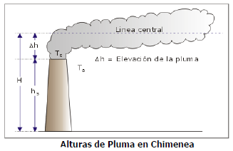
🔍 Zoom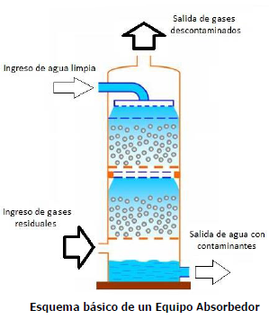
🔍 Zoom
P125
Pregunta 25: Emisión vs. Inmisión: Definición y Diferencias Críticas
▼
En la ingeniería de protección ambiental y calidad del aire se distinguen rigurosamente dos magnitudes:
- Emisión:
- Es la cantidad, concentración o caudal másico de contaminantes que son vertidos o descargados directamente a la atmósfera desde una fuente generadora puntual o difusa, medidos exactamente en el punto de salida o boca de descarga (chimenea, conducto de escape, ventilación de nave, tubo de escape de un vehículo).
- Unidades típicas de medición: Concentración másica por volumen normal de gas $[\text{mg/Nm}^3]$ o caudal de emisión horaria $[\text{kg/h}]$. Está regulada por los "Límites Máximos de Emisión en Fuente".
- Inmisión (Calidad de Aire Ambiente):
- Es la concentración de contaminantes presente en el aire atmosférico respirable, a nivel de suelo o en el entorno circundante, resultante del transporte, dispersión, dilución y transformaciones químicas de todas las emisiones gaseosas presentes en la región geográfica.
- Unidades típicas: Microgramos por metro cúbico de aire ambiental $[\mu\text{g/m}^3]$ o partes por millón $[\text{ppm}]$, medidas en estaciones de monitoreo continuo. Está regulada por las "Normas de Calidad de Aire Ambiente" para proteger la salud de la población y el ecosistema receptor.
P126
Pregunta 26: Fuentes de Emisión Fijas, Móviles y Calidad de Aire Interior
▼
- Clasificación de Fuentes Emisoras:
- Fuentes Fijas (Puntuales): Chimeneas de calderas industriales, hornos de fundición, cabinas de pintura, incineradores, antorchas de refinería y venteos de procesos químicos.
- Fuentes Móviles: Tránsito vehicular (camiones, utilitarios, autoelevadores con motor de combustión interna, locomotoras diésel, aeronaves).
- Fuentes Difusas / Fugitivas: Playas de acopio de carbón o graneles a la intemperie, caminos de tierra sin pavimentar, derrames volátiles y pérdidas en bridas o válvulas de cañerías.
- Estudio del Aire Interior de Planta (Higiene Laboral):
- Debe cumplir con los límites de la Ley Nacional de Higiene y Seguridad en el Trabajo 19.587 (Decreto 351/79 Anexo III), controlando los valores CMP (Concentración Máxima Permisible ponderada en el tiempo para jornadas de 8 horas), CMP-CPT (Concentración para cortos períodos de 15 minutos) y CMP-C (Techo que nunca debe superarse).
P127
Pregunta 27: Tecnologías de Abatimiento de Gases: Ciclones, Filtros de Mangas, ESP y Scrubbers
▼
Para evitar que los efluentes gaseosos sobrepasen los límites legales de emisión en chimenea, se utilizan cuatro tecnologías principales de depuración:
- Ciclones Centrífugos (Separadores Inerciales):
- El gas entra tangencialmente a una cámara cilíndrico-cónica girando a alta velocidad en forma de vórtice descendente. La fuerza centrífuga proyecta las partículas sólidas contra las paredes metálicas haciéndolas caer al fondo por gravedad, mientras el gas limpio asciende por el tubo central (vortex finder).
- Campo de aplicación: Separación primaria de partículas gruesas ($> 10\,\mu\text{m}$); eficiencia baja para finos ($< 5\,\mu\text{m}$). Excelente como prefiltro robusto y de bajo costo mecánico.
- Filtros de Mangas (Baghouses / Colectores de Polvo):
- El gas atraviesa cilindros de tela tejida o fieltros sintéticos especiales (poliéster, nomex, teflón PTFE). El polvo forma una torta filtrante en la superficie exterior de las mangas.
- Mecanismo de Limpieza: Periódicamente se inyecta un pulso supersónico de aire comprimido a contraflujo (Pulse-Jet) que sacude la manga desprendiendo la torta de polvo hacia la tolva inferior.
- Eficiencia: Superior al $99{,}8\%$, siendo capaz de retener partículas finísimas submicrónicas ($< 1\,\mu\text{m}$).
- Precipitadores Electrostáticos (ESP):
- El flujo de gas pasa entre electrodos de emisión (alambres delgados sometidos a alta tensión de corriente continua entre $40\text{ kV}$ y $80\text{ kV}$) y placas de captación puestas a tierra. El campo electrostático ioniza el gas (efecto corona) cargando eléctricamente las partículas de polvo, las cuales son atraídas y adheridas a las placas colectoras. Sistemas de martillos mecánicos golpean periódicamente las placas desprendiendo el polvo acumulado.
- Ventajas: Mínima pérdida de carga aerodinámica ($\Delta P < 20\text{ mm c.a.}$), apto para altísimos caudales de gas y temperaturas elevadas ($> 350^\circ\text{C}$) en centrales termoeléctricas y cementeras.
- Lavadores de Gases Húmedos (Wet Scrubbers):
- Torres de contacto contracorriente empacadas con anillos plásticos (anillos Raschig o monturas Pall) donde el gas asciende y se pulveriza desde arriba una solución acuosa alcalina (con soda cáustica $NaOH$ o lechada de cal).
- Finalidad: Absorción y neutralización química de gases ácidos ($SO_2, HCl, HF, H_2S$) y remoción simultánea de partículas pegajosas o explosivas que no pueden tratarse en filtros secos.
📊 Matriz de Frecuencia y Fechas de Exámenes
Estadísticas Grimolizzi| Tema Específico de la Unidad 6 | Exámenes donde se tomó | Frecuencia |
|---|---|---|
| Residuos Peligrosos: Definición en Nación (Ley 24.051), PBA (Ley 11.720) y CABA (Ley 2.214) | Final 22/04/2026, Final 23/02/2026, 2do Parcial Grimo, Resumen | 4 veces |
| Manifiesto de Residuos Peligrosos: Circuito, Firmas y Certificado de Tratamiento | Final 22/04/2026, Final 23/02/2026, Final Grimo 2025, Resumen | 4 veces |
| Residuos Patogénicos: Circuito intrahospitalario en 5 pasos y Bolsas Rojas | Final 23/02/2026, Final 02/03/2026, Resumen Finales | 3 veces |
| Autoridades de Volcado de Efluentes en CABA y PBA (ACUMAR, ADA, AySA, Zárate) | Final 23/02/2026, Final 02/03/2026, Resumen Finales | 4 veces |
| Contaminación Atmosférica: Emisión vs. Inmisión | Final 23/02/2026, Final Mayo 2025, Resumen Finales | 3 veces |
| Diferencia Conceptual entre Residuo y Desperdicio | Final 23/02/2026, Final 02/03/2026, Resumen Oficial | 3 veces |
| Residuos con PCBs: Convenio de Estocolmo, Ley 25.670 y Límites (2 y 50 ppm) | Final 23/02/2026, Final 02/03/2026, Diapositivas U6 | 3 veces |
| Residuos Radiactivos: Ley 25.018, Rol de la CNEA y Radiación Ionizante vs. No Ionizante | Final 23/02/2026, Resumen Oficial | 2 veces |
| Tratamiento de Aguas Residuales: Tren Completo (Físico, Primario, Secundario y Terciario) | Final 23/02/2026, Presentación U6 | 2 veces |
| Relleno Sanitario: Membrana HDPE, Captación de Lixiviados y Biogás (CEAMSE) | Final 02/03/2026, Presentación U6 | 2 veces |
| Almacenamiento de RP: Bateas de Contención Secundaria (110%) e Incompatibilidades | Final 02/03/2026, Presentación U6 | 2 veces |
| Categorías de Generadores de Residuos Peligrosos (Menor, Mediano, Mayor) | Final 23/02/2026, Resumen Oficial | 2 veces |
| Residuos Especiales: MARPOL en Buques y Cuarentenarios en Aeropuertos (SENASA) | Final 23/02/2026, Presentación U6 | 2 veces |
| Tecnologías de Abatimiento de Gases: Filtros de Mangas Pulse-Jet, ESP y Scrubbers | Final 23/02/2026, Presentación U6 | 2 veces |
🚢 Unidad 11: Transportes Externos a Planta y Logística Multimodal
Buques Portacontenedores, Monoboyas Offshore, Bitrenes de 75t, Red de Trochas y Carga Aérea ULD
📌 Tema 1: Sustentabilidad y Eficiencia Energética en el Transporte
3 PreguntasSustentabilidad y Rendimiento Modal: El transporte de cargas global debe alinearse al enfoque de políticas sustentables: Evitar viajes innecesarios, Cambiar hacia modos de transporte de mayor eficiencia energética relativa (ferrocarril e hidrovía en lugar de camión para largas distancias), y Mejorar la tecnología de vehículos e infraestructuras (electrificación portuaria Cold Ironing, biocombustibles y aerodinámica).
P128
Pregunta 1: Consumo Energético, Emisiones GEI y Comparativa de Rendimiento Modal
▼
- Impacto Energético y Petrolero del Transporte:
- El sector del transporte es el principal consumidor de energía primaria a nivel global.
- Consume el 50% de los combustibles fósiles líquidos mundiales, habiendo registrado un crecimiento del 17% entre 1973 y 2012, con una tasa de expansión proyectada del 1,4% anual.
- Emisiones de Gases de Efecto Invernadero (GEI) y $CO_2$:
- En 2004, el 13% de las emisiones mundiales de GEI provinieron del transporte.
- En 2009, generó el 23% del total mundial de emisiones de $CO_2$, constituyendo el segundo sector en importancia contaminante, sólo por detrás de la generación de electricidad y calefacción.
- Los mayores emisores de $CO_2$ y de mayor costo unitario son el transporte aéreo y el transporte por carretera.
- Rendimiento Energético Comparativo (Tracción y Distancia por Litro):
- Para desplazar 1 tonelada de carga consumiendo 1 litro de combustible, las distancias recorridas según cada modo son:
| Modo de Transporte | Carga $[ \text{Tn} ]$ | Combustible $[ \text{litros} ]$ | Distancia Recorrida $[ \text{km} ]$ | Relación de Rendimiento Relativo |
|---|---|---|---|---|
| Camión (Carretera) | 1 | 1 | 23 km | Base ($1\times$) |
| Tren (Ferrocarril) | 1 | 1 | 90 km | $3{,}9\times$ más eficiente que el camión |
| Barcaza (Fluvial) | 1 | 1 | 250 km | $10{,}8\times$ más eficiente que el camión |
- Emisión de Carbono por Tonelada-Kilómetro transportada:
- Buque porta-contenedores de gran porte (Triple-E): $\approx 3\text{ g de } CO_2 / \text{Tn-km}$.
- Ferrocarril: $\approx 18\text{ g de } CO_2 / \text{Tn-km}$.
- Camión carretero: $\approx 47\text{ g de } CO_2 / \text{Tn-km}$.
- Transporte aéreo: $\approx 560\text{ g de } CO_2 / \text{Tn-km}$ (más de 10 veces más contaminante que el camión y casi 190 veces más que un buque moderno).
P129
Pregunta 2: Enfoque de Políticas Sustentables: EVITAR – CAMBIAR – MEJORAR
▼
El reto del transporte sustentable exige articular sinergias económicas, ambientales y sociales público-privadas bajo el paradigma EVITAR – CAMBIAR – MEJORAR:
- EVITAR (Avoid):
- Evitar el transporte innecesario e ineficiente mediante una adecuada programación logística, planificación territorial, ruteo inteligente y reducción de viajes con bodegas vacías o subutilizadas.
- Optimizar el diseño de envases y embalajes secundarios/terciarios para maximizar el factor de estiba y la volumetría útil.
- CAMBIAR (Shift):
- Realizar una transferencia modal desde los medios más contaminantes e ineficientes (carretera de larga distancia y aéreo) hacia modos más limpios y masivos: ferrocarril y vías navegables (fluvial y marítimo).
- Desarrollar cadenas logísticas multimodales e intermodales con infraestructura de transbordo ágil.
- MEJORAR (Improve):
- Mejorar la tecnología de los vehículos existentes: adopción de combustibles alternativos (biocombustibles, gas natural, propulsión eléctrica/híbrida).
- Renovación continua del parque móvil automotor y de tracción ferroviaria.
- Ampliar y mantener adecuadamente la infraestructura de carreteras para eliminar cuellos de botella y congestión vehicular.
P130
Pregunta 3: Cold Ironing (Suministro Eléctrico Portuario) y Biocombustibles
▼
- Concepto de Cold Ironing (Onshore Power Supply - OPS):
- Es la tecnología que permite conectar los buques atracados en el muelle a la red eléctrica terrestre de la terminal portuaria, permitiendo que la nave apague completamente sus motores auxiliares diésel generadores durante su estancia en puerto.
- Objetivo: Eliminar las emisiones directas de $CO_2$, óxidos de nitrógeno ($NO_x$), óxidos de azufre ($SO_x$) y material particulado fino en las zonas portuarias urbanas, además de suprimir por completo la contaminación sonora y vibraciones generadas por los motores del barco.
- Uso de Biocombustibles en Terminales:
- La sustitución de diésel fósil convencional por una mezcla al 30% de biocombustible en los equipos de patio y manipuleo de la terminal (grúas pórtico diésel, reach stackers, camiones internos) genera una reducción directa comprobada de entre el 13% y el 26% de las emisiones de $CO_2$ de la terminal portuaria.
📌 Tema 2: Transporte Marítimo y Tipología de Buques
13 PreguntasTransporte Marítimo y Buques: El contenedor marítimo estandarizado ISO revolucionó el comercio global a partir de la innovación de Malcom McLean en 1956. Tipologías de buques: Portacontenedores celulares (dimensionados según esclusas de Panamá: Panamax, Post-Panamax, New Panamax de 14.000 TEUs y gigantes Triple E de $> 18.000\text{ TEUs}$); buques Feeder alimentadores para redes Hub & Spoke; buques Petroleros de doble casco con tanques segregados y bombas sumergidas Framo; buques graneleros Bulk Carriers; buques químicos con tanques de acero inoxidable (OMI Tipos 1, 2 y 3); gaseros criogénicos para GNL ($-162°C$); y buques Ro-Ro / Car-Carriers.
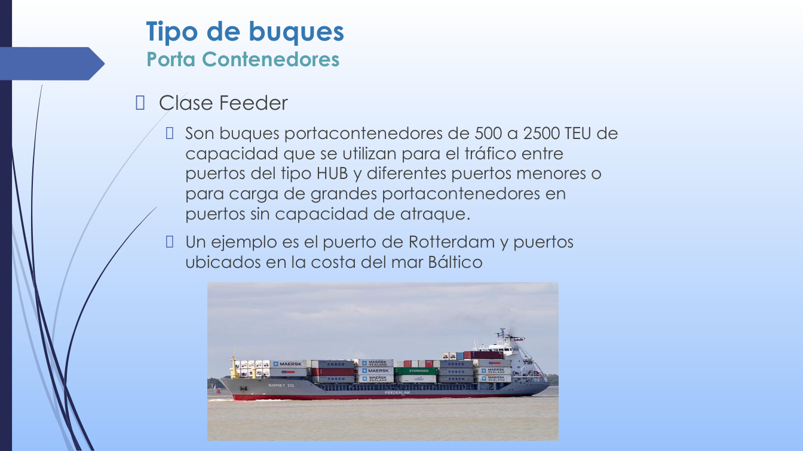
🔍 Zoom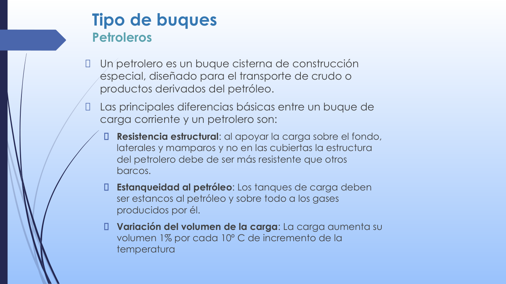
🔍 Zoom
P131
Pregunta 4: Características Principales del Transporte Marítimo y Evolución del Tráfico
▼
- Importancia en el Comercio Mundial: Representa aproximadamente el 80% del comercio internacional en volumen/peso, constituyendo la columna vertebral de la globalización productiva.
- Aptitud Principal: Permite trasladar enormes masas de materiales a costos extraordinariamente económicos en comparación con cualquier otro modo sobre largas distancias.
- Distribución de la Carga Marítima Mundial (Base estadística de Cátedra):
- Petróleo y Gas: 33% del total.
- Graneles Principales (Main Bulks: hierro, cereales, carbón, bauxita/alúmina, fosfatos): 27%.
- Otras Cargas Secas: 24%.
- Carga en Contenedores: 16% (presentando el crecimiento más explosivo: +102% de volumen en las últimas dos décadas).
- Concepto de Tonelada-Milla:
- Es la unidad técnica que mide la demanda real y efectiva de transporte marítimo, multiplicando el volumen transportado (en toneladas) por la distancia recorrida (en millas náuticas). Determina la oferta y disponibilidad global de buques requeridos en la flota mercante.
- Ventajas y Desventajas del Transporte Marítimo:
- Ventajas: Extremadamente económico; versatilidad para todo tipo de carga (líquidos, graneles, contenedores, sobredimensionados); menores restricciones de peso y volumen; economías de escala masivas.
- Desventajas: Gran lentitud relativa en función del buque y ruta; necesidad imperiosa de accesos náuticos profundos (dragado), muelles costosos y servicios de aduana; riesgo de siniestros ambientales de gran envergadura (derrames de hidrocarburos).
P132
Pregunta 5: Buques Portacontenedores: Origen Histórico, Malcom McLean e Impacto Logístico
▼
- Situación Previa (Carga Fraccionada Tradicional): Por más de dos mil años la carga marítima se manipuló bulto a bulto, saco a saco o caja a caja dentro de las bodegas, demandando semanas enteras de cuadrillas de estibadores en muelle, generando altísimos costos de rotura, hurto y demoras excesivas de los buques atracados.
- Invención del Contenedor (Malcom McLean):
- A mediados de la década de 1950, el transportista estadounidense Malcom McLean observó la ineficiencia de transferir la mercancía del camión a la bodega del buque.
- Concibió la idea de separar la caja del camión y transformarla en una unidad de carga modular e intercambiable entre modos de transporte.
- Hito Histórico (1956 - Buque "Ideal X"):
- En 1956 adaptó un buque petrolero excedente de la Segunda Guerra Mundial (Clase T2 Tanker) bautizado como el "Ideal X", realizando el primer viaje intermodal desde Nueva Jersey hasta Houston con 56 contenedores sobre cubierta.
- Impacto Económico Revolucionario:
- El costo de carga y manipulación portuaria se desplomó de USD 5,86 por tonelada a sólo USD 0,16 por tonelada (una reducción superior al 97%).
- Redujo drásticamente los tiempos de escala en puerto de semanas a horas y generalizó la contenerización del comercio mundial en menos de diez años.
P133
Pregunta 6: Clases de Buques Portacontenedores según Esclusas de Panamá y Buques Triple E
▼
- Evolución por Dimensiones y Restricciones de Paso:
| Clase de Buque | Capacidad de Carga $[ \text{TEU} ]$ | Eslora $[ \text{m} ]$ | Manga $[ \text{m} ]$ | Calado $[ \text{m} ]$ | Relación con el Canal de Panamá |
|---|---|---|---|---|---|
| Early / Fully Cellular | $500 - 2.500$ | $137 - 215$ | $17 - 20$ | $9 - 10$ | Pasaban sin restricciones. |
| Panamax / Panamax Max | $3.000 - 4.500$ | $250 - 290$ | $32{,}2$ | $12{,}5$ | Límite máximo de las esclusas originales ($304{,}8\text{ m} \times 33{,}5\text{ m} \times 12{,}8\text{ m}$). |
| Post-Panamax I y II | $4.000 - 8.500$ | $300 - 340$ | $40 - 43$ | $13 - 14{,}5$ | No podían cruzar el canal histórico por exceso de manga/eslora. |
| Neo-Panamax | $12.500 - 14.000$ | $366$ | $49$ | $15{,}2$ | Diseñados para las nuevas esclusas inauguradas en 2016 ($427\text{ m} \times 55\text{ m} \times 18{,}3\text{ m}$). |
| VLCS / ULCS (Ultra Large) | $18.000 - 24.000+$ | $\approx 400$ | $56 - 59$ | $15{,}5 - 16$ | Superan las nuevas esclusas; operan rutas troncales Asia-Europa por Suez o Cabo. |
- Buques Clase Triple-E (Maersk):
- Botados a partir de 2013 con capacidades entre 18.000 y 21.000 TEU.
- Su denominación "Triple E" responde a tres principios de diseño:
- Economy of scale: Reducción drástica del costo operativo unitario por TEU transportado.
- Energy efficient: Motores diésel de carrera ultra-larga con recuperación de calor residual (37% menos de consumo de combustible).
- Environmentally improved: Reducción del 50% en las emisiones de $CO_2$ por contenedor frente al promedio de la flota precedente.
P134
Pregunta 7: Buques Feeder: Función en Rutas Hub & Spoke
▼
- Definición de Buque Feeder (Alimentador): Son buques portacontenedores de porte medio o pequeño, con capacidad típica de 500 a 2.500 TEU, diseñados específicamente para navegar en aguas someras, canales restringidos y puertos de escala secundaria o regional.
- Función Logística:
- Conectan los grandes Puertos Hub de transferencia oceánica (donde recalan los buques nodriza ULCS/Neo-Panamax de gran calado) con los puertos menores periféricos (Spokes) que carecen de calado, grúas pórtico monumentales o demanda suficiente para recibir naves transoceánicas.
- Ejemplos típicos: Rutas alimentadoras entre el Puerto Hub de Rotterdam y los puertos litorales del Mar Báltico; o conexiones en el Cono Sur entre puertos nodales y terminales secundarias.
P135
Pregunta 8: Buques Petroleros vs. Buques de Carga Convencional: 4 Diferencias Críticas
▼
Grimolizzi exige puntualmente cuatro diferencias constructivas y operativas esenciales:
- Resistencia Estructural:
- Estanqueidad Estricta y Seguridad contra Gases:
- Gestión del Volumen de la Carga (Dilatación Térmica):
- Equipamiento y Maniobras de Carga y Descarga:
---
P136
Pregunta 9: Clasificación de Buques Petroleros según Tamaño DWT
▼
La cátedra clasifica a los buques petroleros en función de su porte muerto o capacidad de transporte en toneladas (DWT - Deadweight Tonnage):
| Clase de Petrolero | Rango DWT $[ \text{toneladas} ]$ | Denominación Comercial y Ámbito Operativo |
|---|---|---|
| General Purpose tanker | $10.000 - 25.000$ | Product tanker (transporte de derivados refinados y cabotaje). |
| Medium Range tanker | $25.000 - 45.000$ | Panamax (apto para esclusas tradicionales). |
| LR1 (Large Range 1) | $45.000 - 80.000$ | Aframax (Average Freight Rate Assessment). |
| LR2 (Large Range 2) | $80.000 - 160.000$ | Suezmax (límite para cruzar el Canal de Suez a plena carga). |
| VLCC (Very Large Crude Carrier) | $160.000 - 320.000$ | Transporte intercontinental de crudo masivo. |
| ULCC (Ultra Large Crude Carrier) | $> 320.000$ | Superpetroleros interoceánicos de máxima envergadura. |
---
P137
Pregunta 10: Buques de Carga General (Multipropósito)
▼
- Concepto: Son buques polivalentes configurables para transportar carga seca fraccionada, maquinaria pesada, piezas sobredimensionadas con sobrepeso (Heavy Lift), y cuentan frecuentemente con compartimentos celulares adaptados para transportar contenedores y bodegas para cargas refrigeradas.
- Rasgo Distintivo: Llevan habitualmente grúas o plumas de izaje montadas sobre el centro de su cubierta, lo que les confiere autonomía total para operar en puertos precarios que carecen de infraestructura y grúas en tierra ("buques con medios propios" o geared vessels).
P138
Pregunta 11: Buques Químicos: Características Constructivas y Clasificación OMI (Tipos 1, 2 y 3)
▼
- Características Constructivas Generales:
- Porte común entre 5.000 y 10.000 TPM (excepcionalmente hasta 50.000 TPM).
- Poseen múltiples tanques independientes y perfectamente segregados, construidos en acero inoxidable o en acero al carbono revestido con resinas fenólicas o epoxis especiales, para impedir reacciones químicas y corrosión.
- Cuentan con líneas de tuberías y bombas individuales para cada tanque, evitando cualquier mezcla o contaminación de productos.
- Equipados contra riesgos severos: incendio, intoxicación de la tripulación y corrosión acelerada.
- Clasificación OMI según Grado de Peligrosidad:
- Buque Tipo 1: Diseñado para transportar sustancias químicas de muy alta peligrosidad y máximo impacto ambiental/toxicológico. Exige las máximas medidas de contención física y estructural (doble casco integral, gran separación de los tanques respecto al forro exterior del buque para evitar derrames en caso de colisión o varadura).
- Buque Tipo 2: Destinado a productos peligrosos con severidad intermedia. Mantiene exigencias constructivas rigurosas y sistemas de contención que garantizan la prevención de fugas ante averías moderadas.
- Buque Tipo 3: Transporta sustancias de menor peligrosidad relativa, requiriendo un estándar de contención moderado para resistir averías náuticas leves sin comprometer la carga.
P139
Pregunta 12: Buques Gaseros para LNG: Tecnologías Criogénicas y Tipos de Tanques OMI
▼
- Principio Físico Criogénico:
- Transportan Gas Natural Licuado (metano licuado) a una temperatura extremadamente baja de $-160\text{ }^\circ\text{C}$ a presión atmosférica ($1\text{ atm}$).
- Poseen doble casco con aislaciones térmicas ultra-eficientes (perlita expandida, lanas minerales o espumas criogénicas).
- Propulsión con Gas Evaporado (Boil-Off Gas):
- La pequeña fracción de gas que inevitablemente se evapora por ganancia de calor ambiente (0,15% a 0,30% del volumen diario transportado) se recupera e inyecta como combustible en los motores o calderas del propio buque para su propulsión.
- Clasificación de Tanques según el Código OMI (5 Tipos):
- 3. Tanques de Semi-membrana.
- 4. Tanques Integrales o Estructurales (Convencionales).
- 5. Tanques con Aislamiento Interno.
P140
Pregunta 13: Buques Frigoríficos (Reefer Ships)
▼
- Características Principales:
- Naves dotadas de cubiertas y bodegas inferiores térmicamente aisladas y conectadas a plantas de refrigeración centralizadas.
- Rango de temperatura operativa: desde $+12\text{ }^\circ\text{C}$ (frutas, verduras, cargas frescas) hasta $-15\text{ }^\circ\text{C}$ y $-30\text{ }^\circ\text{C}$ (productos congelados: carnes, pescado).
- Capacidad volumétrica típica: entre 100.000 y 600.000 pies cúbicos.
- Aspectos Distintivos:
- Sus cascos están pintados tradicionalmente de color blanco para maximizar la reflexión de la radiación solar y minimizar la transferencia térmica hacia las bodegas.
- Desarrollan altas velocidades de crucero para reducir el tiempo de tránsito de productos perecederos de alto valor.
P141
Pregunta 14: Buques Graneleros (Bulk Carriers): Características y Clases por TPM
▼
- Concepto: Son buques de gran porte destinados al transporte de sólidos a granel (mineral de hierro, carbón, granos agrícolas, fertilizantes, áridos). Poseen grandes bodegas prismáticas con escotillas superiores deslizantes o basculantes, libres de obstáculos internos y diseñadas para facilitar el llenado por tolvas/brazos y la descarga por cucharas o equipos de vacío continuo.
- Clases de Buques Graneleros según Capacidad (TPM - Toneladas de Porte Muerto):
- Mini-bulkers: Hasta $10.000\text{ TPM}$. Rutas costeras, cabotaje fluvial y estuarios; máximo 2 bodegas.
- Handy-sized: Alrededor de $40.000\text{ TPM}$. Son los más numerosos a nivel mundial por su flexibilidad para operar en puertos de calado reducido.
- Handymax: Entre $40.000\text{ y }60.000\text{ TPM}$, con esloras superiores a 200 m. Cuentan con unas 5 bodegas y grúas propias de cubierta.
- Panamax: Entre $60.000\text{ y }85.000\text{ TPM}$, con esloras superiores a 250 m; dimensión tope para las esclusas convencionales de Panamá.
- Cape-sized (Capesize): Superan las $85.000\text{ TPM}$ (comúnmente de $100.000\text{ a }200.000\text{ toneladas}$). Por su calado excesivo no cruzaban Panamá ni Suez y debían navegar por el Cabo de Hornos o el Cabo de Buena Esperanza.
---
P142
Pregunta 15: Buques Ro-Ro (Roll on / Roll off): Funcionamiento, Rampas y Car-Carriers
▼
- Principio Operativo:
- Buques diseñados exclusivamente para cargar y descargar mercancías rodadas (vehículos comerciales, autos, trailers, camiones con su acoplado o remolques industriales).
- Rampas y Compuertas:
- Disponen de grandes portones abatibles en la popa y/o proa que se despliegan directamente sobre el muelle actuando como rampas de acceso.
- En su interior poseen múltiples cubiertas interconectadas mediante rampas fijas, rampas basculantes o plataformas elevadoras (ascensores hidráulicos).
- Subtipos de Buques Ro-Ro:
- Car-carriers (PCTC - Pure Car and Truck Carrier): Especializados exclusivamente en el transporte masivo de automóviles de fábrica. Se reconocen exteriormente por su aspecto de bloque cúbico o caja de zapatos gigante, con cubiertas de baja altura libre optimizadas para aprovechar al máximo la volumetría.
- Ro-Pax (Mixtos): Buques de transbordo rodado adaptados simultáneamente para transportar vehículos y pasajeros (ferries de media/larga distancia).
- Ventajas Operativas:
- Cero necesidad de grúas pórtico en el puerto.
- Tiempos de carga y descarga sumamente rápidos.
- Mínima probabilidad de roturas o averías de mercadería por manipuleo y estiba.
- Amplía el radio de acción del camión: la cabeza tractora puede embarcar y continuar viaje en el puerto de destino.
P143
Pregunta 16: Remolcadores: Funciones, Equipamiento y Clases
▼
- Definición y Rol Náutico:
- Embarcaciones de pequeñas dimensiones relativas pero equipadas con plantas motrices de altísima potencia y tiro de bita (bollard pull).
- Cumplen funciones de asistencia, empuje y tiro para maniobras de atraque, desatraque y reviro de grandes buques mercantes en canales estrechos, dársenas y mar abierto, además del remolque de barcazas y salvamento de barcos averiados.
- Equipamiento Auxiliar Típico:
- Monitores contra-incendios de agua y espuma de alta presión.
- Bombas de achique para socorrer buques inundados.
- Gancho o chigre de remolque con desenganche rápido de seguridad.
- Clases de Remolcadores:
- Clase de Puerto: Maniobras interiores de dársena y muelle. Potencia: $400 - 3.000\text{ CV}$. Eslora: $20 - 30\text{ m}$. Calado: $3{,}0 - 4{,}5\text{ m}$. Velocidad: $5 - 13\text{ nudos}$.
- Clase Puerto y Altura: Servicios mixtos (atraque de grandes buques, amarre de supertanqueros a boyas/monoboyas y remolques costeros de media distancia). Potencia: $1.500 - 6.000\text{ CV}$. Eslora: $25 - 40\text{ m}$. Calado: $4{,}5 - 6\text{ m}$. Velocidad: $5 - 13\text{ nudos}$.
- Clase Oceánico: Asistencia y remolques intercontinentales en alta mar, operaciones en plataformas petroleras y salvamento marino. Potencia: $6.000 - 20.000\text{ CV}$. Eslora: $40 - 80\text{ m}$. Calado: $5 - 6\text{ m}$. Velocidad: $15 - 16\text{ nudos}$.
📌 Tema 3: Transporte Fluvial e Hidrovías
1 PreguntasTransporte Fluvial e Hidrovías: La Hidrovía Paraguay-Paraná constituye el eje estratégico de exportación de graneles de Argentina. La navegación por convoyes de barcazas empujadas ofrece el menor consumo de combustible y menor costo por tonelada-kilómetro en cargas a granel.
P144
Pregunta 17: Transporte Fluvial: Ventajas Comparativas, Cuencas Principales y Barcazas
▼
- Definición y Reposicionamiento:
- Modalidad de navegación interior a través de ríos, lagos y canales navegables interiores o litorales marítimos protegidos.
- Está experimentando un fuerte reposicionamiento mundial debido a su reducidísimo costo por tonelada-kilómetro y muy bajo índice de emisiones contaminantes.
- Cuencas Fluviales Estratégicas en el Continente Americano:
- Cuenca del Río Mississippi (EE.UU.).
- Cuenca del Río Amazonas (Brasil, Perú, Colombia).
- Cuenca del Plata / Hidrovía Paraguay–Paraná (Argentina, Paraguay, Brasil, Bolivia y Uruguay): vital para la salida de los agrograneles y minerales del Cono Sur.
- Ventajas Comparativas Fundamentales frente a Carretera y Ferrocarril:
- Bajísimo costo de infraestructura y mantenimiento: El "camino" ya existe de forma natural (el lecho del río), requiriendo únicamente dragado periódico y balizamiento.
- Máxima capacidad de carga por convoy: Un tren de barcazas empujado por un único remolcador puede trasladar el equivalente a cientos de vagones de tren o miles de camiones.
- Extraordinaria eficiencia energética: Con 1 litro de combustible desplaza 1 tonelada de carga a lo largo de 250 km (frente a 90 km del tren y sólo 23 km del camión).
📌 Tema 4: Terminales Portuarias y Sistemas de Transferencia
8 PreguntasTerminales Portuarias e Hidrocarburos: Diferencia entre puerto (área geográfica) y terminal (instalación especializada concesionada con grúas pórtico STS Super Post Panamax). En hidrocarburos líquidos: carga en muelle mediante brazos articulados marinos (Hardarms); carga offshore en mar abierto mediante Monoboyas (SPM - Single Point Mooring) conectadas por mangueras flotantes y oleoductos submarinos. Puertos secos aduaneros interiores.
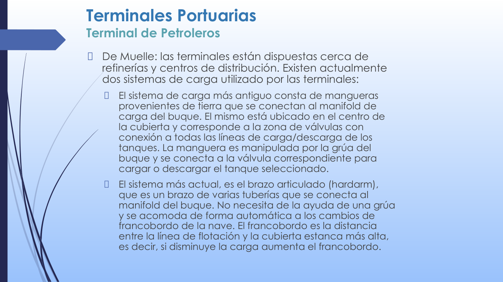
🔍 Zoom
P145
Pregunta 18: Definición de Puerto vs. Terminal Portuaria y Componentes de Infraestructura
▼
- Distinción Conceptual:
- Puerto: Espacio geográfico natural o artificial de aguas protegidas (mediante escolleras, ensenadas o dársenas) destinado al fondeo, resguardo, amarre y aprovisionamiento seguro de barcos.
- Terminal Portuaria: Es la instalación física especializada dentro del puerto que constituye la interfaz operativa, física y documental entre el modo de transporte marítimo/fluvial y los modos de transporte terrestres (ferrocarril, camión o ductos).
- Componentes Clave de una Terminal Portuaria:
- Infraestructura básica: Obras civiles de muelles de atraque, patios de acopio pavimentados, explanadas, almacenes cubiertos, canal de acceso dragado y dársena de maniobras.
- Servicios e instalaciones logísticas: Edificios aduaneros, básculas de pesaje fiscal, oficinas de agentes de aduana y líneas navieras, zonas de consolidación CFS, talleres de mantenimiento y control fitosanitario/seguridad.
P146
Pregunta 19: Terminal Polivalente vs. Terminal Especializada de Contenedores
▼
- Terminal Polivalente (Multipropósito):
- Diseñada para operar simultáneamente diversos tipos de carga: carga general fraccionada, bultos industriales pesados, contenedores y carga sobre ruedas (Ro-Ro).
- Equipada con grúas móviles polivalentes, cabezales tractores y amplias explanadas abiertas y galpones de depósito. Su flexibilidad es alta pero su grado de sistematización y velocidad operativa por barco es inferior.
- Terminal Especializada de Contenedores:
- Instalación de alto rendimiento orientada exclusivamente a la manipulación masiva de contenedores estandarizados (ISO 20' y 40').
- Funciona como un intercambiador intermodal de flujo continuo que conecta el transporte marítimo con el camión y el ferrocarril sin generar congestión.
---
P147
Pregunta 20: Terminales de Petroleros en Muelle: Mangueras vs. Brazo Articulado (Hardarm)
▼
En terminales de hidrocarburos situadas en muelle se emplean dos sistemas de vinculación con el buque:
- Sistema de Mangueras Flexibles Tradicional:
- Conexión mediante mangueras flexibles que se tienden desde el muelle terrestre hasta el manifold central del buque tanque.
- Desventajas: Requiere la asistencia obligatoria de una grúa del propio buque para izar las mangueras pesadas; presenta mayor desgaste y riesgo de rotura por rozamiento; el conexionado manual es lento y propenso a fatiga o fugas.
- Sistema Moderno de Brazo Articulado (Hardarm):
- Estructura rígida de cañerías de acero interconectadas por juntas articuladas giratorias de alta estanqueidad.
- Ventajas Críticas:
- No requiere la ayuda de grúas externas: Posee accionamiento electro-hidráulico autónomo para posicionarse y acoplarse directamente a las bridas del manifold del buque.
---
P148
Pregunta 21: Terminales Offshore de Hidrocarburos: Sistema Monoboya (SPM) vs. Multiboyas
▼
Debido al enorme calado de los superpetroleros (VLCC/ULCC), muchas terminales no pueden recibirlos en muelles costeros y realizan la carga/descarga en mar abierto (offshore) mediante dos tecnologías:
- Sistema de Monoboya o SPM (Single Point Mooring):
- Principio: Es un sistema de boya única anclada al fondo marino donde el buque tanque se amarra exclusivamente por su proa.
- Mesa Giratoria de 360°: El casco de la boya posee una plataforma o mesa giratoria montada sobre grandes rodamientos. Esto permite que el buque amarrado gire libremente los 360° buscando la línea de menor resistencia ("veleta") alineándose de forma natural con la acción combinada del viento, las olas y las corrientes marinas dominantes.
- Conexión de Hidrocarburos: El crudo fluye desde el oleoducto submarino en tierra hacia el PLEM (Pipeline End Manifold) en el fondo marino, sube por mangueras submarinas hasta el cuerpo central giratorio de la boya, y de allí se bombea al manifold del buque a través de mangueras flotantes.
- Aplicación: Ideal para zonas de mar abierto expuestas a condiciones climáticas y marítimas severas y cambiantes.
- Sistema de Multiboyas:
- Principio: El buque tanque se fija en una posición rígida y estática mediante un arreglo semicircular de 3 a 7 boyas de amarre distribuidas alrededor de su casco con múltiples anclas y cadenas de fondeo.
- Características: Las boyas cumplen una función estrictamente de amarre mecánico (no transfieren producto). La transferencia se realiza mediante mangueras flexibles que descansan en el fondo del lecho marino y son izadas por la grúa del buque una vez que este ha quedado rígidamente inmovilizado.
- Limitación: Sólo es viable en bahías abrigadas o ensenadas donde la dirección de los vientos y el oleaje es estable, ya que el buque no puede rotar ante cambios bruscos de corriente o viento.
P149
Pregunta 22: Terminales de Graneles Sólidos: Equipamiento y Segregación de Productos
▼
- Función: Manipular, cargar, descargar y almacenar materiales sólidos sin empaque (cereales, minerales, carbón, fertilizantes, fosfatos).
- Equipamiento Esencial:
- Tolvas receptoras: Para canalizar y dosificar el material a granel evitando derrames.
- Sistemas de cintas transportadoras continuas: Encargadas del traslado horizontal masivo entre muelles, silos, stackers y playas de acopio.
- Dispositivos de control ambiental: Mangas de descarga telescópicas, sistemas de aspiración de polvo y aspersión para mitigar la dispersión de partículas al aire.
- Requisito Crítico de Segregación: Exige una estricta separación física y limpieza integral de los circuitos para evitar a toda costa la contaminación cruzada entre productos incompatibles (por ejemplo, evitar que residuos de carbón o fertilizantes químicos contaminen agrograneles alimenticios como trigo o soja, lo cual inutilizaría el lote completo).
P150
Pregunta 23: Puerto Hub y Modelo de Distribución Hub & Spoke
▼
- Definición de Puerto Hub (Puerto Nodo o de Transbordo):
- Es un megapuerto oceánico estratégico de alta capacidad y profundo calado que opera como concentrador central de tráfico intercontinental de contenedores.
- Su función primordial no es abastecer únicamente a su hinterland local inmediato, sino recibir a los buques nodriza transoceánicos (ULCS/Neo-Panamax) y transferir masivamente sus cargas hacia buques menores (Feeders) para su redistribución capilar.
- Factores Determinantes para ser un Puerto Hub:
- Gran calado natural o dragado ($> 15 - 16\text{ m}$) y muelles de gran longitud.
- Equipamiento portuario de máxima productividad (múltiples grúas STS Super Post-Panamax por atraque).
- Ubicación geográfica privilegiada sobre las grandes rutas marítimas troncales mundiales.
- Eficiente conectividad multimodal e intermodal (conexión rápida a ferrocarril, hidrovías y autopistas).
- Concepto del Sistema Hub & Spoke (Eje y Rayos):
- Modelo de distribución de red radial que reemplaza las conexiones directas "punto a punto" (que requerirían infinitas rutas y buques) por un esquema donde el tráfico se canaliza a través de un nodo central (Hub) que enlaza múltiples puertos periféricos de menor porte (Spokes).
- Genera economías de escala monumentales: los tramos intercontinentales largos se realizan en naves gigantescas con mínimo costo unitario, mientras que los feeders realizan la distribución fina hacia los radios de la red.
- Ejemplos Globales y Regionales:
---
P151
Pregunta 24: Puertos Secos: Definición, Operatoria Aduanera y Ventajas Logísticas
▼
- Definición Técnica de Puerto Seco:
- Es una terminal intermodal de mercancías ubicada en el interior del territorio (tierra adentro), conectada de manera directa y preferencial por ferrocarril o autopista con una o varias terminales marítimas costeras.
- Capacidad Aduanera y de Control:
- Dispone de instalaciones aduaneras oficiales (resguardo fiscal), permitiendo posponer o realizar el despacho aduanero y control fiscal directamente en el interior, en lugar de efectuarlo en el borde del muelle costero.
- Ventajas Logísticas:
- Descongestiona las explanadas y muelles de los puertos marítimos, evitando su colapso por saturación de contenedores en espera de trámite aduanero.
- Centraliza la manipulación, consolidación, desconsolidación y despacho de mercancías en un nodo interior próximo a los centros de consumo y producción industrial.
- Facilita el uso masivo del ferrocarril en trenes completos bloque entre el puerto marítimo y el hinterland interior.
P152
Pregunta 25: Infraestructura Portuaria Nacional: Puerto de Buenos Aires
▼
- Capacidad y Relevancia Nacional:
- Posee una capacidad total de 1,5 millones de TEUs anuales, concentrando más del 60% del movimiento de contenedores de toda la República Argentina.
- Recibe aproximadamente 800 buques mercantes (de ultramar y barcazas fluviales) al año.
- Zonificación Operativa:
- Puerto Nuevo: Sector de 6 dársenas (A a F) dedicadas a la operatoria comercial de ultramar y cabotaje. Cuenta con unas 92 hectáreas, 7.250 m de muelle continuo, 23 sitios de atraque y una profundidad a pie de muelle de 10,05 m (aproximadamente 33 pies).
- Dársena Norte: Sitio de atraque de unidades de la Armada Argentina (atraque histórico de la Fragata Libertad), terminal de pasajeros de Buquebus y Yacht Club Argentino.
- Puerto Sur: Sector de 115 ha y 5.000 m de muelle en Madero Sur y Boca-Barracas, orientado a depósitos fiscales, empresas de telecomunicaciones, astilleros de reparación naval liviana, plantas de residuos industriales y servicios gastronómicos/recreativos.
📌 Tema 5: Transporte Terrestre por Carretera: Camiones, Cargas por Eje y Bitrenes
7 PreguntasTransporte Terrestre Carretero y Bitrenes: Es el modo predominante en Argentina ($> 85\%$ de la carga). Distribución de pesos por eje según Ley Nacional de Tránsito y Vialidad (eje simple rodado simple 6t, simple dual 10,6t, tándem doble 18t, tridem triple 25,5t). Los Bitrenes (configuraciones de tractocamión más dos semirremolques articulados por plato de enganche B-Train) aumentan el peso bruto total de 45 toneladas a 60t (7 ejes) y 75 toneladas (9 ejes) reduciendo el costo logístico en un $25-30\%$ con menor daño por eje al pavimento.
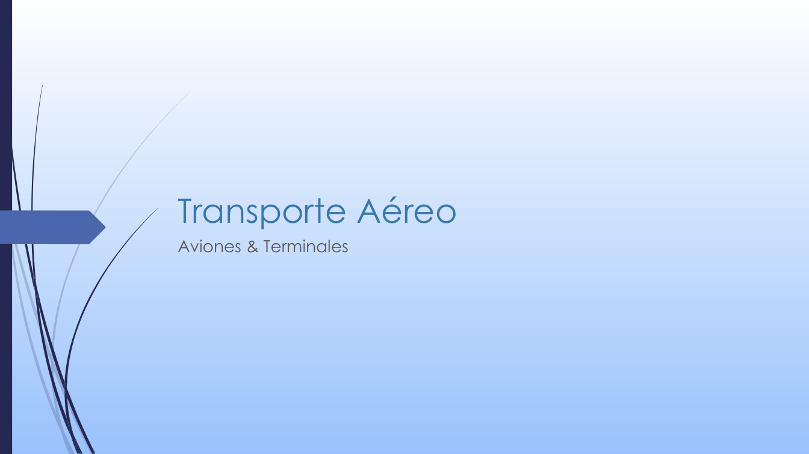
🔍 Zoom
P153
Pregunta 26: Características Operativas del Transporte por Carretera
▼
- Penetración (Servicio Puerta a Puerta): Es el único modo de transporte de superficie capaz de realizar un servicio integral punto a punto (puerta a puerta) sin necesidad de trasbordos intermedios ni acoples forzados a otra infraestructura.
- Flexibilidad: Amplia versatilidad para transportar casi cualquier tipo de carga con vehículos adaptados a cada naturaleza física.
- Rapidez y Disponibilidad Horaria: Gran facilidad para organizar viajes inmediatos sin estar sujeto a itinerarios rígidos de convoyes.
- Adaptabilidad a la Producción ("Just in Time"): Permite sincronizar las entregas fraccionadas directamente con las líneas de montaje de las fábricas.
- Desventajas Críticas: Muy contaminante en emisiones de gases de efecto invernadero y ruidos; alto deterioro inducido sobre la red vial; alta siniestralidad vial por tonelada-kilómetro transportada; congestión de tránsito.
P154
Pregunta 27: Estructura de Costos del Transporte Carretero: Usuario vs. Comunidad y Situación Argentina
▼
- Estructura General de Costos:
- Posee bajos costos fijos para la empresa transportista, dado que su principal soporte físico e infraestructura básica (las rutas y autopistas) es una red vial pública provista y mantenida por el Estado.
- Sus costos son altamente variables (directamente ligados a los kilómetros recorridos: combustible, neumáticos, peajes, jornales).
- Subdivisión de Costos Operativos:
- Costo de Operación del Usuario: Incurridos por el transportista/dador de carga: salarios y cargas sociales de conductores, combustible, amortización del vehículo, mantenimiento mecánico, seguros, neumáticos.
- Costo de Operación de la Comunidad: Aquel en el que incurre la sociedad y el Estado para planificar, construir, reparar y mantener la red de carreteras, además de los costos externos por accidentes de tránsito y contaminación ambiental.
- Composición del Costo en Argentina:
- El 75% del costo operativo total del transporte por carretera en Argentina se concentra en dos únicos rubros:
- Mano de obra (Salarios del chofer): $\approx \mathbf{50\%}$.
- Combustible (Gasoil): $\approx \mathbf{25\%}$.
- Incidencia del Flete Interno en el Precio del Producto:
- En Argentina el flete interno representa entre el 16% y el 22% del valor final del producto, comparado con el 13% en Brasil, 12% en Chile y sólo el 9% en EE.UU.
- Desbalance Modal Argentino vs. Internacional:
- En Argentina el 84% de las mercancías se trasladan por camión y sólo un 10% por ferrocarril.
- En EE.UU. la matriz está equilibrada: el ferrocarril traslada el 40% de la carga y la carretera el 31%.
P155
Pregunta 28: Parámetros Dimensionales Máximos y Cargas Permitidas por Eje en Pavimentos
▼
- Límites Dimensionales Convencionales en Argentina:
- Ancho Máximo: $2{,}40\text{ m}$ para la carga / $2{,}60\text{ m}$ exterior máximo del vehículo (con espejos plegados).
- Altura Máxima: Histórica $4{,}10\text{ m}$ (elevada a $4{,}30\text{ m}$ conforme a la normativa Mercosur).
- Longitud Máxima: $20{,}50\text{ m}$ para combinaciones de camión tractor y semirremolque estándar.
- Cargas Máximas Permitidas por Tipo de Eje:
- Eje Simple con Rueda Simple (Eje Director Delantero): $\mathbf{6\text{ Tn}}$.
- Eje Simple con Ruedas Duales: $\mathbf{10{,}5\text{ Tn}}$.
- Eje Doble en Tándem (con ruedas duales, separación entre $1{,}2\text{ y }2{,}4\text{ m}$): $\mathbf{18\text{ Tn}}$ (o $14\text{ Tn}$ si combina rueda simple/dual).
- Eje Triple en Tándem (Tridem, ruedas duales): $\mathbf{25{,}5\text{ Tn}}$.
- Eje Simple con Cubiertas Súper Anchas: $\mathbf{17\text{ Tn}}$.
- Caretones para Cargas Especiales Indivisibles: Máximo $\mathbf{1{,}8\text{ Tn por rueda}}$.
- Efecto de la Sobrecarga sobre el Pavimento (Regla de Daño Vial):
- > Una sobrecarga de tan sólo un 20% en los ejes de un camión reduce la vida útil del pavimento asfáltico hasta en un 40% (debido a la relación exponencial de fatiga de calzadas basada en la ley de la cuarta potencia de AASHTO).
P156
Pregunta 29: Modelos Constructivos de Camiones según la Carga
▼
La cátedra agrupa las unidades según su tipología de caja:
- Torton / Caja Cerrada (Furgón): Para carga seca general, bultos y paquetería paletizada protegida de la intemperie.
- Playo con o sin barandas: Carga general, perfiles metálicos, materiales de construcción y contenedores ISO.
- Tanque Cisterna: Para graneles líquidos (combustibles, químicos, leche fluida, aceites).
- Tolva: Graneles sólidos de escurrimiento libre (cemento, granos, arenas, áridos) con descarga por gravedad inferior.
- Jaula: Transporte especializado de ganado en pie y porcinos con ventilación perimetral.
- Portavehículos ("Mosquito"): Estructura metálica articulada de dos pisos para traslado simultáneo de automóviles.
- Carretón deprimido: Diseñado para cargas indivisibles de gran porte, maquinaria vial y sobredimensionados pesados.
P157
Pregunta 30: Bitrenes: Definición, Arquitectura, Pesos Brutos y Dimensiones
▼
- Definición Técnica de Bitren:
- Es una combinación vehicular de alto rendimiento y gran porte para transporte de cargas por carretera, constituida por una unidad tractora (camión tractor de alta potencia) acoplada a dos unidades articuladas de arrastre (dos semirremolques).
- Arquitectura de Acople (Configuración B-Train):
- Pesos y Dimensiones según Normativa Vigente:
- Peso Bruto Total Combinado (PBTC): Alcanza hasta $\mathbf{75\text{ Toneladas}}$ (con una capacidad de carga neta útil de hasta $51\text{ Tn}$).
- Longitud Máxima: Hasta $\mathbf{30{,}25\text{ metros}}$ entre paragolpes.
- Ancho Máximo: $2{,}60\text{ m}$.
- Altura Máxima: $4{,}30\text{ m}$.
- Potencia Específica Exigida: Relación mínima de $\mathbf{6{,}75\text{ CV por tonelada}}$ de PBTC (lo que exige motores de $450\text{ a }550+\text{ CV}$ para garantizar aceleración y no frenar el flujo en pendientes).
- Cantidad de Ejes: Habitualmente configuraciones de 7 o 9 ejes ($S1-D2-D2-D2$ o $S1-D2-D3-D3$).
P158
Pregunta 31: Bitrenes vs. Rodotrenes vs. Camiones Convencionales y Escalables
▼
- Bitren vs. Rodotren (Diferencia Constructiva de Articulación):
- Rodotren (A-Train): Utiliza un carro rodante intermediario independiente con enganche de lanza denominado dolly, que convierte al segundo semirremolque en un acoplado completo con lanza pivotante libre.
- Bitren (B-Train): Elimina el dolly. El segundo semirremolque apoya sobre la quinta rueda solidaria al chasis del primer semirremolque. Esto elimina el latigazo, otorga enorme estabilidad antivuelco y asegura una trayectoria de giro más cerrada y predecible.
- Camiones Escalables:
- Son camiones con acoplado o semirremolques convencionales a los que se les agregan ejes adicionales y mejoras técnicas (suspensión neumática, frenos EBS, mayor potencia motriz) para "escalar" su capacidad de carga a niveles intermedios ($49{,}5\text{ Tn}$, $52{,}5\text{ Tn}$ o $55\text{ Tn}$) sin requerir la configuración doble articulada de un bitren.
- Paradoja del Daño Vial (Bitren vs. Convencional):
- A pesar de que el bitren transporta mucha más carga total ($60\text{ a }75\text{ Tn}$ vs. $45\text{ Tn}$ del convencional), genera significativamente MENOR deterioro sobre el pavimento de las rutas.
- Causa técnica: Distribuye el peso sobre un número mayor de ejes (7 a 9 ejes), transmitiendo un máximo de $\mathbf{8{,}5\text{ toneladas por eje}}$, frente a las $\mathbf{10{,}5\text{ toneladas por eje}}$ que descarga un camión convencional estándar.
P159
Pregunta 32: Paquete Tecnológico de Seguridad Activa y Protección Vial en Bitrenes
▼
Para ser habilitado a circular, un bitren debe incorporar obligatoriamente tecnología de vanguardia:
- Sistemas de Freno ABS y EBS (Electronic Braking System):
- Modulación electrónica instantánea y sincronizada de la presión de frenado en todas las ruedas simultáneamente, reduciendo la distancia de detención y evitando el tijereteo del conjunto.
- Control Electrónico de Estabilidad (ESP / ESC):
- Detecta situaciones de inminente pérdida de adherencia o riesgo de vuelco, cortando automáticamente la potencia del motor y aplicando los frenos de ruedas individuales para estabilizar el convoy.
- Suspensión Neumática Integral con Válvula Niveladora:
- En todos los ejes del tractor y de los semirremolques. Amortigua y disipa los impactos dinámicos sobre la calzada, brindando un contacto suave que protege la estructura del pavimento y la carga.
- Limitador Electrónico de Velocidad de Fábrica:
- Bloqueado por software a una velocidad máxima de circulación de $\mathbf{80\text{ km/h}}$.
- Monitoreo Satelital Continuo por GPS:
- Registro en tiempo real de ubicación, velocidad, peso y cumplimiento de los corredores viales autorizados por Vialidad Nacional.
📌 Tema 6: Transporte Ferroviario de Carga
4 PreguntasTransporte Ferroviario de Carga: Caracterizado por elevados costos fijos de infraestructura vial y bajos costos marginales por tonelada. Coexistencia histórica de tres trochas en Argentina: Trocha Ancha (1,676 m) en líneas Mitre, Roca y San Martín; Trocha Media / Internacional (1,435 m) en línea Urquiza; y Trocha Angosta / Métrica (1,000 m) en el Ferrocarril Belgrano Cargas.
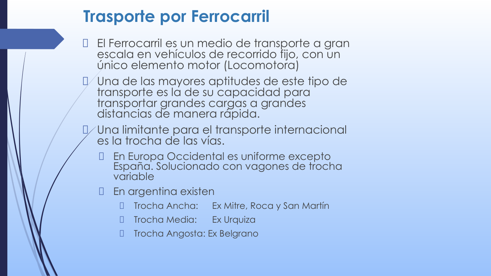
🔍 Zoom
P160
Pregunta 33: Transporte Ferroviario: Características, Costos Fijos y Aptitudes
▼
- Definición Operativa: Medio de transporte de tracción masiva en vehículos de guiado rígido de recorrido fijo, propulsados por un elemento motor común (locomotora diésel-eléctrica o eléctrica).
- Mayor Aptitud: Extraordinaria capacidad para trasladar grandes volúmenes y masas de mercancías a largas distancias a velocidad constante y con alto rendimiento energético.
- Estructura de Costos:
- Posee costos fijos sumamente elevados, originados en la necesidad de tender y mantener vías férreas, balasto, señalización y estaciones de transferencia, además de la cuantiosa inversión de capital en locomotoras y vagones tractores.
- Los costos variables por tonelada-kilómetro son marcadamente inferiores a los del transporte por carretera, por lo que sólo es rentable a partir de medias y largas distancias.
P161
Pregunta 34: Trochas Ferroviarias: Concepto y Red de Trochas en Argentina
▼
- Concepto de Trocha: Es la distancia geométrica interior transversal entre las caras internas de las dos cabezas de los rieles de una vía férrea. Constituye una limitante técnica crítica: trenes diseñados para una trocha no pueden rodar sobre otra sin cambiar bogies o utilizar vagones especiales de trocha variable.
- Las 3 Trochas Existentes en Argentina y sus Líneas Históricas:
- Trocha Ancha ($1{,}676\text{ m}$): Ferrocarriles Mitre, Roca y San Martín (cubren la pampa húmeda, Cuyo y Patagonia).
- Trocha Media o Universal ($1{,}435\text{ m}$): Ferrocarril Urquiza (conecta la Mesopotamia: Entre Ríos, Corrientes, Misiones y enlace internacional con Paraguay, Brasil y Uruguay).
- Trocha Angosta ($1{,}000\text{ m}$ / Trocha Métrica): Ferrocarril Belgrano (recorre el Noroeste y Noreste Argentino uniendo el interior productivo con los puertos del Gran Rosario y Buenos Aires).
P162
Pregunta 35: Clasificación del Servicio Ferroviario según Operatoria y Cargas
▼
- Según su Funcionamiento / Itinerario:
- Servicio Regular: Sujeto a itinerarios publicados y horarios rígidos fijos predeterminados.
- Servicio Chárter (Especial): Convenidos de manera particular entre la empresa ferroviaria y cargadores privados según cronogramas y volúmenes a medida.
- Según el Volumen y Unidad de las Mercancías:
- Trenes Completos (Tren Bloque): Todo el convoy se destina a un único usuario o cargador masivo. Habitualmente el origen y destino poseen desvíos ferroviarios propios (por ejemplo, desde un silo de acopio o mina directamente al muelle portuario). Máxima eficiencia sin maniobras intermedias de clasificación.
- Vagones Completos: Diseñado para clientes que completan uno o varios vagones pero no el tren íntegro. El tren efectúa paradas intermedias recogiendo y acoplando vagones en diferentes estaciones de la red.
- Cargas Fraccionadas: Para cargadores cuyos volúmenes no justifican la contratación de un vagón individual completo. La mercadería se consolida junto con otras cargas hasta almacén de destino.
P163
Pregunta 36: Situación del Ferrocarril en Argentina vs. Internacional
▼
- Extensión de la Red en Argentina:
- Posee una red teórica total de unos $35.000\text{ km}$, de los cuales se encuentran en estado operativo aproximadamente $27.000\text{ km}$.
- Evolución Histórica:
- Entre 1986 y 2012, el ferrocarril representó únicamente entre el 6% y el 8% del transporte terrestre nacional de cargas, reflejando un marcado deterioro tras el proceso de desarticulación de 1989/1992. Posteriormente la carga en toneladas-kilómetro se recuperó de $2.212\text{ MTn}\times\text{km}$ en 1993 a $10.025\text{ MTn}\times\text{km}$ en 2012.
- Comparación con Estados Unidos:
- En Argentina el transporte de mercancías depende en un 84% del camión, lo que encarece los costos de exportación del interior. En contraste, Estados Unidos traslada el 40% de su carga por ferrocarril, reservando la carretera para tramos cortos y de distribución capilar (31%).
📌 Tema 7: Transporte por Ductos y Tuberías
1 PreguntasTransporte por Ductos y Tuberías: Es el modo de transporte terrestre continuo más seguro, silencioso y económico para fluidos (oleoductos, poliductos y gasoductos troncales presurizados con estaciones de compresión/bombeo intermedias y pasaje de raspadores o scrapers inteligentes PIG).
P164
Pregunta 37: Transporte por Ductos: Fluidos Transportados y Proyectos de Cápsulas Neumáticas
▼
- Fluidos Convencionales:
- Transporte masivo y continuo de fluidos mediante tuberías de acero soldadas: petróleo crudo (oleoductos), gas natural comprimido (gasoductos), derivados de petróleo (poliductos) y agua potable (acueductos).
- Características Técnicas: Costo inicial de tendido muy elevado, pero costos operativos sumamente bajos, flujo ininterrumpido 24/7/365, e invulnerabilidad casi total a las condiciones climáticas de superficie.
- Proyectos Futuros de Carga Sólida en Cápsulas:
---
📌 Tema 8: Transporte Aéreo de Carga y Terminales Aeroportuarias
5 PreguntasTransporte Aéreo de Carga: Máxima velocidad de tránsito para productos de alto valor unitario, perecederos urgentes o medicamentos termolábiles. Utiliza unidades de carga unitarizada ULD (Unit Load Devices) compuestas por pallets aéreos amarrados con red y contenedores con perfiles contorneados a la curvatura interior del fuselaje del avión.
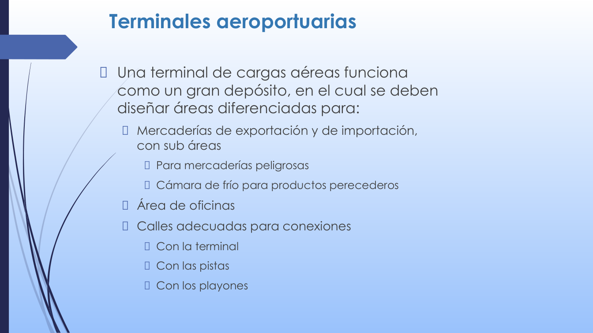
🔍 Zoom
P165
Pregunta 38: Transporte Aéreo: Velocidad, Costos, Participación Mundial y Cargas Típicas
▼
- Ventaja Crítica de Velocidad:
- Es el medio más veloz para grandes distancias. Por ejemplo: una carga enviada de Houston a Buenos Aires demora 21 días en viaje marítimo frente a sólo 10 horas de vuelo aéreo.
- Paradoja de Carga (Peso vs. Valor Económico):
- > El transporte aéreo mueve apenas el $\mathbf{1\%}$ del peso total de la carga mundial, pero ese porcentaje representa nada menos que el $\mathbf{30\%}$ del valor monetario total del comercio internacional.
- Productos Típicos Transportados:
- Componentes electrónicos y semiconductores.
- Productos farmacéuticos y vacunas de cadena de frío estricta.
- Partes y repuestos críticos aeronáuticos y de automoción (para evitar paradas de planta).
- Distribución del Tráfico Aéreo: Aproximadamente el 80% corresponde a tráfico internacional y el 20% a vuelos de cabotaje interior.
P166
Pregunta 39: Clasificación de Aeronaves de Carga por Uso y por Tamaño de Fuselaje
▼
- Clasificación por Uso Operativo:
- Avión Combi: La cabina principal de cubierta se divide longitudinalmente mediante un mamparo estanco ignífugo: una sección se destina a asientos de pasajeros y la otra sección a carga paletizada.
- Clasificación por Tamaño de Fuselaje y Ejemplos de Cátedra:
---
P167
Pregunta 40: Unidades de Carga Aérea (ULD): Contenedores y Pallets Normalizados IATA
▼
- Concepto de ULD (Unit Load Device): Son contenedores y plataformas especialmente conformados para adaptarse a la sección transversal curva del fuselaje de los aviones comerciales y cargueros.
- Material de Construcción: Se fabrican rigurosamente en aleaciones de aluminio liviano de alta resistencia y paneles de policarbonato para reducir al mínimo la tara muerta del elemento de embalaje.
- Clasificación Normalizada por la IATA:
- Contenedores estándar (con chaflanes para amoldarse al contorno del fuselaje).
- Contenedores de seguridad (reforzados con cerraduras electrónicas para mercaderías de gran valor).
- Contenedores isotérmicos / refrigerados (con hielo seco o unidad frigorífica activa para productos biológicos y perecederos).
- Contenedores para animales vivos (con sistemas de ventilación presurizada).
- Pallets aéreos metálicos certificados con redes y mallas de amarre exterior normalizadas.
P168
Pregunta 41: Terminales de Carga Aérea: Zonas, Equipos de Rampa y Operatoria
▼
- Infraestructura Básica del Aeropuerto: Se divide en tres zonas: terminal de pasajeros, terminal de carga aérea y áreas comunes de vuelo (pistas de aterrizaje/despegue, calles de rodaje, hangares y playones de estacionamiento).
- Zonificación Interna de una Terminal de Carga:
- Almacén general subdividido rígidamente para mercancías de exportación y de importación.
- Cámara de frío y ultracongelados para productos perecederos y fármacos.
- Depósito de máxima seguridad para cargas valiosas (bóveda acorazada).
- Depósito segregado con normas ICAO/IATA DGR para mercancías peligrosas.
- Oficinas de aduana, sanidad de frontera y agentes de carga.
- Equipos de Rampa y Patio:
---
P169
Pregunta 42: Actores del Transporte Aéreo: Forwarders, Couriers y Líneas Aéreas
▼
- Freight Forwarders (Agentes de Carga Internacional):
- Empresas encargadas de consolidar cargas generales de múltiples clientes para contratar bodegas a gran escala (ej. DHL Global Forwarding, Kuehne+Nagel, Panalpina, Bax Global).
- Empresas de Mensajería y Paquetería Express (Couriers):
- Especialistas en envíos urgentes puerta a puerta con límites unitarios típicos de hasta $40\text{ kg}$ por paquete (ej. FedEx, UPS, DHL Express), operando flotas aéreas propias.
- Líneas Aéreas Comerciales:
- Explotan sus vuelos regulares priorizando a los pasajeros y transportando carga en sus bodegas inferiores libres (Aerolíneas Argentinas, Lufthansa, Air France, Iberia).
📌 Tema 9: Ejercicios Prácticos Numéricos de Examen
3 Preguntas
P170
Ejercicio Práctico 1: Desglose de Costos de Flete de un Buque Interoceánico
▼
- Enunciado de Examen:
- Resolución Paso a Paso:
- Porcentajes de la Estructura de Costos de Cátedra (Diapositiva 19):
- Combustible: $35{,}00\%$
- Tripulación (Mano de Obra): $18{,}50\%$
- Cargas Portuarias: $10{,}00\%$
- Cálculo de los Montos Individuales:
- Cargas Portuarias:
- Combustible:
- Tripulación / Mano de Obra:
- Cálculo del Monto y Porcentaje en Conjunto:
- Porcentaje Conjunto:
- Monto Total Conjunto:
---
P171
Ejercicio Práctico 2: Comparativa de Ahorro Intermodal vs. Carretero Puro
▼
- Enunciado de Examen:
- Resolución Comparativa:
- Opción A: Transporte Carretero Puro:
- Tramo directo Salta $\to$ Buenos Aires en camión: $2.200\text{ USD}$.
- Opción B: Transporte Intermodal Combinado:
- Tramo 1 (Camión): Salta $\to$ Tucumán: $587\text{ USD}$.
- Tramo 2 (Tren de carga): Tucumán $\to$ Buenos Aires: $1.145\text{ USD}$.
- Costo Total Intermodal:
- Determinación del Ahorro Económico:
- Diferencia absoluta: $2.200 - 1.732 = \mathbf{-468\text{ USD}}$.
- Ahorro relativo porcentual:
- Conclusión: El transporte intermodal genera un ahorro directo del 21% en el costo logístico de la carga.
P172
Ejercicio Práctico 3: Rendimiento Energético y Carga por Eje en Pavimentos
▼
- Resolución Práctica de Dos Casos de Cátedra:
- Caso Combustible: "Si se dispone de $500\text{ litros}$ de gasoil para trasladar una carga de $10\text{ Tn}$, ¿qué distancia máxima alcanzará en camión versus barcaza fluvial?"
- Camión: $1\text{ Tn}$ con $1\text{ l}$ recorre $23\text{ km}$. Para $10\text{ Tn}$, el consumo es de $10\text{ l}$ cada $23\text{ km}$ ($0{,}435\text{ l/km}$).
- Barcaza: $1\text{ Tn}$ con $1\text{ l}$ recorre $250\text{ km}$.
- Caso Carga por Eje: "Determinar la diferencia de carga por eje transmitida al pavimento entre un camión convencional de $45\text{ Tn}$ (5 ejes, tractor $S1-D2$ + semirremolque $D2$) y un Bitren de $60\text{ Tn}$ (7 ejes, tractor $S1-D2$ + semirremolques $D2-D2$)."
- Camión convencional: Eje delantero $6\text{ t}$, tándem tractor $18\text{ t}$, tándem trasero $18\text{ t}$ $\implies$ $10{,}5\text{ t}$ por eje dual simple.
- Bitren: Peso distribuido en 7 ejes $\implies$ Transmite un promedio no mayor a $\mathbf{8{,}5\text{ t por eje}}$.
- Reducción de carga por eje: $10{,}5 - 8{,}5 = \mathbf{2{,}0\text{ t por eje menos}}$ (un 19% menos de impacto por eje, evitando la fatiga prematura de la calzada).
📌 Tema 10: Marco Regulatorio y Legislación Argentina (Síntesis Ejecutiva)
1 Preguntas
P173
Pregunta 43: Síntesis de Normativa Vial, Fluvial/Marítima y Portuaria Argentina
▼
- Respuesta de Cátedra (Resumen de Objetivos Clave sin detalle reglamentario):
| Norma / Ley / Decreto | Autoridad / Ámbito | Objetivo y Aplicación Central en la Cátedra |
|---|---|---|
| Ley Nº 24.449 | Tránsito y Transporte Nacional | Ley madre de tránsito que fija las normas generales de seguridad, circulación y jurisdicciones viales. |
| Decreto 779/1995 | Reglamentación Ley 24.449 | Reglamenta las condiciones técnicas operativas exigibles a los vehículos de carga por carretera. |
| Decreto 79/1998 | Dimensiones y Pesos Máximos | Fija formalmente la tabla oficial de dimensiones máximas (ancho $2{,}60\text{ m}$, altura $4{,}10/4{,}30\text{ m}$, largo) y pesos máximos por eje y configuración. |
| Normativa Bitrenes (2019) | Vialidad Nacional | Habilita la circulación libre de bitrenes de hasta $22{,}40\text{ m}$ y $60\text{ Tn}$, y circulación por corredores especiales para unidades de hasta $30{,}25\text{ m}$ y $75\text{ Tn}$. |
| Ley Nº 24.921 | Transporte Multimodal | Regula el régimen legal del transporte intermodal y multimodal de mercancías bajo un único contrato y documento de transporte. |
| Norma IRAM 5379 | Sujeción de Cargas | Establece los requisitos técnicos normalizados para los sistemas de sujeción, amarre y trincado de cargas mediante cintas sintéticas en camiones. |
| Ley Nº 18.398 | Prefectura Naval Argentina (PNA) | Ley Orgánica de la PNA; designa a la Prefectura como autoridad nacional de aplicación policial y técnica en todas las vías navegables del país. |
| Ley Nº 24.093 y Dto. 769/93 | Ley de Puertos | Regula la habilitación, administración y operación de los puertos públicos y privados comerciales e industriales de la República Argentina. |
| Decreto Nº 4.516/1973 (REGINAVE) | Navegación Fluvial y Marítima | Digesto de la navegación nacional; fija el régimen técnico, administrativo y operativo para la construcción, modificación e inspección de buques. |
| Decreto 890/1980 (REGISEPORT) | Seguridad Portuaria | Régimen integral que establece las exigencias de seguridad y vigilancia física dentro de las instalaciones y terminales portuarias. |
---
📊 Matriz de Frecuencia y Fechas de Exámenes
Estadísticas Grimolizzi| Eje Temático Nuclear | Preguntas Específicas Tomadas en Finales | Fechas de Exámenes Finales Verificadas |
|---|---|---|
| Puertos y Hub & Spoke | Puerto Hub, buques feeder, modelo de conexiones radiales Hub & Spoke y Puertos Secos. | Final 02/03/2026, Final 16/12/2025, Final 25/02/2025, Final Octubre 2025. |
| Buques Petroleros | 4 Diferencias entre petrolero y carga convencional (resistencia, estanqueidad, variación volumen $+1\%/10^\circ\text{C}$, manifolds). | Final 23/02/2026, Final 30/07/2025, Final Mayo 2025, Final 09/12/2024. |
| Terminales Petroleras | Mangueras vs. Brazo Articulado (Hardarm); Terminales mar adentro: Monoboya (SPM giratoria 360°) vs. Multiboyas. | Final 02/03/2026, Final 16/12/2025, Final 30/07/2025, Final 16/12/2024. |
| Bitrenes y Camiones | Definición de bitren, relación potencia/peso ($6{,}75\text{ CV/t}$), carga por eje ($8{,}5\text{ t}$ vs $10{,}5\text{ t}$), PBTC ($75\text{ t}$), bitren vs rodotren, tecnologías (ABS/EBS, ESP, $80\text{ km/h}$). | Final 23/02/2026, Final 09/02/2026, Final 16/12/2025, Final 25/02/2025. |
| Costos y Fletes (Numérico) | Ejercicio de buque interoceánico USD 450.000 (puerto 10%, combustible 35%, tripulación 18.5%); Costos carretera (salario 50%, combustible 25%). | Final 16/12/2025, Final Mayo 2025, Final 09/12/2024. |
| Buques Ro-Ro y Químicos | Características de Ro-Ro, Car-carriers vs tradicionales; Buques químicos OMI Tipo 1, 2 y 3. | Final 30/07/2025, Final 25/02/2025, Parciales Grimo. |
| Ferrocarriles y Trochas | 3 Trochas argentinas (Ancha, Media, Angosta) y ferrocarriles (Mitre/Roca/San Martín, Urquiza, Belgrano); balance modal con camión. | Final 09/02/2026, Final Octubre 2025, Parciales Grimo. |
| Transporte Aéreo | Avión pasaje/carga vs. combi vs. carguero puro; ULDs de aluminio IATA; Forwarders vs Courier. | Final 16/12/2025, Final 25/02/2025. |
| Sustentabilidad y Energía | Rendimiento por litro (Barcaza 250 km, Tren 90 km, Camión 23 km); Cold Ironing portuario; Enfoque Evitar-Cambiar-Mejorar. | Final 02/03/2026, Final 2025, Diapositivas oficiales. |
🤖 Unidad 12: Inteligencia Artificial en Supply Chain
Machine Learning, Redes Profundas, Agentes Autónomos, Pronóstico, Slotting, AMRs con SLAM y Digital Twins
📌 Tema 1: Fundamentos y Evolución de la Inteligencia Artificial
4 PreguntasFundamentos y Taxonomía de la Inteligencia Artificial: La IA abarca el diseño de sistemas computacionales que emulan el razonamiento y la autonomía humana. El Machine Learning es su subconjunto basado en modelos matemáticos que aprenden patrones de los datos sin ser programados explícitamente. El Deep Learning utiliza redes neuronales profundas de múltiples capas para procesar datos complejos no estructurados. Paradigmas de aprendizaje: Supervisado (con etiquetas), No Supervisado (clustering de clientes/SKUs), y Por Refuerzo (agentes que aprenden por recompensas en navegación robótica).
P174
Pregunta 1: Definición de Inteligencia Artificial (IA) y su Rol en Supply Chain
▼
- Definición de Inteligencia Artificial:
- Es la rama de las ciencias de la computación e ingeniería de datos que diseña sistemas y algoritmos capaces de simular procesos cognitivos humanos, tales como el aprendizaje a partir de la experiencia, el razonamiento lógico, la percepción visual y sensorial, el procesamiento del lenguaje natural, la resolución de problemas complejos y la toma de decisiones autónoma.
- Rol Transformador en la Supply Chain:
- La cadena de suministro moderna es un sistema hipercomplejo, dinámico y estocástico que integra proveedores, fábricas, centros de distribución, transportistas y clientes. La IA transforma la Supply Chain tradicional (lineal, reactiva y fragmentada en silos) en una red neuronal logística autónoma, interconectada y predictiva.
- Permite pasar de una gestión reactiva (basada en reportes de lo que ya ocurrió) a una gestión proactiva y prescriptiva en tiempo real (anticipando disrupciones, optimizando flujos de materiales antes de que ocurran cuellos de botella y reduciendo costos operativos entre un $15\%$ y $25\%$). A nivel mundial, más del $70\%$ de las empresas líderes ya integran soluciones de IA en su operativa intralogística.
P175
Pregunta 2: Taxonomía y Jerarquía: IA vs. Machine Learning (ML) vs. Deep Learning (DL)
▼
Existe una relación de contención jerárquica o concéntrica entre los tres conceptos:
- Inteligencia Artificial (IA) — El Universo Exterior:
- Es el concepto paraguas más amplio y abarcativo. Incluye cualquier técnica (desde sistemas expertos basados en reglas lógicas condicionales "if-then" y árboles de decisión clásicos, hasta algoritmos genéticos y robótica avanzada) que permita a una máquina imitar comportamientos inteligentes.
- Machine Learning (ML / Aprendizaje Automático) — El Subconjunto Intermedio:
- Subconjunto de la IA que no se basa en reglas fijas programadas manualmente por un humano, sino en algoritmos matemáticos y estadísticos que aprenden y mejoran su precisión de forma automática a partir del análisis de grandes conjuntos de datos (datasets). El sistema identifica patrones latentes y correlaciones probabilísticas para hacer predicciones o clasificaciones.
- Deep Learning (DL / Aprendizaje Profundo) — El Núcleo Tecnológico:
- Subconjunto especializado del Machine Learning basado en Redes Neuronales Artificiales Profundas (DNN) de múltiples capas ocultas (Deep Neural Networks). Simula la arquitectura del cerebro humano y tiene la capacidad única de extraer características jerárquicas complejas de datos no estructurados (imágenes, video en tiempo real de cámaras de circuito cerrado, telemetría acústica y texto libre) sin requerir ingeniería manual de atributos por parte de un operador humano.
P176
Pregunta 3: Algoritmos Fundamentales de Machine Learning en Logística
▼
Los algoritmos de ML más empleados en intralogística y distribución se seleccionan según la tipología del problema:
- Regresión Lineal y Polinómica: Predicción de variables numéricas continuas (ej. previsión del tiempo de descarga de un camión en función de la cantidad de pallets y tipo de carga).
- Regresión Logística: Clasificación binaria probabilística (ej. predecir la probabilidad de que una orden de pedido se retrase: Sí/No).
- Árboles de Decisión y Random Forest (Bosques Aleatorios): Ensembles de múltiples árboles que clasifican y ponderan la criticidad de roturas de stock o priorizan despachos en base a decenas de variables operativas concurrentes.
- Máquinas de Vectores de Soporte (SVM - Support Vector Machines): Clasificación en espacios multidimensionales de alta dimensionalidad (ej. categorización automática de mercaderías devueltas o detección de anomalías en pesaje).
- K-Nearest Neighbors (KNN) y K-Means Clustering: Agrupación no supervisada de clientes en zonas de entrega por proximidad geográfica y ventanas horarias, o clusterización de SKUs por frecuencia y afinidad de picking conjunto.
- Redes Neuronales Artificiales (ANN): Modelado no lineal de relaciones complejas en demanda estocástica y optimización multimodal de fletes.
P177
Pregunta 4: Paradigmas de Aprendizaje: Supervisado, No Supervisado y por Refuerzo
▼
- Aprendizaje Supervisado (Supervised Learning):
- Mecanismo: El algoritmo se entrena con un conjunto de datos previamente etiquetados por humanos (pares de entrada $X$ y salida esperada $Y$). El modelo aprende la función matemática de mapeo $f(X) \approx Y$ minimizando una función de pérdida (loss function).
- Aplicaciones en Supply Chain: Modelos de pronóstico de demanda futura entrenados con ventas históricas; predicción de tiempos de tránsito de buques portacontenedores según estacionalidad y ruta.
- Aprendizaje No Supervisado (Unsupervised Learning):
- Mecanismo: El algoritmo recibe datos en bruto sin etiquetar y sin guía humana previa. Su misión es descubrir patrones ocultos, agrupamientos naturales o anomalías estadísticas intrínsecas en la distribución de los datos.
- Aplicaciones: Agrupación de productos en almacenes (Slotting inteligente); detección de fraudes o anomalías en consumos de combustible de flotas de camiones; segmentación de comportamiento de proveedores.
- Aprendizaje por Refuerzo (Reinforcement Learning - RL):
- Mecanismo: Un agente inteligente interactúa activamente con un entorno dinámico, tomando decisiones secuenciales mediante prueba y error. El agente busca maximizar una recompensa acumulativa (reward) y evitar penalizaciones mediante funciones de valor (Q-Learning, Policy Gradient).
- Aplicaciones: Guiado autónomo de robots móviles (AMRs) y autoelevadores no tripulados para esquivar obstáculos en movimiento; control y despacho automático de cajas en sistemas de clasificación tipo sorter; ruteo dinámico de flotas ante cortes imprevistos de autopistas.
- Aprendizaje Semisupervisado y Autosupervisado:
- Utilizan una pequeña fracción de datos etiquetados combinada con una masa gigantesca de datos no estructurados, reduciendo en un $90\%$ el costo de catalogación manual en almacenes.
📌 Tema 2: Deep Learning, Redes Neuronales y Percepción Computacional
2 PreguntasDeep Learning y Percepción Computacional: Las Redes Neuronales Profundas (DNN) aprenden representaciones jerárquicas complejas. La Visión Artificial (Computer Vision) permite la inspección automática 360° de pallets, detección de fisuras o desmoronamientos y lectura óptica instantánea de etiquetas en arcos de entrada. El Procesamiento del Lenguaje Natural (NLP / LLMs) automatiza la lectura y carga de remitos, facturas y cartas de porte en el ERP sin intervención humana.
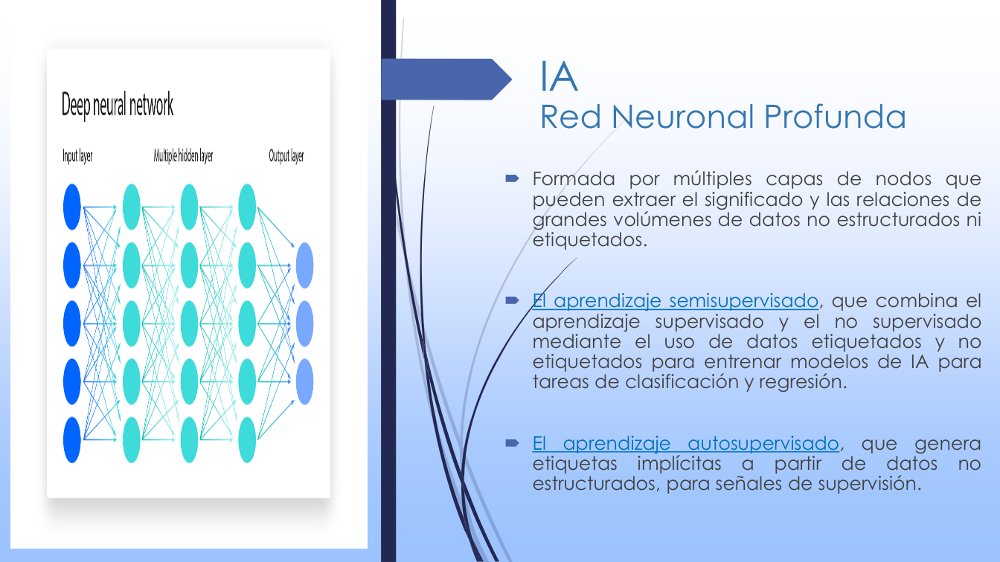
🔍 Zoom
P178
Pregunta 5: Redes Neuronales Profundas y Aprendizaje de Representaciones
▼
- Arquitectura de una Red Neuronal Profunda (DNN):
- Compuesta por una capa de entrada (Input Layer), múltiples capas ocultas intermedias (Hidden Layers) y una capa de salida (Output Layer).
- Cada nodo o "neurona artificial" realiza una combinación lineal ponderada de sus entradas más un sesgo ($z = \sum w_i x_i + b$) y aplica una función de activación no lineal (como ReLU, Sigmoide o GELU) que permite al modelo capturar fronteras de decisión y fenómenos no lineales de extrema complejidad.
- Aprendizaje de Representaciones (Feature Learning):
- A diferencia de los métodos clásicos donde un ingeniero debía programar a mano qué características buscar, una red profunda aprende automáticamente una jerarquía de abstracciones: en las primeras capas detecta bordes y texturas geométricas simples; en las intermedias detecta formas de pallets y cajas; y en las capas superiores reconoce el tipo exacto de producto, averías estructurales en el embalaje o texto en etiquetas deterioradas.
P179
Pregunta 6: Visión Artificial (Computer Vision) y Procesamiento de Lenguaje Natural (NLP)
▼
- Visión Artificial (Computer Vision con Redes Convolucionales CNN / Vision Transformers):
- Inspección de Calidad y Daños en Carga: Cámaras cenitales de alta velocidad en arcos de ingreso al almacén escanean pallets entrantes a 360°, detectando automáticamente deformaciones en cajas, desmoronamiento de carga, fisuras en pallets de madera o bolsas rotas sin detener el montacargas.
- Control de Inventario en Tiempo Real: Drones autónomos o cámaras fijas que barren las estanterías de racks leyendo códigos de barra 1D, códigos QR y etiquetas alfanuméricas en milisegundos, comparando el stock físico real con el registro del WMS y alertando desvíos.
- Seguridad Operativa en Planta (Interacción Hombre-Máquina): Cámaras con IA en autoelevadores detectan peatones a 360° distinguiendo chalecos reflectivos y detienen automáticamente el vehículo si un operario ingresa a la zona ciega de riesgo.
- Procesamiento del Lenguaje Natural (NLP / LLMs):
- Recepción y Procesamiento de Documentación: Extracción inteligente de datos desde cartas de porte, remitos escaneados, facturas comerciales y manifiestos de aduana en formato PDF o papel mediante OCR con NLP, cargándolos automáticamente en el sistema ERP sin digitación humana.
- Chatbots Logísticos y Asistentes de Operador: Interfaces conversacionales que permiten a choferes y clientes consultar estados de entrega, reprogramar turnos en dársena de carga (Slot Booking) y gestionar reclamos mediante lenguaje natural hablado o escrito.
📌 Tema 3: IA Generativa y Agentes Autónomos
2 PreguntasIA Generativa y Agentes Autónomos: La GenAI y los modelos de lenguaje permiten simular escenarios hipotéticos de estrés logístico y redactar informes de gestión. Los Agentes Autónomos perciben su entorno vía APIs del WMS, razonan sobre demoras de proveedores y emiten órdenes de compra correctivas o reprograman turnos de carga en dársenas automáticamente.
P180
Pregunta 7: IA Generativa: Mecanismo y Casos de Uso en la Cadena de Suministro
▼
- Mecanismo de Funcionamiento:
- A diferencia de la IA analítica tradicional (que clasifica o predice un número sobre datos existentes), la IA Generativa (GenAI) se basa en modelos de lenguaje extenso (LLMs) y arquitecturas Transformer con mecanismos de autoatención (Self-Attention). Estos modelos son entrenados con billones de parámetros para generar contenido completamente nuevo y coherente (código, texto, reportes, simulaciones sintéticas y escenarios estocásticos).
- Casos de Uso en Supply Chain:
- Simulación Sintética de Escenarios de Crisis: Generación de escenarios hipotéticos de estrés operacional ("¿Qué ocurriría si se cierra el Canal de Panamá por 30 días y se duplica el precio del combustible?") calculando rutas alternativas y sobrecostos en minutos.
- Generación Automática de Informes Ejecutivos: Transformación de dashboards numéricos complejos de Power BI en resúmenes ejecutivos escritos con análisis causa-raíz y recomendaciones estratégicas.
- Redacción y Auditoría de Contratos de Flete: Análisis de contratos marco de transporte y cláusulas Incoterms identificando penalizaciones abusivas y proponiendo redacciones optimizadas.
P181
Pregunta 8: Agentes de IA Autónomos: Capacidades y Aplicación en Centros de Distribución
▼
- Definición de Agente de IA Autónomo:
- Es un sistema de software independiente dotado de capacidades cognitivas que puede percibir su entorno (a través de sensores IoT, cámaras o APIs del ERP/WMS), razonar y formular planes de acción, y ejecutar tareas complejas de manera autónoma sin requerir instrucciones paso a paso ni autorización humana continua para cada evento rutinario.
- Ciclo de Operación de un Agente en un Almacén:
- Percepción: El agente detecta mediante una API que un proveedor clave despachará con 48 horas de retraso.
- Razonamiento: Analiza el nivel de stock de seguridad actual, los pedidos de clientes comprometidos para las próximas 72 horas y el costo de quiebre de stock frente al flete aéreo de emergencia.
- Acción: Contacta automáticamente a un proveedor secundario homologado vía EDI/API, emite la orden de compra urgente por el lote faltante, reprograma las órdenes de picking en el WMS y notifica al Gerente de Operaciones con la justificación económica de la decisión.
📌 Tema 4: Áreas Clave de Aplicación en la Cadena de Suministro
5 PreguntasÁreas Clave de Aplicación en Supply Chain: Pronóstico de demanda multivariable con Machine Learning (reduciendo el error de predicción en un $30-50\%$); optimización prescriptiva de inventarios y stock de seguridad dinámico; robots de compras y evaluación continua de proveedores (OTIF, costo); optimización de almacenes mediante Slotting dinámico de SKUs en estanterías según rotación diaria; y resolución del problema de ruteo vehicular (VRP) con tráfico y clima en tiempo real reduciendo kilómetros y emisiones de CO2.
P182
Pregunta 9: Pronóstico de Demanda Inteligente (Demand Forecasting)
▼
- Limitaciones del Método Tradicional:
- Los métodos estadísticos convencionales (Promedios móviles, Suavizado exponencial Holt-Winters, modelos ARIMA) son univariados y asumen linealidad. Dependen exclusivamente del historial de ventas pasadas, fallando rotundamente ante fluctuaciones del mercado, quiebres de tendencia o eventos disruptivos ("Efecto Látigo" o Bullwhip Effect).
- Enfoque con Machine Learning Multivariable:
- Los modelos de ML (Gradient Boosted Trees como XGBoost/LightGBM, redes LSTM recurrentes y Transformers) integran simultáneamente cientos de variables predictivas heterogéneas:
- Datos endógenos: ventas históricas diarias por SKU, elasticidad de precios, promociones de marketing, stockout históricos.
- Datos exógenos del entorno: pronósticos meteorológicos hiperlocales, indicadores macroeconómicos (tipo de cambio, inflación), tendencias de búsqueda en Google/redes sociales, eventos festivos y calendarios escolares.
- Impacto Operativo: Reduce el error de pronóstico (MAPE) entre un $30\%$ y $50\%$, permitiendo a las plantas industriales ajustar planes de producción maestros (MPS) con alta precisión y reducir inventarios ociosos.
P183
Pregunta 10: Gestión Predictiva y Prescriptiva de Inventarios en Tiempo Real
▼
- De la Gestión Estática a la Dinámica:
- Tradicionalmente, los parámetros de inventario como el Stock de Seguridad ($SS$) y el Punto de Pedido ($ROP$) se recalculan una o dos veces al año mediante fórmulas teóricas gaussianas con desviaciones estándar estáticas.
- Optimización con IA Prescriptiva:
- La IA recalcula los parámetros de inventario en tiempo real para cada uno de los miles de SKUs de forma individual:
- Modela los tiempos de reabastecimiento (Lead Time) de los proveedores como distribuciones de probabilidad dinámicas (no determinísticas), detectando si un proveedor está sufriendo demoras logísticas.
- Ajusta automáticamente el stock de seguridad en función del nivel de servicio objetivo deseado ($98\%, 99\%$) minimizando el costo financiero total (costo de almacenamiento + costo de capital inmovilizado + costo por quiebre de stock).
P184
Pregunta 11: Compras Inteligentes y Robot de Adquisiciones (Procurement AI)
▼
El módulo de Adquisiciones potenciado por IA opera a través de tres conductores ("drivers") estratégicos:
- Análisis Predictivo de Compras: Anticipa las necesidades de materias primas y repuestos en base al plan de producción y patrones estacionales antes de que se emita la requisición interna. Permite consolidar volúmenes corporativos y negociar contratos forward antes de aumentos tarifarios o picos estacionales de demanda.
- Optimización Continua de Proveedores: Algoritmos de Machine Learning construyen rankings dinámicos de proveedores en tiempo real ponderando automáticamente: índice de entregas a tiempo y completas (OTIF - On Time In Full), historial de no conformidades de calidad, estabilidad crediticia y competitividad en precios, emitiendo alertas tempranas de riesgo de abastecimiento.
- Automatización Robótica de Cotizaciones (Robot de Compras): Bots cognitivos que envían automáticamente solicitudes de cotización (RFQ) a proveedores homologados, extraen las cotizaciones recibidas, normalizan monedas y condiciones de pago, comparan ofertas en segundos y sugieren la adjudicación más conveniente liberando al departamento de compras para tareas estratégicas.
P185
Pregunta 12: Optimización de Almacenes e Intralogística (Slotting Dinámico y Layout)
▼
- Slotting Dinámico Inteligente (Reorganización de Ubicaciones en Racks):
- En lugar de una clasificación ABC estática anual, algoritmos genéticos y de clustering analizan la rotación diaria de cada artículo y su afinidad de pedido (productos que se piden juntos habitualmente en la misma orden).
- El sistema reasigna automáticamente las posiciones de almacenamiento: ubica los artículos de altísima rotación en los niveles ergonómicos dorados (a la altura de la cintura del operario y cercanos a la cabecera del pasillo) reduciendo los tiempos de traslado de montacargas y preparación de pedidos hasta en un $35\%$.
- Optimización de Recorridos de Picking (Traveling Salesperson Problem aplicado a Almacenes):
- Algoritmos de optimización de grafos calculan en milisegundos la ruta física 3D más corta y eficiente para que los preparadores de pedidos o vehículos filoguiados recojan múltiples pedidos consolidados (Batch Picking) evitando cruces y congestiones en los pasillos de racks.
P186
Pregunta 13: Ruteo Dinámico y Logística de Distribución (VRP y Reducción de Emisiones)
▼
- Resolución del Problema de Ruteo de Vehículos (VRP - Vehicle Routing Problem):
- La distribución de última milla y reparto capilar involucra miles de variables combinatorias imposibles de resolver eficientemente mediante métodos exactos.
- Los algoritmos de IA (Metaheurísticas, Algoritmos Genéticos y Redes Neuronales por Refuerzo) procesan de forma simultánea:
- Matriz de distancias y tiempos de viaje con tráfico vehicular en tiempo real (APIs de tránsito en vivo).
- Ventanas horarias estrictas de recepción en cada cliente o supermercado.
- Capacidad volumétrica cúbica y capacidad máxima de carga por eje del camión.
- Restricciones urbanas de circulación para camiones pesados y zonas de bajas emisiones.
- Sostenibilidad y Eficiencia:
- Permite reducir entre un $10\%$ y $20\%$ los kilómetros totales recorridos de la flota, aumentando la ocupación de bodega del vehículo, eliminando viajes en vacío ("deadhead miles") y reduciendo directamente las emisiones de gases de efecto invernadero ($CO_2$).
📌 Tema 5: Hardware Autónomo y Simulación Digital
3 PreguntasHardware Autónomo y Simulación: Salto de los AGVs rígidos guiados por cables o bandas magnéticas a los **AMRs (Autonomous Mobile Robots)** con tecnología SLAM y LiDAR que esquivan obstáculos dinámicos y recalculan trayectorias sin detener la producción. Mantenimiento predictivo (PdM) con sensores IoT en rodamientos de transportadores. Gemelos Digitales (Digital Twins): réplica virtual en tiempo real del almacén o red logística para experimentar cambios de layout y picos de demanda con cero riesgo operacional.
P187
Pregunta 14: Robótica Autónoma: AGVs Guiados vs. AMRs con Navegación SLAM
▼
Existe un salto generacional y tecnológico sustancial entre ambos equipos intralogísticos:
| Parámetro | AGV Tradicional (Automated Guided Vehicle) | AMR Inteligente (Autonomous Mobile Robot) |
|---|---|---|
| Tecnología de Navegación | Requiere infraestructura física fija instalada en el suelo: bandas magnéticas enterradas, cables inductivos, códigos QR pegados en el piso o espejos reflectores para láser (Línea de visión fija). | Navegación Natural y SLAM (Simultaneous Localization and Mapping) mediante sensores LiDAR 3D, cámaras estéreo y algoritmos de visión por computadora. No requiere modificar la nave ni pegar nada en el suelo. |
| Respuesta ante Obstáculos | Si una persona o un pallet bloquea su camino, el AGV se detiene por completo y queda bloqueado indefinidamente hasta que un humano despeje el obstáculo físico. | Detecta el obstáculo dinámico en tiempo real, recalcula una ruta alternativa de desvío autónoma en una fracción de segundo y continúa su misión de transporte sin detener la operación. |
| Flexibilidad de Layout | Muy costoso y lento de reprogramar; modificar una ruta exige obra civil o levantar el piso industrial. | $100\%$ flexible; modificar flujos de materiales se realiza en minutos mediante software cargando un nuevo mapa digital. |
| Flota Colaborativa | Rutas rígidas en fila india. | Trabajo en enjambre coordinado con IA central que distribuye dinámicamente misiones de transporte. |
---
P188
Pregunta 15: Mantenimiento Predictivo (PdM) Basado en IoT y Machine Learning
▼
- Evolución del Mantenimiento:
- Pasa del mantenimiento reactivo (reparar cuando se rompe) y del preventivo tradicional (cambiar componentes por calendario fijo aunque estén en buen estado) al Mantenimiento Predictivo (PdM) basado en la condición real del equipo.
- Arquitectura Técnica:
- Sensores IoT industriales instalados en tambores motrices de cintas transportadoras, cadenas de transportadores aéreos, motores de autoelevadores y rodamientos de bombas capturan variables críticas en continuo: aceleraciones espectrales de vibración triaxial, termografía infrarroja, consumo de corriente eléctrica y análisis de partículas en aceite lubricante.
- Algoritmos de Machine Learning (Autoencoders y Redes Convolucionales 1D): Entrenados con patrones de funcionamiento normal, detectan anomalías microscópicas semanas antes de que ocurra una avería (ej. microfisura incipiente en la pista exterior de un rodamiento).
- Beneficios: Eliminación total de paradas no programadas en líneas de producción críticas, reducción de costos de repuestos en un $30\%$ y aumento de la vida útil del activo.
P189
Pregunta 16: Gemelos Digitales (Digital Twins): Simulación Dinámica sin Riesgo
▼
- Definición de Gemelo Digital (Digital Twin):
- Es una réplica virtual informática fidedigna, dinámica y en 3D de un sistema físico real (un almacén automático, una línea de transportadores aéreos o una red logística completa de transporte), alimentada con un flujo bidireccional continuo de datos en tiempo real provenientes de sensores IoT, sistemas SCADA y transacciones del WMS/ERP.
- Utilidad y Toma de Decisiones en Ingeniería:
- Permite correr simulaciones estocásticas complejas de tipo "What-If" (¿Qué pasa si...?) sin intervenir físicamente la planta real:
- Evaluar cuellos de botella ante un incremento del $150\%$ en la demanda por CyberMonday antes de comprometer entregas.
- Probar rediseños de pasillos de estanterías, balanceo de estaciones de empaque o agregado de nuevos autoelevadores en el modelo virtual para medir exactamente el impacto en el rendimiento antes de invertir en obras de ampliación.
📌 Tema 6: Integración de Sistemas y Metodología de Implementación
3 PreguntasIntegración de Sistemas y Metodología: La IA no sustituye los sistemas de gestión transaccionales existentes, sino que los potencia interconectándose como capa analítica superior con los ERP (SAP, Tango), WMS, TMS y RPA. Metodología de adopción en 4 fases: Diagnóstico digital y calidad de datos -> Casos de uso prioritarios -> Pruebas de concepto (PoC) -> Escalado continuo.
P190
Pregunta 17: Arquitectura Digital Integrada: IA con ERP (SAP/Tango), WMS, TMS y RPA
▼
- Premisa Fundamental de Integración:
- La Inteligencia Artificial NO reemplaza los sistemas transaccionales existentes de la compañía (ERP, WMS, TMS), sino que actúa como una capa analítica y decisional superior que los potencia e interconecta inteligentemente.
- Arquitectura en Capas:
- Capa Transaccional / Registral: Sistemas ERP (SAP S/4HANA, Tango Gestión) que custodian la contabilidad, compras y órdenes de venta; sistemas WMS que controlan las ubicaciones de almacén; y TMS que gestiona viajes de camiones.
- Capa de Automatización de Procesos (RPA - Robotic Process Automation): Bots de software que transfieren datos repetitivos entre sistemas legados sin intervención manual.
- Capa de Inteligencia Artificial (Predictiva, Cognitiva y Prescriptiva): Algoritmos de Machine Learning que consumen los datos consolidados de todas las fuentes, detectan patrones, calculan planes óptimos y retroalimentan al ERP y WMS con órdenes ejecutables mediante APIs REST en tiempo real.
- Capa de Visualización Estratégica: Dashboards interactivos en Microsoft Power BI que visualizan KPIs logísticos con alertas predictivas automáticas para los directivos.
P191
Pregunta 18: Metodología de Implementación en Cuatro Etapas y Medición del ROI
▼
La adopción exitosa de soluciones de IA en empresas industriales exige seguir una metodología secuencial estructurada:
- Etapa 1: Diagnóstico Digital y Auditoría de Calidad de Datos:
- Evaluar la madurez digital de la organización y la integridad del repositorio de datos ("Garbage In, Garbage Out"). Si los datos maestros de pesos, dimensiones, stocks o tiempos de entrega en el ERP tienen errores humanos masivos, ningún modelo de IA funcionará correctamente.
- Etapa 2: Definición de Casos de Uso Prioritarios (Matriz Impacto vs. Complejidad):
- Seleccionar problemas puntuales que generen un retorno de inversión rápido (Quick Wins con alto impacto y baja complejidad técnica), tales como la optimización de compras o el pronóstico de demanda de SKUs críticos clase A.
- Etapa 3: Prueba de Concepto (PoC) y Medición del ROI:
- Desarrollar un piloto acotado en un centro de distribución o línea de distribución durante 60 a 90 días, midiendo rigurosamente los indicadores financieros y operativos de retorno: reducción de costos de inventario, disminución de horas extra y ahorro en combustible.
- Etapa 4: Escalado Iterativo y Aprendizaje Continuo:
- Integrar los modelos en producción en toda la cadena logística, estableciendo pipelines de reentrenamiento automático continuo (MLOps) a medida que ingresan nuevos datos operacionales.
P192
Pregunta 19: Desafíos Críticos: Calidad de Datos, Ciberseguridad y Ética Algorítmica
▼
- Gobernanza y Calidad de Datos: Garantizar la estandarización, limpieza, completitud y veracidad de la información histórica registrada en toda la cadena de abastecimiento.
- Ciberseguridad en Redes Logísticas: Al estar conectados a la nube robots AMRs, sistemas WMS y plataformas de proveedores vía IoT, la red logística se vuelve susceptible a ciberataques de ransomware que podrían paralizar la distribución física de alimentos o medicamentos. Se requiere cifrado de extremo a extremo y arquitecturas Zero Trust.
- Interoperabilidad: Superar la resistencia de integrar sistemas heredados antiguos (software monolíticos de décadas atrás sin APIs modernas).
- Gestión del Cambio Organizacional: Capacitación intensiva del personal de planta para que entiendan la IA como una herramienta que potencia sus habilidades ("Human-in-the-loop") y no como un reemplazo hostil.
📊 Matriz de Frecuencia y Fechas de Exámenes
Estadísticas Grimolizzi| Tema Específico de la Unidad 12 | Exámenes donde se tomó | Frecuencia |
|---|---|---|
| Definición de IA, Machine Learning vs. Deep Learning en Cadena de Suministro | Final 23/02/2026, Final 02/03/2026, Presentación Oficial UT-12 | 3 veces |
| Pronóstico de Demanda Inteligente (Demand Forecasting con ML) | Final 23/02/2026, Presentación Oficial UT-12 | 2 veces |
| Paradigmas de Aprendizaje (Supervisado, No Supervisado y por Refuerzo) | Final 02/03/2026, Presentación Oficial UT-12 | 2 veces |
| Robótica Autónoma: AGVs Tradicionales vs. AMRs con SLAM | Final 02/03/2026, Presentación Oficial UT-12 | 2 veces |
| Visión Artificial y Computer Vision en Control de Calidad y Pallets | Final 02/03/2026, Presentación Oficial UT-12 | 2 veces |
| Mantenimiento Predictivo (PdM) con Sensores IoT y Machine Learning | Final 23/02/2026, Presentación Oficial UT-12 | 2 veces |
| Gemelos Digitales (Digital Twins) en Simulación de Almacenes | Final 02/03/2026, Presentación Oficial UT-12 | 2 veces |
| Integración Tecnológica: IA con ERP (SAP/Tango), WMS, TMS y RPA | Final 23/02/2026, Presentación Oficial UT-12 | 2 veces |
| Compras Inteligentes y Automatización de Cotizaciones (Procurement AI) | Final 23/02/2026, Presentación Oficial UT-12 | 2 veces |
| Slotting Dinámico y Ruteo Dinámico de Distribución (VRP) | Final 23/02/2026, Presentación Oficial UT-12 | 2 veces |
| Agentes Autónomos e IA Generativa en Logística | Final 02/03/2026, Presentación Oficial UT-12 | 2 veces |
🏭 Unidad 7.5: Sistemas de Almacenaje y Almacenes Autoportantes
Cross Docking, Drive-In, Push-Back, Dinámicas por Gravedad, Pallet Shuttle, Transelevadores, AS/RS y Estructuras Autoportantes
📌 Módulo de Almacenaje de Alta Densidad y Selectivo
15 Preguntas CríticasClasificación y Criterios de Selección: Los sistemas de almacenamiento se dividen en 3 grandes grupos: Por tiempo de permanencia (Cross Docking directo y con preclasificación); En Bloque (bloques sobre piso limitados por resistencia del embalaje, y bloques de estanterías Drive-In LIFO, Drive-Through FIFO, Push-Back por gravedad a 2°-3°, estanterías dinámicas de doble pasillo FIFO y Pallet Shuttle con utilización del 85%); y De Acceso Directo / Selectivos (estanterías de base fija, bases móviles sobre rieles y Cantilever para barras y perfiles). En altura, la limitante es la cubierta del edificio (mantener 0,5m libre bajo cerchas) y el costo exponencial de elevadores trilateral/transelevadores por encima de los 4 metros. El Almacén Autoportante utiliza los propios puntales de los racks como estructura portante de cubierta y cerramientos perimetrales, ahorrando un 30% en obra civil.
P193
FINAL GRIMOLISSI: Indique al menos 2 diferencias entre un transelevador y un elevador trilateral.
▼
▼
Las diferencias estructurales y operativas clave son:
| Parámetro | Elevador Trilateral | Transelevador (AS/RS) |
|---|---|---|
| Altura de elevación | Alcanza hasta 15 metros de altura. | Supera los 40 metros de altura. |
| Modo de operación | Operado por un operador humano (Man-Up o Man-Down). | Es 100% automático (comandado por WMS/SGA). |
| Ancho de pasillo | Pasillos angostos de entre 1,5 m y 1,8 m. | Pasillos ultra estrechos: ancho de la carga + 100 mm por lado. |
| Movilidad entre pasillos | Puede cambiar de pasillo de forma autónoma. | Fijo a su pasillo (o mediante carro de transferencia). |
P194
FINAL GRIMOLISSI: Describa el funcionamiento de las estanterías tipo Drive, el proceso de gestión de inventario y sus variantes.
▼
▼
El sistema de estanterías tipo Drive es una solución de almacenamiento en bloque de base fija diseñada para maximizar el uso del espacio al permitir que el autoelevador ingrese físicamente al pasillo interior del bloque con la carga elevada por encima del nivel de apoyo. Es el más económico de los sistemas de base fija.
- Drive-In: Posee un único extremo de acceso (generalmente apoyado contra pared). Gestión de stock LIFO.
- Drive-Through: Configurado en isla con acceso por ambos extremos (un lado para carga y otro para extracción). Gestión de stock FIFO.
P195
FINAL GRIMOLISSI: Almacén Push-Back, funcionamiento y tipos de soportes por canal.
▼
▼
Sistema de almacenamiento en bloque de base fija que permite referencias únicas por canal sin que la máquina deba ingresar al pasillo:
- Dispositivos de apoyo y profundidad:
• Cunas o carros anidados: permiten hasta 4 pallets por canal.
• Rodillos: alcanzan hasta 6 pallets por canal (según el peso). - Funcionamiento: Posee una leve inclinación hacia el pasillo (2° a 3°). Al ingresar un nuevo pallet empuja al anterior hacia atrás. Al retirar un pallet, los demás avanzan por gravedad.
- Gestión & Rendimiento: Sistema LIFO, rotación media, utilización mayor al 85%. Alta seguridad.
P196
FINAL GRIMOLISSI: Nombrar los 3 grandes grupos de almacenamiento. ¿Cuáles son? Ejemplos de cada uno.
▼
▼
- 1. Por tiempo de permanencia: Cross Docking (Ej: Centro de distribución regional de bebidas o plataforma e-commerce).
- 2. En bloque (Alta densidad): Sobre piso o Bloque de estanterías (Ej: Drive-In, Push-Back, Dinámicas, Pallet Shuttle).
- 3. De acceso directo (Selectivos): Base fija convencional, base móvil, Cantilever y Piezas pequeñas (Ej: Racks selectivos en depósitos multireferencia).
P197
FINAL GRIMOLISSI: Para pallets sobre piso y estanterías, ¿cuáles son las limitaciones de altura y qué tipos de bloques de estanterías se utilizan?
▼
▼
Pallets sobre piso: La altura de apilamiento está estrictamente limitada por la resistencia mecánica y estabilidad del embalaje/envase y por la resistencia de la base del pallet (carga nominal de apilado sin deformarse o colapsar).
Pallets en estanterías: La altura de apilamiento NO depende de la resistencia del embalaje, sino de la altura del edificio y del alcance de los equipos de movimiento. Los bloques de estanterías de alta densidad utilizados son: Drive-In / Drive-Through, Push-Back, Dinámicas a rodillos y Pallet Shuttle.
P198
FINAL GRIMOLISSI: Zonas del almacén y desglose del porcentaje de costo operativo total.
▼
▼
Las 6 zonas básicas del almacén son: 1) Zona de carga y descarga, 2) Recepción y logística inversa, 3) Almacenaje, 4) Preparación de pedidos (Picking), 5) Expedición (Despacho), 6) Oficinas y servicios.
• Picking (Preparación de pedidos): Representa el 50% al 55% del costo operativo total (es la tarea más costosa; el 60% de este tiempo se va en recorridos).
• Despacho: Representa el 18% del costo operativo.
• Almacenaje: Representa el 15% del costo operativo.
• Recepción: Es la menos costosa, con el 12% del total.
P199
FINAL GRIMOLISSI: Explicar las zonas de carga y descarga de camiones (Integradas vs Independientes).
▼
▼
1. Zonas Integradas al Almacén: Directamente conectadas al edificio mediante un muelle de carga/descarga y portones seccionales (el camión acopla directamente a la puerta). Brinda protección total contra el clima, pero requiere maniobras de atraque más precisas.
2. Zonas Independientes: La operación se realiza en una playa o campamento adyacente exterior. El tiempo de atraque del camión es menor y más simple, pero exige mayor recorrido de traslado de mercadería y queda expuesto a inclemencias climáticas.
P200
FINAL GRIMOLISSI: Tipos de almacenamiento según su grado de protección contra el ambiente.
▼
▼
- 1. Almacenamiento en Exteriores:
• Sin protección: Materiales inmunes a la intemperie (árido, chatarra).
• Con envoltura: Silos bolsa, fundas de film extensible.
• Con cobertura: Tinglados abiertos sin cerramientos laterales (caños, perfiles). - 2. Almacenamiento Cubierto: Edificios tradicionales o almacenes autoportantes que brindan protección total contra la intemperie.
P201
FINAL GRIMOLISSI: ¿Qué es un Almacén Autoportante y cuál es su porcentaje de ahorro en construcción?
▼
▼
Es una estructura aplicada a alturas superiores a los 15 metros donde las estanterías metálicas soportan las paredes, el techo, la carga del viento, nieve, sismos y las fuerzas de los transelevadores.
El ahorro de costos de construcción para alturas de entre 15m y 20m es en promedio del 30% respecto a una nave convencional.
P202
FINAL GRIMOLISSI: En la operación de un almacén, enumere las 3 posibilidades para la recolección en armado de pedidos (Picking).
▼
▼
Posibilidades de flujo: 1) Flujo hombre a producto, 2) Flujo producto a hombre, 3) Flujo mixto.
Métodos básicos de extracción física: Extracción por cada pedido (orden individual), Extracción por referencias (batch picking), Extracción por zonas (zone picking).
P203
FINAL GRIMOLISSI: Definición y características estructurales de las estanterías Cantilever.
▼
▼
Estanterías compuestas por columnas con ménsulas (brazos en voladizo) construidas en perfiles U o doble T soldados. Se amuran al piso con fijaciones mecánicas (brocas) y se unen mediante largueros. Separación entre columnas ~1m, altura habitual hasta 6m. Para cargas largas (caños, tirantes).
P204
FINAL GRIMOLISSI: Características del sistema de estanterías de Doble Profundidad.
▼
▼
Permite ubicar dos pallets por canal reduciendo pasillos de maniobra. Opera en LIFO. Requiere autoelevadores equipados con horquillas telescópicas para alcanzar la posición posterior.
P205
FINAL GRIMOLISSI: ¿Cuáles son las dimensiones y características de una Lanzadera Vertical (Producto a Hombre)?
▼
▼
Las lanzaderas verticales (VLM) para piezas pequeñas responden al principio Producto a Hombre. Sus dimensiones estándar de apunte son: Alto: 4m a 15m, Ancho: 2m a 4m, Profundidad: Hasta 2m.
P206
FINAL GRIMOLISSI: Parámetros del carro automatizado Pallet Shuttle.
▼
▼
Longitud del canal hasta 40 metros, capacidad de carga del carro hasta 1.500 kg, posee sistema de elevación propio para despegar el pallet del apoyo, opera en FIFO o LIFO, utilización de espacio > 85%.
P207
FINAL GRIMOLISSI: Definir carga nominal útil vs carga nominal de apilado.
▼
▼
Carga nominal útil: Carga máxima que puede transportar un pallet durante su traslado.
Carga nominal de apilado: Carga máxima que puede soportar el pallet inferior apoyado en el suelo durante el apilamiento estático. Es siempre mayor que la carga útil (ej: pallet soporta hasta 4.000 kg en apilamiento sólido sobre piso, pero 1.000–1.500 kg en movimiento o rack).